Preface

This is a book for beginners who want to study commodity price analysis from a fundamental perspective. These chapters are derived from my lecture notes teaching ACE 427: Commodity Price Analysis at the University of Illinois, and then AGEC 421 at Purdue University. The first outline of the book was based an outline given to me by Scott Irwin, who has taught ACE 427 at the University of Illinois for years.
This book is targeted at the upper level undergraduate student, or professional beginning a career related to commodity markets. The objective is to familiarize the reader with the sources of market information and research commonly used by practicing professionals working in the industry.
This book is updated with current information in the tables and figures each time I teach the course. Previous versions of the book can be found here.
For readers interested in more in-depth analysis of commodity prices from a statistical perspective, I am working on an R Companion to this book.
1 Grain and Oilseed Markets
Highlights
- Biological processes of corn, soybeans, and wheat from planting, to growing, to harvesting, to storage
- How weather interacts with the biological processes to determine production
- Recent trends in production, exports, and prices.
- Varieties of wheat and determinants their differential prices.
Check your Understanding
- When are corn and soybeans planted?
- When are corn and soybeans harvested?
- When are the different varieties of wheat planted and harvested?
- What is the main driver of differential prices in wheat varieties?
Since commodities are natural things that are subject to biological processes, you must first understand the basic biological processes involved in the commodity’s production in order to understand and anticipate what happens to it’s price. This chapter introduces the basic production processes and timeline for major grains and oilseeds: Corn, Soybeans, Hard Red Winter Wheat (KC wheat), Hard Red Spring Wheat (Minneapolis wheat), and Soft Red Winter Wheat.
1.1 Corn
In the Corn Belt corn is planted from about March to May, and harvested from September to October. Pollination usually occurs in July. Since pollination is key to production and yield, new crop futures prices tend to be highly variable in the months of June and July as weather patterns and realizations of heat and rainfall mean the difference between a high yielding year and low yielding year.
Of lesser concern, but still followed by market participants is the weather during planting and harvest. Sometimes it is too wet, making it difficult to get acreage planted in a timely manner. If corn is planted too late it may suffer a yield penalty. Also, weather during harvest can impact prices. If harvest time is very wet, it can make it difficult to get the crop out and dry before it is damaged.

Corn Acres Planted 2019, map from Aaron Smith’s Ag Data
1.1.1 Recent Trends in Acreage, Yields, Production, and Use
Corn planted acres in the U.S. has varied from just under to just over 90 million acres in recent years. Farmers in the corn belt decide how much of their land to plant to corn and how much to plant to soybeans. So sometimes it is said in the spring that corn and soybeans are ‘competing for acres’ based on the relative new crop futures prices of corn and soybeans. If corn is more profitable, farmers will shift some acres toward corn, and if soybeans are more profitable farmers will shift some acres toward soybeans. Because of this, years with high corn planted acres tend to have lower soybeans planted acres and vice versa.
Seed hybrids and genetic modification have lead to dramatic increases in yield over the last 100 years. Although, corn planted acres have been relatively flat for a very long time, production has skyrocketed.
The following figures come from the USDA’s National Agricultural Statistics Service (NASS).
Corn prices can be quite volatile, with prices and production highly inversely related to one another.
Data from USDA NASS
Corn is used in the U.S for a variety of purposes. Largest use categories are feed (for livestock), and alcohol for fuel use (ethanol blended with gasoline).
Data from USDA ERS
1.2 Soybeans
Soybeans are planted later than corn, from about April to June. Weather affects soybean production prospects and generates similar price responses as it does for corn. Soybean prices, therefore are highly dependent on what happens during the summer months.

Soybean Acres Planted 2019, map from Aaron Smith’s Ag Data
1.2.1 Recent Trends in Acreage, Yield, Production, and Use
Soybeans did not begin to be commercially grown in the U.S. until the
1.3 Recent Trends in Acreage, Yield, Production, and Use
Soybeans were not commonly planted in the U.S. until the mid 20th century, but once it was introduced, acreage expanded rapidly. Soybeans have also benefited from improved yields due to biotechnology.

Soybean Production and Prices, Data from USDA NASS
Soybeans consumed in the U.S. are almost exclusively processed into soybean meal and soybean oil, a process referred to as ‘crushing.’ Soybean meal is high in protein and used as an ingredient in livestock feed. Soybean oil is used for a variety of things, but the bulk of it is consumed as edible oil.
About half of the soybeans produced in the U.S. are exported, and more than half of soybeans exported are imported by China.
Data from USDA ERS
1.4 Wheat
There are three main types of wheat grown in the U.S. Hard Red Winter Wheat (HRW/KC Wheat), Hard Red Spring Wheat (HRS/Minneapolis wheat), and Soft Red Winter Wheat (SRW/Chicago Wheat). Each of these types of wheat have its own futures contract, are grown in distinct regions of the country, and have different end uses. The main distinction between the types of wheat is how much protein is contained in the kernels. This variation in protein also determines what the variety of wheat is ultimately used for.

Figure 8: Wheat Variety Growing Areas
(Source USDA-ERS)
Blue = HRW
Gold = HRS
Red = SRW
1.4.1 Hard Red Winter Wheat
HRW wheat is planted in the fall and lays dormant or grows very little during the winter. As temperatures rise in the spring, wheat plants start to grow. It looks like grass before it is mature. During April and May the wheat plants make ‘heads’ where the wheat kernels grow. When the plants die the grain is harvested.
HRW wheat is primarily used to make bread flour.
Hard Red Winter Wheat is sometimes called Kansas City Wheat because the Kansas City Board of Trade had a HRW wheat futures contract. The KCBOT was recently bought by the CME Group, but HRW continues to be known as KC wheat.

Figure 9: Hard Red Winter Wheat
(Source USDA-GIPSA)
1.4.2 Hard Red Spring Wheat
Hard red spring wheat is planted in the spring, around April or May and is harvested in the fall, around September. It has the highest protein content (13-16%) of all the major wheat varieties, making it high in gluten content, which is good for baking bread. It also is used to blend with lower protein wheat flour varieties to increase the protein content.
HRS wheat is referred to as Minneapolis Wheat because the Minneapolis Grain Exchange offers a futures contract in HRS wheat.

Figure 10: Hard Red Spring Wheat
(Source USDA-GIPSA)
1.4.3 Soft Red Winter Wheat
Soft Red Winter Wheat is planted in the fall, and is harvested in the late spring, like HRW wheat. Soft red winter wheat is lower in protein which makes is suitable for use in cakes, cookies, and crackers, where high gluten content is not required.
SRW wheat is referred to as Chicago Wheat because the Chicago Board of Trade offers a futures contract for SRW wheat.

Figure 11: Soft Red Winter Wheat
(Source USDA-GIPSA)
1.5 Recent Trends in Acreage, Yield, Production, and Use
Data from USDA NASS
Data from USDA NASS
2 Commodity Price Analysis and Forecasting
A commodity is a good that can be supplied without qualitative differences. A bushel of wheat is regarded as a bushel of wheat everywhere. Commodities are fully or partially fungible so that the market treats a unit of good the same no matter who produced it or where it was produced. Think of grain elevators, for example. Farmers bring their grain to an elevator at harvest. Sometimes they sell it outright to the elevator, but sometimes they pay the elevator to store it for them. When the farmer decides to come get his grain out of storage do you think he gets the exact same kernels he brought in? Of course that would be impractical. The elevator just gives him back the same amount of grain he brought in of the same quality. The farmer is happy because the wheat is fungible. The grain he will be able to sell the grain he took out just as easily as the grain he put in. This is in stark contrast to differentiated goods where branding and quality make important distinctions between goods, resulting in differentiated demands. Just try to find someone indifferent between iPhone and Android!
Since commodities are fungible, it also makes sense that prices of commodities are determined by the entire (often global) market for the good. They tend to be basic resources such as agricultural and food products, metals, energy, an fibers. The fungibility of commodities enables the commodity to be traded in centralized spot and futures markets.
2.0.1 Trasformation Over Space, Time, and Form
Commodities can undergo various transformations. Standard price analysis usually groups these into three broad categories: Space, Time, and Form. Studying a commodity’s transformation over space comes about from the fact that the production of a commodity is often concentrated in a specific geographic location, while consumption of commodities is usually dispersed. In order for traders to have incentive to move a commodity from one location to another, a certain patter of prices must prevail. In short, traders must be able to make a profit, or at least break even in the business of moving a commodity from one location to another.
Studying a commodity’s transformation through time considers the nature of prices required to provide incentive to store the commodity for use at a later date (if it is possible to store the commodity - more on that below), or incentive to bring the commodity to market. Using the example of grain again, grain is produced once per year (in the United States), but consumption of grains occurs all year long. In order for the market to coordinate just the right amount of grain to be stored through time, prices through time give incentive for those holding stocks of grain to bring them to market or hold on longer.
Commodities can be transformed into completely different goods. Sometimes this transformation creates new commodities; for example soybeans are crushed into soybean oil and soybean meal - both of which are considered commodities. Other times the transformation creates products that are no longer considered commodities, where quality and differentiation matters. Meat products are a good example of this. Feeder cattle and live cattle are commodities, but through the slaughter and processing process, the commodity becomes differentiated products - different cuts of meat at the grocery store. Another example is coffee. Green coffee beans are considered a commodity, but once they enter the supply chain companies start transforming it by roasting, grinding, and brewing the coffee. Starbucks, for example, does not sell a commodity. Their product is highly differentiated and they market the fact that their product is highly differentiated in the marketplace.
2.1 Storable and Nonstorable
A key difference among commodities is their degree of storability. Some can be stored for long periods of time:
- Corn
- Soybeans
- Wheat
- Peanuts
- Crude Oil
- Natural Gas
Others are highly perishable or otherwise non-storeable :
- Hogs
- Cattle
- Milk
- Potatoes
- Apples
- Tomatoes
- Electricity
The storability of a commodity has profound implications on market prices. With storable commodities, they can be stored from one period to the next. This means the prices in one period must be related to prices in another period because those holding stocks of the commodity will constantly calculating their expectation of when best to sell - now or later. With non-storable commodities, prices can only be affected by the current supply of the commodity, since past supply cannot be brought forward.
2.2 Commodity Prices
Commodity prices are important both economically and politically in almost all countries. Commodity prices strongly influence farm income, and this can be quite volatile from year-to-year. The United States has a long history of policies aimed at smoothing out the price volatility and income volatility for farmers.
- Price supports
- Revenue supports
- Subsidized crop insurance programs
Some countries’ economies rely heavily on the export of various kinds of commodities. This leaves their economic growth and prosperity subject to volatility in commodity prices. In other countries, particularly in the developing world, a large share of the population for still engages in agricultural production for their livelihood. For these people, commodity prices determine the bulk of their income, and incomes of the poor is a primary concern in developing economies.
2.2.1 Forecasting Commodity Prices in Business
Some companies business model leaves them exposed to risk that comes from price volatility and spend considerable resources forecasting prices. These tend to be companies that deal directly in commodities and need to hedge risks. Some examples include:
- ADM
- Cargill
- Caterpillar
- ConAgra
- Kraft
- Weyerhauser
There are consistent employment opportunities for students trained in price analysis and forecasting, and a growing interest in expertise in risk management strategies.
2.2.2 Price Analysis versus Forecasting
Price analysis and price forecasting are not exactly the same thing. Price analysis tends to be backward looking, while price forecasting is forward looking.
Price Analysis: - Goal is to understand the complex array of forces that influence the level and behavior of commodity prices - Aids in understanding performance of commodity markets - Aids in the development of policy, and is a key component of the policy analysis that leads the a policy’s promotion or demise
Price Forecasting: - Goal is to reliably and accurately forecast future price levels of commodities - The forecasts can be used in marketing and speculative strategies
2.3 Forecasting Basics
All meaningful forecasts guide decisions
- An awareness of the nature of the decisions will impact the design, use, and evaluation of the forecasting process
Form of forecast statement
- Directional forecast
Fed steer prices for the first quarter of 2016 will be down compared to the same quarter last year.
- Simple point forecast
Fed steer prices for the fist quarter of 2016 = $150/cwt.
- Interval forecast
Fed steer prices for the first quarter of 2016 = $140-$160/cwt
- Confidence interval forecast
We are 80% confident that fed steer prices fore the first quarter of 2016 will be between $140-$160/cwt
- Density forecast
Provides entire probability distribution of forecast price.
Forecast horizon
Forecast horizon is the number of periods between today and the date of the forecast made.
If dealing with monthly data:
- 1-step ahead = One month beyond the current month
- 2-step ahead = two months beyond the current month
h-step ahead =hmonths beyond the current month
More complex situations are common in crop market forecasting
- Typical unit of time is a ‘marketing year.’[^More on the marketing year in Chapter 3]
- Forecasts are typically updated monthly.
Parsimony principle
- Other things equal, simple approaches are preferred
- Also known as Occam’s Razor
The Principle States that among competing hypotheses that predict equally well, the one with the fewest assumptions should be selected. Other, more complicated solutions may ultimately prove to provide better predictions, but - in the absence of differences in predictive ability - the fewer assumptions that are made, the better. (Source: Wikipedia)
Simple approaches tend to work best in real world applications
- Based on decades of experience and research
- Simpler models can be estimated more precisely
- Because simpler models can be more easily interpreted and understood, unusual behavior and outcomes can be more easily spotted.
It is easier to communicate the basic behavior and design of simple approaches, so they are more likely to be used by decision-makers.
Simple approaches lessen the chances of data mining problems.
- If a complex model is tailored to fit historical data very well, but does not capture the true nature of the data process, forecasts will perform poorly.
We focus on two types of “simple” forecasting methods.
Fundamental analysis: use of economic models and data on production, consumption, income, etc. to forecast prices. You will recognize this approach as balance sheet analysis in chapter 3.
Reduced form time-series econometric: use of statistical econometric models that features minimal inputs beyond a few recent prices to generate a forecasting model.
Not covered here, but a method used widely by day-traders and other market participants is technical analysis, which is the use of past price patterns to predict future price movement. There are scores of books on the topic of technical analysis, if interested.
2.3.1 Commodity Production Cycles
The production of agricultural commodities is bound by the biological traits of the life cycle. Forecasting prices requires an awareness of key seasons, and problems that can arise during each phase of the life cycle.
2.4 Long Term Trends
It is useful to begin our exploration of agricultural prices from a long term historical perspective. The figure below is monthly prices received by farmers in the U.S. from 1908 to 2015. Figure 1 presents a graph inspired by the Farmdoc Daily article by Scott Irwin and Darrel Good from April of 2016. In this article they identify three distinct periods of price regimes in corn: pre-1973, 1973-2005, and 2005 to present. Indeed, by simple visual inspection there seems to be three periods of stable prices, from 1908-1973, 1974-2006, and 2007-present. Although the most recent period seems to be the most volatile and provides less confidence that a similar pattern will persist going forward.
Corn Prices Long Term
There is a clear run-up in prices in the 1970’s and again around 2006-2007. What caused these seemingly permanent price hikes? Make sure you check out the readings to find out!
2.5 Readings
- Agricultural Commodity Price Spikes in the 1970s and 1990s: Valuable Lessons for Today
This article was published by staff at the United States Department of Agriculture’s Economic Research Service. They look at historical corn prices and provide some perspective about what caused the price increases in the 1970’s and mid-2000’s.
- Market Instability in a New Era of Corn, Soybean, and Wheat Prices
Scott Irwin and Darrel Good had an article in Choices magazine, that examined the price ‘eras’ we described in this chapter. They also discuss the causes of the price paradigm shifts. They argued in 2009 that the new ‘Era’ of crop prices were here to stay, and history has bore this out so far.
- The New Era of Corn and Soybean Prices Is Still Alive and Kicking
Scott Irwin and Darrel Good revisit the price ‘Era’s’ discussion again in April of 2016.
2.6 Exercises
From the readings, describe causes of the rapid and persistent increase in prices in the early 1970’s.
From the readings, describe the causes of the rapid and persistent increase in prices in 2006/2007.
In your opinion, is there evidence that price trends will hold at their current levels?
3 How to Find Information
This chapter serves as an introduction to real-time and historical data sources, as well as an introduction to the analysts that conduct price analysis professionally and help us make sense of commodity prices. First, we will introduce the reader to some entities that provide market commentary and price analysis. Next, we will provide a very brief introduction to futures markets as the source of real-time price information for commodities. This section also covers where and how to obtain current futures price quotes. In the section that follows we cover sources for historical data such as the United States Department of Agriculture and others. These sources will be useful in developing fundamental price models in later chapters. The goal of this chapter is to get the reader up to speed on where to get commodity price data and reading the professional analysis daily. The more you follow commodity markets, the more you learn. Absorb the insights of the professionals who live and breath commodity markets every day, and you will begin to have a feel for what price analysis is all about and how it works.
3.1 Market Commentary
The best way to learn commodity price analysis is to listen to the professionals who provide commentary on the markets on a regular basis. Land grant universities located in major commodity producing states all have components of their outreach programs dedicated to market commentary. The University of Illinois’ web extension program, FARMDOC, is particularly good. Also, public radio in major commodity producing areas has excellent coverage. Champaign-Urbana’s WILL, and Iowa Public Televisions’ Market to Market are very good. There are many other great sources providing regular commentary, but this will get the reader started.
| Outlet | Description | Link |
|---|---|---|
| Farmdoc Daily | Extension web presence by the department of ACE | farmdocdaily.illinois.edu |
| WILL Agriculture | WILL and the University of Illinois Extension | will.illinois.edu/agriculture |
| Market to Market | Agricultural programming by Iowa Public Television | www.iptv.org/mtom/ |
| Center for Commercial Ag | Purdue University Ag Econ | https://ag.purdue.edu/commercialag/home/ |
3.2 Futures Price Quotes
Futures contracts (contracts to buy/sell a specific quantity of, say, corn at a specific price on a specific date in the future) can be distinguished from forward contracts in that quantity and quality are standardized. This facilitates the ability of futures contracts to be traded on an exchange. Whereas a forward contract has specific counter-parties (buyers and sellers), with futures contracts the exchange becomes the seller to every buyer and the buyer to every seller. If enough market participants are present it is very easy to get into and out of these futures contracts because you do not have to come to an agreement with the original buyer/seller. You simply take an offsetting position (sell if you originally bought and buy if you originally sold) at the currently prevailing price. The exchange takes your contractual obligation off the books and you just pay (or receive) the difference in price between when you bought and when you sold. Fully understanding the function of futures markets is well beyond the scope of this book, but the interested reader is encouraged to refer to Kub (2012) for a practical introduction and Hull (Hull 1991) for a more technical approach.
3.2.1 Futures Data Sources
For agricultural commodities in the United States, the CME Group is the most important futures exchange for price discovery. Grain and oil-seed contracts traded at the CME Group include corn, soybeans, soybean oil, soybean meal, soft red winter wheat, hard red winter wheat. They also list futures contracts for livestock products such as live cattle, lean hogs, and feeder cattle. ‘Soft’ commodities that trade on the CME Group are cocoa, coffee, and sugar. The CME Group also lists energy commodity products for crude oil, natural gas, ethanol, and other products. This book will focus most intently on the grain and oil-seed contracts, with some topics related to the cattle and energy contracts considered. Many of these futures contracts are considered to be the main price setting function for the commodity in the world. Chicago Board of Trade (owned by the CME Group) futures prices of corn and soybeans are considered the ‘World Price’ of corn and soybeans. Meaning that all over the globe, prices for these commodities are set based on what the price of corn and soybeans are trading on the CME Group exchanges.
Real-time (10-min delay) data can be obtained directly from the CME Group’s website. There you can view the most recent quotes, and some charting capability is provided as well. Typically, however, it is more convenient to obtain market quotes from third party vendors like barchart, TradingView or others. Those sources offer a more flexible interface for viewing on the web, and provide utility to download recent price history.
3.2.2 Futures Symbols and Looking up Data by Contract Expiration
Contracts for several different expiry dates trade at the same time. There is a useful shorthand for finding contracts for a specific commodity and expiration month that varies only slightly among data vendors; all follow a general convention for building futures ticker symbols customizing only to meet the needs of their individual systems. The table below lists selected grain and oilseed, livestock, and energy contract symbols, expiration symbols, and common ticker formats used to search for price quotes. For example, the first row of the table illustrates that the general convention for representing the CBOT corn futures contract expiring in December of 2021 is CZ21. The first letter represents the commodity symbol, C for corn; the second letter represents the expiration month, Z for December; and the final two numerals represent the year of expiry, 21for 2021.
Some Common Commodity Contract Tickers, with Barchart and TradingView Ticker Styles
Corn, March (H), May (K), July (N), September (U), December (Z), ZCZ21, ZCZ2021
Soybeans, January (F), March (H), May (K), July (N), August (Q), September (U), November (X), ZSX21, ZSX2021
HRW Wheat, March (H), May (K), July (N), September (U), December (Z), KEZ21, KEZ2021
SRW Wheat, March (H), May (K), July (N), September (U), December (Z), ZWZ21, ZWZ2021
HRS Wheat, March (H), May (K), July (N), September (U), December (Z), MWZ21, MWZ2021
Live Cattle, Feb (G), Apr (J), Jun (M), Aug (Q), Oct (V), Dec (Z), LEZ21, LEZ2021
Lean Hogs, Feb (G), Apr (J), May (K), Jun (M), Jul (N), Aug (Q), Oct (V), Dec (Z), HEZ21, HEZ2021
Table 3 provides some links to spread charts for commodity spreads we will cover in this class.
| Spread | Link |
|---|---|
| Soybean Crush | Barchart Spread Chart |
| Cattle Crush | ISU Spread Calculation ISU Livestock Returns |
| Corn Crush | ISU Ethanol Grind Margin (Download Ethanol Profitability spreadsheet. Look at Grind Margin chart) |
3.3 USDA Reports
The United States Department of Agriculture has a long history of extensively surveying market conditions, reporting to the public and maintaining accessible databases. Because of their efforts to provide consistent and accurate (as is possible) estimates of key variables like acres planted, yield, production, stocks, consumption, and exports, market participants follow USDA reports about market conditions very closely. Their impacts on prices can be seen immediately and sometimes cause rapid, if not instantaneous price moves as the market digests the new information from the report. The most closely watched reports are summarized below.
3.3.1 USDA Reports Influential in Commodity Markets
- Prospective Plantings
The Prospective Plantings report is an estimate of grower intentions for planted acres during the first two weeks of March. The report is released on the last day of March every year. Planted acres for each crop varies considerably from year-to-year and this report give the market important guidance about expected supply of the covered commodities. The most important reason prospective plantings change from year-to-year is the relative prices of crops that compete for acres. Growers look to the prices of futures with a expiry around the time of harvest for an estimate of expected profit from planting competing crops. For example, if the price of corn is relatively high compared to soybeans, and expected profitability from an acre of corn is higher than from an acre of soybeans, the farmer is likely to shift some of his planting intentions from soybeans to corn compared to the crop mix typically planted. In this case you might hear market commentary include language like, “… corn is bidding for acres.” Meaning that price of corn is trying to entice growers to shift acres into corn production.
- Acreage
While the Prospective Plantings Report estimates growers’ intentions to plant, Acreage is an estimate of the acres actually planted. This report is based on surveys conducted during the first two weeks of June and released on the last day of June. Weather and changes in the relative price of crops that compete for acres are the most important reason for differences between Prospective Plantings and Acreage reports. Weather can play a factor because crops that compete for acres are not necessarily planted at the same time. Corn, for example, is typically planted a few months before soybeans. The Corn Belt, where the biggest production of corn and soybeans occur, can often be very wet in the Spring. In some years this makes is physically very difficult to get to plant the number of acres of corn they intended when surveyed during the first two weeks of March. The relative price of crops competing for acres can also change between March and June for any number of reasons and cause the Acreage report to be substantially different than Prospective Plantings.
- Grain Stocks
The Grain Stocks report is issued quarterly and contains information about how much of selected commodities are in storage in the United States, by state. Information in this report is pertinent to the price level, as well as the calendar spread between two futures maturities. When stocks are tight, naturally the price of the commodity will be high. Also, prices futures contracts soon to expire should exceed those with longer dated maturities for two reasons. 1) Low prices for distant futures contracts reflects the tendency for high prices to ration demand and for future harvests to resolve shortages. 2) Low prices for distant futures contracts should disincentive storage and bring stocks onto the market to relieve current shortages. Thus, this report is important both for price level and spread analysis.
- World Agricultural Supply and Demand Estimates (WASDE)
The WASDE report is released monthly and provides the USDA’s forecasts for U.S. and world supply and use balance sheets for grains, soybeans and its products, and cotton. It contains supply and use forecasts for U.S. sugar and livestock commodities. These reports are among the most important and eagerly anticipated by market participants. The report is currently released at 12pm EST and release of the report commonly results in limit price moves in futures markets. It is among the most involved to prepare. To quote the USDA’s own documentation:
How the WASDE is Prepared - Lock-up Conditions: To assure the highly market-sensitive information is released simultaneously to all end-users, and not prematurely to any one, the WASDE report is prepared under tight security in a specially designed area of USDA’s South Building. The morning of release, doors in the “lockup” area are secured, window shades are sealed, and telephone and Internet communications are blocked. Once analysts present their credentials to a guard, they enter the secured area to finalize the WASDE report. Communications with the outside world are suspended until the report is released at 12:00 noon Eastern time.
Given the USDA reports’ ability to move futures markets, the lock up condition described in the last paragraph is imperative. The prospect that USDA reports could be leaked is the inspiration behind the final scene in Trading Places, probably the best and only popular movie made about commodity markets. In this scene, Eddie Murphey and Dan Ackroid’s characters learn that the rich antagonists obtained advance access to the ‘crop report’ (they do not say which report) pertinent to orange juice futures containing information that would make the price go down. Eddie Murphey and Dan Ackroid intercept the information and feed the rich antagonists a false report with bogus information that would cause the futures price to rise. Before the report is released the rich antagonists buy A LOT of orange juice futures contracts, driving the price up. Then Eddie Murphey and Dan Ackroid start selling when the price is high. When the ‘crop report’ comes out the price crashes. The rich guys loose a ton of money and Eddie Murphey and Dan Ackroid become wealthy and retire wealthy to a tropical paradise.
- Crop Production
The Crop Production report includes estimates of yield, acres harvested, and total production for covered commodities. This report is released in tandem with the WASDE report.
- Crop Progress and Condition
Crop Progress and Condition reports are issued every Monday during the planting, growing, and harvest season for major crops in the United States. The weekly updates provide market participants critical information about the status of the crop. Nass surveys approximately 4,000 individuals in major growing areas familiar with the crops. Check out one of the weekly tables June 19, 2017 and summary charts US Progress and Condition
- Agricultural Marketing Service
The AMS provides numerous daily and weekly reports related to regional prices and exports.
3.3.2 USDA Data Sources
All of the information contained in the reports described above are useful for in depth analysis over a long time horizon. As a service the USDA maintains databases of information contained in historical reports that are easy to query for analysis. Four important agencies maintaining databases within the USDA are the National Agricultural Statistics Service (NASS), the Foreign Agricultural Service (FAS), the Economics Research Service (ERS), and the Agricultural Marketing Service. Each service mentioned here hosts a wide variety of data and analyses, so concise descriptions are difficult. However some of the data products commonly used for commodity price analysis are ACRES PLANTED, PRODUCTION, YIELD, and PRICE RECIEVED by NASS; the PRODUCTION SUPPLY AND DISTRIBUTION report from FAS (much of the WASDE report is archived here); COST and RETURNS from ERS; and local prices from AMS .
| Report | Link |
|---|---|
| Prospective Plantings | Farmers’ planting intentions |
| Acreage | Planted Acres |
| WASDE | World Supply and Demand Estimates |
| Crop Production | Crop Production - Acres and Yield |
| Crop Progress | Crop Progress |
| NASS | http://www.nass.usda.gov/ |
| FAS | http://www.fas.usda.gov/data |
| ERS | http://www.ers.usda.gov |
| AMS | http://www.ams.usda.gov/ |
3.4 Conclusion
This concludes chapter 3. We learned resources for accessing commodity market data, USDA reports, and daily market commentary. Aimed with these resources one can begin to follow the ups and downs of commodity prices and get a feel for how fundamental supply and demand factors cause fluctuations in prices. In the next section we will cover fundamental analysis in detail. Fundamental analysis is driven by building balance sheets for components of supply and demand. Using the balance sheet approach, the analyst attempts to forecast the price that will cause quantities supplied and quantities demanded to be equal. This market equilibrium, if the fundamental model is correctly specified, should be a reasonable forecast of price.
3.5 Readings
- USDA Stocks and Acreage Estimates Smaller than Expected for Soybeans and Larger than Expected for Corn
Good discusses the release of the March 31st, 2015 Grain Stocks and Prospective Plantings reports. Notice the attention paid to the difference between the USDA report numbers and the “Trade’s Guess.” Why is this important?
Good, D. “USDA Stocks and Acreage Estimates Smaller than Expected for Soybeans and Larger than Expected for Corn.” farmdoc daily (5):59, Department of Agricultural and Consumer Economics, University of Illinois at Urbana-Champaign, March 31, 2015.
- Progression of USDA Corn and Soybean Acreage Estimates and Prospects for Final Estimates for 2015
Irwin and Good provide a thorough description of the procedures used by the USDA to determine acreage estimates for the Prospective Plantings, Acreage, Crop Production, and Grain Stocks reports.
Good, D., and S. Irwin. “Progression of USDA Corn and Soybean Acreage Estimates and Prospects for Final Estimates for 2015.” farmdoc daily (5):191, Department of Agricultural and Consumer Economics, University of Illinois at Urbana-Champaign, October 15, 2015.
3.6 Exercises
Find data on Quandl.com for the December 2015 CBOT corn futures contract (Note: linked above). Download the data in a .csv or Microsoft Excel file. Do the same for the March and May 2015 CBOT corn futures contract and put the price series together in one excel file (Be sure the dates line up.) Now, graph all three prices together.
- Are the price equal?
- Why not if the represent the same thing?
- Conjecture what are the determinants of the price orderings of these contracts.
Calculate the difference between the December price and the March price in excel. This difference is called the spread. Sometimes you will hear it referred to as the Dec/March spread or the z/h spread - only making reference to the contract month codes. Convention dictates that the nearest to expire contract is the first in the difference; i.e.,
December - Marchrather thanMarch - December.- From a forecasting perspective, does it seem like price level is easier to predict, or the price spread?
- Can you think of any statistics you could calculate to back up your intuition?
From the readings for this chapter, what do you suppose is the significance of the USDA report compared to the “Trade’s Guess?”
4 Futures and Hedging Review
Highlights
- Review of futures contracts and how to calculate profit or loss on a trade.
- Hedging examples from the sell side (farmer’s hedge) and from the buy side (flour mill’s hedge).
- Learn how basis risk impacts a hedge.
Check your Understanding
- Can you calculate the profit or loss from a trade?
- Can you fill out a hedging net revenue table given prices on key dates?
This chapter is a review of the basics of hedging. What is its purpose? Who does it? And how do futures contracts facilitate a ‘hedge?’
Merriam-Webster defines a ‘hedge’ as a means of protection or defense (as against a financial loss). Hedging in the sense of hedging with a futures contract, is exactly that a defense against a financial loss. In the present context, a hedge is the use of a derivative contract to reduce or eliminate risk in your business’ profits.
Understanding who is hedging and why is very helpful to understanding price relationships and what drives them to move up or down.
4.1 Futures Contract Review
A futures contract is a contract between two parties to buy and sell at an agreed to price, a specific quantity and quality of something at a specific location. In the case of CBOT corn futures, it is 5,000 bushels of U.S. number 2 yellow corn, at specific elevators along the Illinois River, Lake Michigan, or associated canals. These contracts are traded on a centralized exchange, similar to the ‘stock market,’ and the two counter-parties do not know each other. The difference between a futures contract, and say buying a stock, is that when the trade takes place, no ownership transfer occurs. It is simply a promise to buy or sell at a specific date in the future. That is why there are many different futures contract ‘months’ like ‘December 2017’ corn futures, and ‘March 2018’ corn futures. Traders on futures exchanges need to post ‘margin’ which is just an amount of money that acts as a performance bond so that everyone has confidence that both parties can make good on the contract if it is held until the futures contract expires. As the price moves up, the seller’s position is losing (because selling ‘low’ is ‘bad’ business), and some money is taken from their margin account and put into the buyer’s margin account (because buying ‘low’ is ‘good’ business). This daily transfer of money from the losers to the winners is called ‘marking to market,’ and it makes sure everyone has the financial capital required to make good on the terms of the contract.
Consider this example. At 10am the March corn futures contract is trading at $4.50 per bushel. Trader A decides to buy one contract and Trader B decides to sell one contract. At 1pm both traders decide to close their position and the price has moved up to $4.75 per bushel. Since the price went up the by $0.25 per bushel, the longs (buyers) gain \(+0.25*5000 = \$1250\) and the shorts (sellers) lose \(-0.25*5000 = \$1250\).
| Time | Trader A | Trader B |
|---|---|---|
| 10am | buy $4.50 | sell $4.50 |
| 1pm | sell $4.75 | buy $4.75 |
| profit per bu | $4.75 - $4.50 = +$0.25 | $4.50 - $4.75 = -$0.25 |
| profit one contract | +$1250 | -$1250 |
Very few contracts are held all the way to expiration when transfer of ownership would take place. The traders who originally bought, sometime before expiration will sell, eliminating their obligation in the market, or getting them to a ‘flat’ position. The traders who originally sold, will buy, getting them to a ‘flat’ position as well. The rest of the chapter will cover how exactly these futures contracts can facilitate a hedge for different types of businesses.
4.1.1 Delivery
The CME Group grain and oilseed future are deliverable contracts, ensuring a link between the spot market and the futures market. Only a few of the futures contracts traded are actually delivered on, however. The purpose of the futures market is not to provide a mechanism for physical exchange, but rather a means for streamlined risk management in a liquid market. That said, there is always some contracts that end up being held by the long and the short side of the trade into delivery. We will discuss briefly the mechanism the CME Group grain and oilseed contracts for delivery.
The exchange has designated a few large commercial grain handlers and warehouses as regular for delivery. These grain handlers lie in one of the following territories specified in the CME Group Rulebook
Corn shipping certificates shall specify shipment from one of the warehouses or shipping stations currently regular for delivery and located in one of the following territories:
A. Chicago and Burns Harbor, Indiana Switching District - When used in these Rules, the Chicago Switching District will be that area geographically defined by Tariff ICC WTL 8020-Series and that portion of the Illinois Waterway at or above river mile 304 which includes the Calumet Sag Channel and the Chicago Sanitary & Ship Canal. When used in these Rules, Burns Harbor, Indiana Switching District will be that area geographically defined by the boundaries of Burns Waterway Harbor at Burns Harbor, Indiana which is owned and operated by the Indiana Port Commission.
B. Lockport-Seneca Shipping District - When used in these Rules, the Lockport-Seneca Shipping District will be that portion of the Illinois Waterway below river mile 304 at the junction of the Calumet Sag Channel and the Chicago Sanitary & Ship Canal and above river mile 244.6 at the Marseilles Lock and Dam.
C. Ottawa-Chillicothe Shipping District - When used in these Rules, the Ottawa-Chillicothe Shipping District will be that portion of the Illinois Waterway below river mile 244.6 at the Marseilles Lock and Dam and at or above river mile 170 between Chillicothe and Peoria, IL.
D. Peoria – Pekin Shipping District - When used in these Rules, the Peoria-Pekin Shipping District will be that portion of the Illinois Waterway below river mile 170 between Chillicothe and Peoria, IL and at or above river mile 151 at Pekin, IL.
If someone with a short futures position wants to deliver on their futures contract they cannot just show up at one of these locations with 5,000 bushels of grain in trucks. The actual thing that can be delivered is referred to as a shipping certificate for 5,000 bushels of grain from a regular for delivery warehouse. This is a certificate giving the holder the right to demand load-out of grain that meets certain quality standards. Since the shipping certificates represent physical bushels in storage at these regular for delivery warehouses, and warehouse space is not free, holders of shipping certificates are required to pay what are called premium charges. Premium charges are simply fees collected by the warehouse for the space provided to store the grain. The exchange specifies that premium charges for corn and soybeans shall not exceed 0.165 cents per bushel per day, or about 4.95 cents per bushel per month. We will need to use the premium charges on shipping certificates in Chapter 5 when we introduce the concept of Financial Full Carry.
Likewise, if the long party (the person who bought the futures contract) wants to take delivery, they must pay the full amount, \(Futures Price X 5,000\) bushels, and must pay premium charges to the warehouse to hold the shipping certificate.
4.2 Examples: Who Hedges and How Does a Futures Contract Facilitate a Hedge?
4.2.1 Farmer
Consider the corn farmer who plants her crop in April waits for it to grow and then mature through the summer and fall, then harvests it in November. If the farmer sells right after harvest in the cash market, she will very likely take her grain to a local grain elevator (similar to the one pictured below), where the elevator will purchase all she has at a price they publicly offer anyone interested in selling grain.
Figure 1. A Grain Elevator in Royal, IL

Source: Daniel Schwen, CC-License
{kind=link}
The farmer’s entire income for the year will come from the sale of this grain, and a lot can happen to the price of corn between April and November, leaving the farmer exposed to tremendous income risk. Many farmers desire the ability to reduce this income risk by entering into a contractual relationship that reduces the uncertainty in the income they receive. Currently there are several ways they can achieve this.
Crop Insurance. They can purchase a crop insurance policy that will pay them an indemnity if either price goes down, yield is low, or both depending on the exact specification of the contract. This activity does not directly interact with the futures market, so it does not have a large effect on price.
Forward Price Contract. Local grain elevators (sometimes called merchandisers) typically offer forward contracts to buy grain from farmers. Along with the cash price they post publicly on a daily basis, they will post forward ‘bids.’ The forward contract simply states that the farmer will deliver a certain quantity of grain to that elevator within a specific date range, usually a window of a few weeks. Upon delivery, the elevator will pay the farmer the price agreed to (the forward bid price) on the date they entered int the forward contract together. This eliminates price uncertainty for the farmer, as long as the elevator does not go bankrupt before the delivery date of the contract, they will have the forward bid price with certainty. The forward contract transfers price risk to the elevator. The elevator does not want to entertain price risk during this time either, but the elevator has a contract to buy the grain at a specific price, but the price at which they can turn around and sell it to someone else is uncertain. They will transfer the price risk to speculators in the futures market by selling futures. So farmers entering into forward contracts with local grain merchandisers ultimately results in selling of futures contracts by the grain merchandisers. We will see in an examples below how exactly selling futures eliminates price risk.
Futures Market. Alternatively, a farmer could go directly to the futures market themselves to sell futures contracts and reduce price uncertainty. This reduces, but not eliminates uncertainty because the farmer still faces basis risk in this case. A detailed example will help explain how this works.
Suppose on May 1st, the farmer’s local elevator is offering to buy corn for $3.50, and the May futures contract is trading at $3.60. Since the May futures contract is about to expire, the cash price and Futures price are not separated by much time (we have discussed briefly how prices through time along the futures forward curve provide incentives to store) and thus should not be very different because of time. However, the local elevator’s price can differ from the Futures price because they are at different locations. For example, the elevator in the photo at Royal, IL is about 116 miles from the ‘regular for delivery’ elevators in the Calmet-Sag Chanel near Orland Park, IL. The $0.10 difference between the May futures price and the cash price on May 1st in Royal, IL is largely due to the geographic distance between the two locations. The price distance over space is called the basis. Basis can be computed compared to any of the futures contracts, but it makes sense to consider basis compared to the futures contract that corresponds to the planned cash sale.
\[Basis = Cash Price - Futures Price\]
Also on May 1st, the December futures contract price is $3.75. If the farmer wants to reduce price uncertainty they will sell futures, sometimes referred to as ‘selling forward’ or ‘selling ahead.’
To Hedge - Take the same action in the futures market (buy or sell) that you will do in the cash market at a future date
The farmer will sell corn in the cash market in November, so to hedge she should sell (the December) futures to hedge. Consider two cases, one where the Dec futures price in November turned out to be $4.00, and one where the Dec futures price in November turned out to be $3.60.
Dec Futures Price went Up to $4.00, Basis Unchanged
| Date | Action | Cash Price in Royal, IL | Dec Corn Futures Price | Basis |
|---|---|---|---|---|
| May 1st | Sell Dec Futures | $3.50 | $3.75 | -$0.25 (Dec) |
| Nov 1st | Buy Dec Futures & Sell Cash Corn | $3.75 | $4.00 | -$0.25 (Dec) |
| Profit Calculation, | Cash and Futures | $3.75 | $3.75 - $4.00 = -$0.25 | |
| Net per bushel revenue | $3.75 - $0.25 | = $3.50 |
With the basis unchanged, the farmer eliminated the uncertainty over the price at which she will sell her crop. By ‘selling ahead’ in the futures market, the price was locked in, except for the basis. Note that in this case, the farmer would have liked to be able to sell for $3.75 instead of $3.50 net, but by locking in the price with futures she gave up the potential for upside. In the next example, though, we show the advantage. In the next example, prices go down between May and November, and the futures hedge protects the farmer from these deteriorating prices.
Dec Futures Price went Down to $3.60, Basis Unchanged
| Date | Action | Cash Price in Royal, IL | Dec Corn Futures Price | Basis |
|---|---|---|---|---|
| May 1st | Sell Dec Futures | $3.50 | $3.75 | -$0.25 (Dec) |
| Nov 1st | Buy Dec Futures & Sell Cash Corn | $3.35 | $3.60 | -$0.25 (Dec) |
| Profit Calculation, | Cash and Futures | $3.35 | $3.75 - $3.60 = +$0.15 | |
| Net per bushel revenue | $3.35 + $0.15 | = $3.50 |
By selling Dec futures ahead of the cash sale, price risk was reduced. It was reduced, but not eliminated because by hedging with futures there is still basis risk. The next examples show what happens when the basis is uncertain. Consider now that the futures price was unchanged in November, that is in November the Dec futures is still trading at $3.80. Now however, consider two cases. The basis widens to -$0.50, and the basis narrows to $0.00.
Dec Futures Price Unchanged, Basis now -$0.50
| Date | Action | Cash Price in Royal, IL | Dec Corn Futures Price | Basis |
|---|---|---|---|---|
| May 1st | Sell Dec Futures | $3.50 | $3.75 | -$0.25 (Dec) |
| Nov 1st | Buy Dec Futures & Sell Cash Corn | $3.25 | $3.75 | -$0.50 (Dec) |
| Profit Calculation, | Cash and Futures | $3.25 | $3.75 - $3.75 = +$0.00 | |
| Net per bushel revenue | $3.25 + $0.00 | = $3.25 |
This time, the basis widening from -$0.25 to -$0.50 was a loss to the farmer, even though general price levels were unchanged (Dec price unchanged). The next example shows the farmer’s revenue if the basis strengthens, or narrows.
Dec Futures Price Unchanged, Basis now $0.00
| Date | Action | Cash Price in Royal, IL | Dec Corn Futures Price | Basis |
|---|---|---|---|---|
| May 1st | Sell Dec Futures | $3.50 | $3.75 | -$0.25 (Dec) |
| Nov 1st | Buy Dec Futures & Sell Cash Corn | $3.75 | $3.75 | $0.00 (Dec) |
| Profit Calculation, | Cash and Futures | $3.75 | $3.75 - $3.75 = +$0.00 | |
| Net per bushel revenue | $3.75 + $0.00 | = $3.75 |
The narrowing of the basis was an increase in profit to the farmer.
These examples show why it is said that when a farmer hedges with futures they are ‘long in the basis.’ a futures hedge eliminates price uncertainty that comes from general price levels:
- If prices go up, they receive an increase in the cash price they receive, but a loss on their futures position
- If prices go down, they receive less in cash price when they sell corn in their local market, but a gain on their futures position.
The futures hedge, however, does not protect against changes (good or bad) in the relative price in their local cash market and the futures price.
- Options Market. They could also use options on futures contracts to reduce downside risk, but maintain upside potential profits. Specifically, a farmer could buy a put option for a premium paid upfront. The put option makes money if the price goes down, like a short (sold) futures position, but if the price goes up, it does not lose any more than the original premium paid. Therefore, if the price goes down, she is hedged, but if the price goes up, she will enjoy increased profits.
4.2.2 Flour Mill
A flour mill buys large quantities of grain for making into flour. They can use futures to hedge price risk by ‘buying ahead’ futures contracts. Remember that a futures hedge always involves making a trade in the futures contract that is the same as what you will do in the cash market. In this case, the flour mill buys grain, so their futures hedge should buy futures. Since the flour mill likely wants to process grain year round, they need to hedge price risk at multiple points in time to correspond to when they routinely purchase grain. For example, high commercial wheat flour mills can process upwards of 50,000 bushels of wheat per month. With wheat futures contracts specified for 5,000 bushels they need 10 wheat futures contracts to hedge their wheat buying for one month.
There are five wheat futures contracts per year, March, May, July, September, and December
| Wheat Futures Contracts | |||||
|---|---|---|---|---|---|
| Expiration | March | May | July | September | December |
If the mill buys wheat at the first of every month, they will have to use the nearest contract month to hedge price. For example, to hedge a purchase of wheat on February 1st, the mill will have to use the March futures expiration, because there is no February contract and the March contract is the closest expiration. Then suppose on December 1st 2015 the mill wants to lock in its wheat purchase price (aside from basis risk) for the first six months of 2016. Then, for example, it will have to hedge January, February, and March wheat purchases with the March futures contract. Since they buy 50,000 bushels per month, which is equivalent to 10 contracts per month, they will need to buy 60 contracts of wheat on Dec 1, 2015 to hedge January through July purchases. Hedges should be lifted simultaneously with activity in the cash market. For example, on January 1st, 2016 the mill will purchase 50,000 bushels to process for the month of January in the cash market. Then they should lift their hedge on 10 contracts, or sell 10 contracts also on January first. This means after January 1st, the mill is still holding 20 bought futures contracts (they are ‘long’ 20 contracts) which keeps February and March’s purchases hedged. The table below details the mills activities in the spot market and futures market throughout the year. It takes real data from 2016, and assumes that the basis is fixed at -0.25 cents under the nearby futures contract, meaning the spot price column is always 0.25 cents less than the next to expire futures contract.
| Dates | Action | Long | Net Price Paid | Spot | Mar Fut | May Fut | Jul Futs |
|---|---|---|---|---|---|---|---|
| Dec 1, 15 | Buy 30 Mar, 20 May, 10 Jul | 469.75 | 470 | 476.5 | 483.25 | ||
| Jan 1, 16 | Buy 50k spot, Sell 10 Mar | 20 Mar, 20 May, 10 Jul | -479 + (479.25-470) = - 469.75 | 479.00 | 479.25 | 485 | 490.5 |
| Feb 1 | Buy 50k spot, Sell 10 Mar | 10 Mar, 20 May, 10 Jul | -444.75 + (445-470) = -469.75 | 444.75 | 445 | 453.25 | 460.25 |
| Mar 1 | Buy 50k spot, Sell 10 Mar | 20 May, 10 Jul | -471.25 + (471.5-470) = -469.75 | 471.25 | 471.5 | 473.5 | 480.75 |
| Apr 1 | Buy 50k spot, Sell 10 May | 10 May, 10 Jul | -477.75 + (478- 476.5) = -476.25 | 477.75 | NA | 478 | 488.5 |
| May 1 | Buy 50k spot, Sell 10 May | 10 Jul | -464.75 + (465 -476.5) = 476.25 | 464.75 | NA | 465 | 464.5 |
| Jun 1 | Buy 50k spot, Sell 10 Jul | 0 | -431 + (431.25- 483.25) = -483 | 431 | NA | NA | 431.25 |
The ‘crush’ hedges are a little more complicated because they involve buying a certain kind of commodity, transforming it, and selling another commodity. Some are lucky in that they can hedge both the buy and sell side of the crushing business.
4.2.3 Soybean Crusher
The soybean crusher buys soybeans and sells soybean meal and oil. Their futures hedge would involve buying soybean futures and selling meal and oil futures.
4.2.4 Importance of Having a Line of Credit in Futures Hedging
Anyone who is hedging with futures – whether they be farmers, flour mills, or commercial grain handlers – must have a line of credit in place to meet margin calls in the event that the market is moving against their hedge. For example, the farmer sells futures as a hedge against her cash sale at a later date. If the price starts moving up, the grain she will sell in the cash market is worth more, but the futures hedge is losing money. As the short hedge is losing money, margin needs to be maintained in their hedging account. If prices move against the hedge a lot, additional money will need to be deposited to keep sufficient margin in the account. Usually, this will need to come from a lender. The lender knows it is a safe loan because prices are going up, the cash sale will cover any losses in the futures account. Without the ability to access a line of credit and maintain margin, the short hedge position will be forced to liquidate, and then the farmer will no longer be hedged.
4.2.5 How Crop Revanue Insurance Has Changed Commodity Marketing and Hedging Needs
5 Introduction to Option Contracts
Highlights
Learn the basics of call and put options
Learn what is moneyness and how it affects option prices
Learn about intrinsic value of options
Check your Understanding
Which option has a ‘high’ premium, an in-the-money or an out-of-the-money option?
Does a long put position have unlimited upside potential? What about a long call position?
Suppose you are a farmer with unpriced grain that you will harvest in October. Why would why would a long put option be a hedge?
5.1 What is an Option Contract?
The previous chapter provided an introduction to futures markets and how they can be used to hedge a position in the cash market, or to speculate if you have conviction about the direction of price movement in the future. In this chapter, we introduce options contracts. An option contract gives the holder the right, but not the obligation to a position in the underlying contract by a certain date (Hull 2017). That means that every option contract is tied to another asset or financial instrument. The purchaser of an option contract will accept the position in the underlying only if it is advantageous to do so.
5.1.1 Call Options Vs Put Options
There are two basic types of options: call options and put options. Call options give the holder the right to buy the underlying at a specified price (known as the strike price) by the expiration date of the option contract. Put options give the holder the right to sell the underlying at the strike price by the expiration date. Standard call and put options are most commonly one of two types, either American or European. American options can be exercised at any time (meaning the holder of the option contract may take the long position in the underlying asset at any time prior to or at expiration). Whereas, a European contract can only be exercised at the option contract’s expiration.
5.1.2 Option Contract Components
All option contracts must specify the following details.
Expiration Date: The date at which the option contract either must be exercised or left to expire worthless. Sometimes call maturity.
Strike Price: The strike price defines the price at which the holder may buy the underlying (in the case of a call option) or the price at which the holder may sell the underlying (in the case of a put option). Sometimes call exercise price.
Exercise: To exercise the option is to elect to take the position in the underlying (buy at the strike for a call option or sell at the strike for a put option).
Underlying: The asset or financial instrument on which the option is based. In the case of our class we will be talking about options on futures contracts.
Premium: Purchasers of an option must pay a price upfront to the seller, called the option premium. This is because the inherent right, but not obligation of an option contract means that they hold a position with no downside risk. An upfront payment, the price or premium of the option is required to entice sellers to trade these contracts.
5.2 What are the Obligations of Option Sellers?
Every option contract has a buyer and a seller. We discussed how the buyer of the option has the right, but not the obligation to buy (for a call option) or sell (for a put option). Once an option seller has taken the position, they have certain obligations, namely to deliver a long position to the call buyer or deliver a short position to the put buyer.
Call Option Seller: The call option seller must be ready to deliver a long position in the underlying to a call option buyer. That means that they must be ready to sell the underlying at the strike price. Notice, that the rational call buyer will only exercise if the price of the underlying is above the strike price of the option contract. The call option seller hopes that the price of the underlying stays below the strike price and they get to keep the premium without having to be assigned a losing position in the underling.
Put Option Seller: The put option seller is in a similar situation as the call option seller. The put option seller must be ready to buy the underlying at the strike price. The rational put option buyer will only exercise their option if the price of the underlying is below the strike price. Therefore, the put option seller hopes that the price of the underlying stays above the strike price so they are paid the option premium without getting assigned to a losing position in the underlying.
5.3 Profit and Loss Diagrams for Option Positions
The preceding discussion containing a lot of descriptions can be quite wordy. In this case, a picture really is worth a thousand words. In the figure below we plot the profit diagram for long and short positions of both a call and put option. For simplicity, we plot both the call and put options with an equal premium. In the next chapter we will learn that call and put options with the same strike have a very specific relationship (and it is not that the prices are equal), but for now it helps create a simple example.
The specifics:
Strike = 450.00 cents
Premium = 10 cents
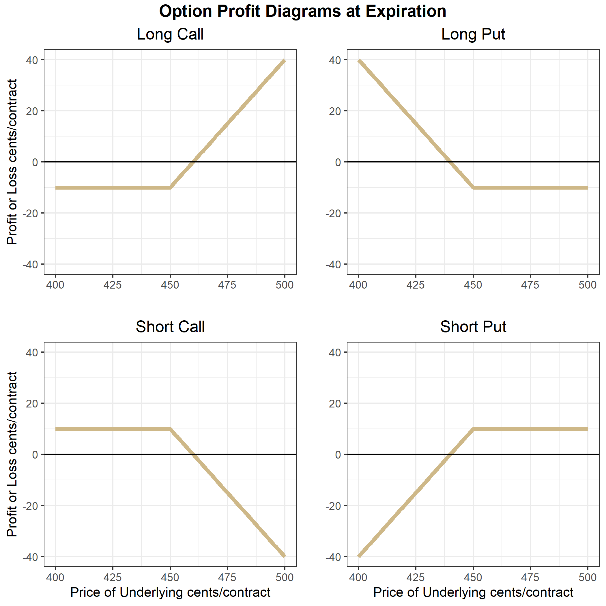
Option profit diagrams are often referred to as hockey stick diagrams for obvious reasons. Take a look at the long call figure. A long call position’s downside risk is limited to the price paid for the option. If the price of the underlying contract falls below 450 and stays there until expiration, then the option expires worthless and the long call holder’s profit is -10 cents * size of the contract. For example, if this were a call option on a corn futures contract whose size is 5,000 bushels then Profit = -10*5000 = 50,000 cents or $500. If the price of the underlying rises higher than 460, the position is in positive profit territory.
Similarly for the long put position. A put with strike price = 450 gives the holder the right to sell for 450. So if the price of the underlying expires above 450, the holder of the long put option position will have profit of -10*size of the contract. The long put option position has a breakeven point at 440 cents, and has positive profit if the price of the underlying falls below 440 cents at expiration.
The short call position is a mirror image of the long call position along the x axis. This position provides the holder with 10 cent profit at expiration if the price of the underlying is below 450 cents. The profit is declining from 450 to 460 cents, and begins losing money when the price of the underlying is above 460 cents at expiration.
Similarly for the short put position, with the short put position having 10 cents profit when the price is above 450 cents at expiration, and losing money when the price is below 440 cents at expiration.
The key observation being that long option positions have nearly unlimited upside potential, but require an upfront cost, while short option positions receive payment upfront in the form of the option premium in exchange for taking the downside risk.
5.4 Moneyness of an Option
Option contracts are often characterized by their moneyness. Moneyness simply refers to how near the price of the underlying is to the strike price. We say an option is deep out-of-the money if the price of the underlying is far below the strike of a call option and far above the strike of a put option (basically when the price of the underlying is in the flat part of the option profit diagrams). We say an option is deep in-the-money when the price of the underlying is far above the strike of the call option and far below the strike of the put option (when the price of the underlying falls in the sloped part of the option profit diagram). Finally, we say an option is at-the-money or near-the-money when the price of the underlying is near the kink of the option profit diagram.
Getting a feel for these definitions will help you develop intuition for options prices in the next chapter. In-the-money options should be expensive and out-of-the-money options should be cheap.
5.5 Option Prices (Premium)
Option prices (also called option premium) are determined by buyers and sellers in options markets, usually in electronic limit order books similar to other assets available to trade like stocks or futures contracts. It helps to think about option contracts like insurance policies. When you buy insurance for your car you pay a small amount at the beginning of the policy period in exchange for an agreement from your insurance company that they will pay damages in the (hopefully unlikely) event that you crash your car. You buy the insurance to protect yourself financially in the event you need to unexpectedly replace your car. Over your lifetime of car ownership you will probably pay more in car insurance than you collect in insurance claims. But for most of us, the comfort of not having to worry about a surprise $20K expenditure is worth it. The insurance company makes money year over year because they set premiums in such a way that they take in more premium than they pay out in claims. Insurance companies employ armies of actuaries and statisticians to calculate the probability you will crash our car and the actuarily fair rate (which is probability of a crash time what they have to pay you if you crash). Then the insurance company adds enough to cover business overhead and a profit margin, and that is how your car insurance rate is determined.
Option buyers are like you and options sellers are like the insurance company in the car insurance example. Except in the case of options premiums, market participants are continually assessing what each option contract’s premium should be. Given the current price of the underling asset, volatility levels in the market, time to expiration of the contract, and some other things, what is the probability the contract will expire in the money? What is a fair price for a position in the market with limited downside risk and unlimited upside potential? In the next chapter we will learn the basics of option pricing and the most famous (though imperfect) option pricing model, but we can use a concept called intrinsic value to get a sense of some properties option prices should have.
5.5.1 Intrinsic Value
If we take the profit diagrams for the long call and put positions above and just plot what the gain or loss in the underlying market would be if we exercised right now, they would look similar to the plots above, except not shifted down by the amount of the option premium. This plots the intrinsic value of the options, or how much the position would be in profit if it were exercised immediately.

The options should be worth at least as much as its intrinsic value. Otherwise and arbitrage opportunity would exist. You could buy the option, exercise immediately, and immediately offset your position in the underlying for a riskless profit. For this reason, option prices usually fall somewhat above the intrinsic value diagram, as a function of the price of the underlying along the x-axis. How far above is determined by several factors that we will learn about in the next chapter.
5.6 Margin Requirements
Since long option positions require premium to be paid upfront, the option buyer literally prepays the entire risk of the position. Therefore, no additional margin is required. Option sellers on the other hand, have large downside exposure so those positions require margin to be posted. The amount is determined by the exchange that offers the option contract for trading (with some brokers requiring even more than set by the exchange). The amount of margin required is set at the discretion of the exchange, but is greatly influenced by both recent and historical volatility of that particular market.
5.7 Size of the Underlying
Every option contract will specify how much of the underlying the contract is associated with. In the case of stock options, options most frequently are for 100 shares of the underlying. So if you buy 1 call option with a premium of $1.00 and a strike of $120 on company XYZ $2.00, for example, you have purchased the right to buy 100 shares of XYZ at a price of $120. Making the actual cost to buy the option \(100*1.00 = \$100\).
The size units for options on futures contracts are typically just for one futures contract, though. So if you buy a call option on soybean futures at the cmegroup.com it is the right to buy just one futures contract.
5.8 Reading Option Quotes
The figure below shows quotes for several options on the January 2021 soybeans futures contract that trades on the cmegroup.com exchange. The underlying contract information is in the top table. In the LAST column we see that last price the contract had traded for at the time I took a snapshot of these quotes. CHANGE shows the price change since the PRIOR SETTLE price, which is the settlement price from the previous day. HIGH price, LOW price, and VOLUME on the trading session are also provided.
Recall that soybeans are quoted to the eight of a cent, so the 1249’0 means \(1249 + \frac{0}{8} = 1249.00\) cents. While the PRIOR SETTLE price of 1243’6 means \(1243 + \frac{6}{8} = 1243.75\) cents.
Most providers of option contract quotes will organize the information in a similar way as shown below. Calls and Puts are shown in major columns, organized by ascending strike prices, which are usually displayed in the middle of the table for easy reference whether you are focused on Call or Put options.


Focus on the 1250 strike options that are highlighted in yellow. These options contracts are also quoted in eight of a cent increments, so the LAST price on the call option is 7’5, which means \(7 + \frac{5}{8} = 7.625\) cents. Therefore, the cost of the 1250 call option that expires in January is \(7.625*5000 = \$31.32\) since one soybean contract is for 5000 bushels. That seems pretty cheap, right. One thing to note is that the monthly options on soybean futures expire on the last Friday at least two business days before the last business day of the month prior to the contract month. If the Friday expiration would land on an exchange holiday the expiration will be the business day prior. All that means in the case of this option, it will expire on December 24th, 2020, just two days later than the day this table was created (notice the date updated column is for December 22, 2020). So, while it is right at the money, there is only two trading days left in the life of the option. What do you think happens the the value of any given option as it gets close to expiration? We will explore in detail in the next chapter.
Next, take a look at the LAST prices for the calls compared to the puts as you move down the table from 1200 strikes to the 1290 strike. In the case of the call options, the prices are increasing as you move down the table with the largest price option being the 1200 strike. Compare that to the put prices. The put prices are increasing as you look down the table from the 1200 strike to the 1290 strike. Take a second and think about why the 1200 call option is worth nearly 48 cents while the 1200 put option is worth less than half a cent.
The figure below show why: moneyness. The figure shows the call and put with 1200 cent strike and the option premium shown in the table above. That means that the flat part of the ‘hockey stick’ diagram is at -47.875 cents in the long call option figure and at -0.375 cents in the put option figure. The 1200 strike long call is deep in the money and has 49 cents worth of intrinsic value. The 1200 call option should be worth a bit more than 49 cents. But sometimes the last price is a stale price, or reflects a wide bid-ask spread in markets with inadequate liquidity. This is often the case for deep in-the-money and deep out-of-the-money options markets.
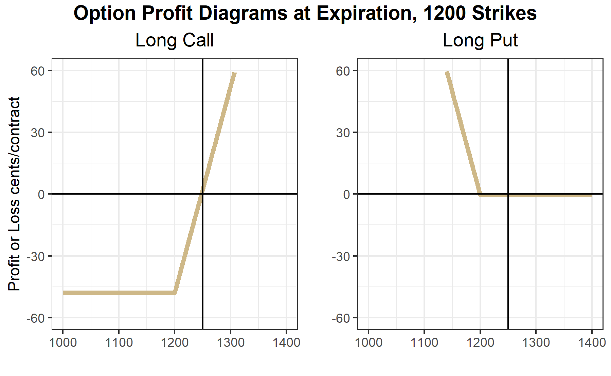
Notice the volume columns for both the calls and puts compared to the volume on the underlying. Some contracts that are near-the-money, which means the price of the underlying is pretty close to their strike price, have quite low volume traded. This is an example of an issue trading option markets. Since there are so many option contracts created by offering different strikes, liquidity gets spread thin. So if you are trading option contracts you have to make sure the contract will be liquid enough to get out of the position if you want to.
5.9 Closing an Option Position
There are two ways to close or ‘get out of’ an option position: take the opposite position or exercise (in the case of option longs) or get exercised upon (in the case of option shorts). Taking the opposite position is the same as exiting a position in any other familiar instrument like a stock or futures contract. If you are long, you simply sell the same option contract then you become ‘flat’ or have no position anymore. If you are short or have sold the option, you can simply buy the same contract and become flat.
5.9.1 Exercise and Assignment
The second way to exit the option position is to exercise (if you are long the option) or be exercised upon (if you are short the option). Note that you only have control over this case when you are long the option. If you are long the option and it is in-the-money you have the option to exercise at any time (in the case of American options which most options trading in the United States are American). Though you would only want to if the option is in the money. When you exercise, you receive the corresponding position in the underlying. For example, if you are long one call option on CME March corn futures that is in-the-money and you exercise it, you receive a long position of one contract in the March corn futures with your purchase price being the strike of the option. Likewise, if you are long a put option that is in-the-money and you exercise it you receive a short position in the underlying at the strike price of the option. Note that if you are long an option and you decide to exercise, you will trade a position with zero margin requirements to having to post margin for the futures position, because you will no longer have a position with no downside risk.
If you are short an option contract that is in-the-money you should be ready to be assigned (exercised upon) at any time. If a long party indicates to the exchange that they want to exercise and you are matched with them then you must provide them with the position in the underlying at the strike price. For example, suppose you are short a March Corn put with a strike of 450 cents. Price goes to 445 and you get assigned. That means you will have a long position in the March corn futures with a purchase price of 450. This is because as the option seller you have to be the other side of the person who exercised their right to sell at 450.
If markets were perfect with no liquidity cost, no one should ever exercise an option position early, since they could sell the option for at least as much as the intrinsic value of the option. But, markets are not perfect, and options in many markets can have wide bid-ask spreads meaning that you will have to buy at a higher price and sell at a lower price if you want to do the trade immediately. If the bid-ask spread is wide enough, it may be more beneficial just to exercise and then offset your position in the underlying.
5.9.2 Option Expiration
Options on futures usually expire a few weeks before the underlying futures contract expires. In most cases, the exchange will automatically exercise in-the-money options that are held to expiration.
6 Advanced Option Topics
Highlights
Black-Scholes and the Black 1976 option pricing models
Put-Call Parity and no arbitrage conditions
Implied volatility
Option Greeks
Check your Understanding
How can you create a synthetic put option?
How do time to maturity and volatility impact an option’s gamma?
In this chapter we will cover some more advanced concepts in options markets. First we will learn the Black-Scholes option pricing model. Then we will learn Put-Call Parity; we will discuss implied volatility; then we will learn “The Greeks,” or how option prices are impacted by different market variables. We will learn that the Black-Scholes model is not perfect and hear some of the most important criticisms of the model. Lastly, we will learn the concept of delta hedging and how options positions can be used as a hedging tool in the underlying market.
6.1 Black-Scholes Option Pricing Model
The Black-Scholes option pricing model provides the price of a European call and the price of a European put on a non-dividend paying stock. The options we generally are focused on in the context of this book, namely options on commodity futures on CME Group exchanges, are American options. Since American options have all the rights of a European option plus the right to exercise at any time, an American option cannot be less than the price of the otherwise identical European option. Nevertheless, this distinction is often small or zero, so the intuition we glean from the Black-Scholes model works for the American options we focus on in this book.
In this book we present the Black-Scholes option pricing model without proof. Since we only provide an introduction to the concepts of option markets a proof is beyond the scope of this book. However, there are many well explained and free resources on the internet. The original papers by Fischer Black, Myron Scholes and Robert Merton were published in 1973(Black and Scholes 1973; Merton 1973). The classic text by John Hull also provides a detailed explanation (Hull 2017).
The most basic form of the Black-Scholes model is for options on non-dividend paying stock. We will present this model, then we will show the slight modification required for options on futures contracts.
6.1.1 Assumptions
First, we need to establish the assumptions required in order for the Black-Scholes model to hold true. (“BlackScholes Model” 2020)
Assumptions About Assets
There exists a riskless asset that returns a constant risk free rate
The stock price exhibits instantaneous returns that are log normal. More formally, the stock price follows a geometric Brownian motion and volatility and drift are constant. Without writing out the mathematical equation for the geometric Brownian motion, the drift term defines how much the stock price appreciates on average.
Assumptions about the Market
There are no arbitrage opportunities
There are no restrictions on borrowing and lending at the risk free rate
Market participants can buy or sell unlimited quantities of the stock
There are no transactions costs
6.1.2 Notation
\(C\) = Call Option Price
\(P\) = Put Option Price
\(S\) = Current Stock Price
\(K\) = Strike Price
\(r\) = Risk free rate
\(\sigma\) = Standard deviation of the stock price returns
\(t\) = Time to maturity (in fraction of a year)
\(N\) = Standard normal cumulative distribution function
\(d_{1} = \frac{ln(\frac{S_{t}}{K}) + (r + \frac{\sigma^{2}}{2})t}{\sigma \sqrt{t}}\)
\(d_{2} = d_{1} - \sigma \sqrt{t}\)
The formula for a call option on a non-dividend paying stock with strike price \(K\) that has time to maturity \(t\) is:
\[C = S_{t}N(d_{1}) - K e^{-rt} N(d_{2})\]
The price of a similar put option is:
\[ P = N(-d_{2}) K e^{-rt} - N(-d_{1}) S_{t} \]
6.1.3 Option Pricing Formula for Futures Contracts
Black (1976) derives a version of the Black-Scholes model that is appropriate for pricing futures contracts. The key difference between the two option pricing models is that stock trading requires that the full value of the stock be spent upfront. Thus, the \(S_{t}\) in the Black-Scholes equations above is referencing expenditures at the current time, and do not need to be discounted. Futures contracts differ in that entering into a futures contract does not require expenditure upfront (besides posting margin). Therefore, the price of the underlying should be discounted, bringing the future value of the expenditure related to the futures contract to the present. The Black equations for pricing call and put options on commodity futures are therefore as follows:
\[ C = F_{t} e^{-rt} N(d_{1}) - K e^{-rt} N(d_{2}) \]
and
\[ P = N(-d_{2}) K e^{-rt} - N(-d_{1}) F_{t} e^{-rt} \]
6.2 Put-Call Parity
Put and call options of the same strike price and same expiration have to follow a specific relationship. That means that if you know the price of a call option, the price of the put option with the same strike and expiration is determined or there is an arbitrage opportunity.
To illustrate why this must be true consider the example below in the embedded Google Sheets file. The cells in gold are editable so that you can play around with the put-call parity result. The default values are shown in row 3, replace the default values if the values in gold do not match the defaults. If you would rather work with the full size Google sheet you can find it at Put-Call Parity Sheet.
Suppose that the price of the underlying is 470 cents, and a call option with strike price of 450 cents has a premium of 25 cents. In the table we consider underlying price ranges from 400 to 500 cents. Then we calculate the profit at expiration from the call option in the second column of the table. From 400 cents to 450 cents the profit would be -25 cents. Then as the price of the underlying increases from 450 to 500 cents the profit of the call option at expiration increases one for one. Clicking in B7 shows the formula for the call option profit at expiration to be =max(0-$B$2, A7-$C$2-$B2. In the plot the call option profit is the ‘hockey stick’ shaped line in black.
In the third column we have the profit from a short position in the underlying futures contract where the position was initiated at the current price of the underlying (470 cents). Clicking in C7 shows the formula for the profit of this position is =$D$2-A7. Being a short position, this position makes money as the price of the underlying falls. This position is shown by the straight black line that crosses the x-axis at 470 in the figure.
The fourth column shows what your profit at expiration would look like if you bought the call option and also sold the underlying futures for 470. Clicking on D7 shows that the formula for this payoff is simply =B7+C7, or the sum of the profit in each position. This profit function is shown in gold.
Notice that the gold line looks exactly like the profit at expiration of a put option with strike equal to 450 cents! This is called a synthetic put position. So, it must be that the put option premium in this example is 5 cents, otherwise you could buy the synthetic and sell the real put or vice versa and make a riskless profit. This relationship between the call and put price is called put-call parity.
Take a minute and play around with different values of call option premium. For example, try 50, 30, and 10. What is strange about premium = 10 cents?
As an aside, note that you can create a synthetic call option by buying a put option and buying the underlying.
6.3 Implied Volatility
Notice that of all the variables that go into the option pricing model, the only ones we don’t know beforehand are the option price and \(\sigma\) (the standard deviation of returns of the underlying). That means if we plug in all the numbers we know into the option pricing formula and then make a guess, or a good estimate of what \(\sigma\) should be the formula will give us an estimate of what the option should be worth as well.
In practice we usually do the opposite because we can observe the markets where these options are trading and know what prices the option is being bought and sold for at any moment the markets are open. If instead we take these prices that are actually trading in the market and use that in the formula, then we can solve for \(\sigma\) and we get a measure of the volatility ‘implied’ by the prices at which the option is currently trading for.
Implied volatility is an important measure because it tells you how much of a move traders expect the underlying could make. Implied volatility is normalized to units of % per annum so that you might see and implied volatility of 16% which means that option market participants think the underlying could move (in either direction) 16% per year(ganti?). The implied volatility is always changing though. In fact, that is one criticism of the Black-Scholes model. The model requires the underlying to have constant volatility, which is clearly not the case for any asset.
In the next sections we will explore how the different variables in the option pricing model affect option prices. We will see that implied volatility has a big impact. High implied volatility means high option prices all else equal.
6.4 Option Prices Compared to the Profit Diagram
In the Google Sheet embedded below we have plotted in gold the price of a call and put option with strike price of 450 cents along with the intrinsic value of the option plotted in black. Remember that the intrinsic value of the option is what the option is worth at expiration given the value of the underlying, not considering the premium paid. Therefore, if we take the profit diagrams we considered from the previous chapter and moved the flat part of the hockey stick diagram to the x-axis we get the intrinsic value of the option.
Notice a few things about the option price line. First of all, for every value of the underlying the call price is above the black line. That is because the price of an option prior to expiration must be worth at least as much as its intrinsic value, with a little bit extra to account for the uncertainty in price that could change the moneyness of the option before it expires.
Further, notice that the option differs from its intrinsic value most near the strike price; this is because the option price must smooth out the kink in the intrinsic value diagram.
6.5 Option Greeks
In this section we will learn the option ‘greeks.’ This, along with the second derivatives, will do more than anything to give you a better understanding of how option prices really work. As you read this section keep looking back to the embedded plot of option prices in section @ref(option-prices-compared-to-the-profit-diagram)
Delta
The delta of a call option is \(\Delta = \frac{\partial C}{\partial F}\) , and the delta of a put option is \(\Delta = \frac{\partial P}{\partial F}\), or how much the value of a call option changes as the underlying changes. Literally, this is the slope of the line representing the option price. The main thing is to notice that as the price of the underlying moves larger the call option is more in the money, and the delta of the call option approaches +1. As the price of the underlying moves larger the put option moves more out of the money and the delta of the put option approaches 0. As the price of the underlying moves lower, the delta of the call option approaches 0 and the delta of the put option approaches -1. Also, notice that at the money, the delta of the call option is +0.5 and the delta of the at the money put option is -0.5.
Gamma
The gamma of a call option is \(\gamma = \frac{\partial^2 C}{\partial F^2}\) and the gamma of a put option is \(\gamma = \frac{\partial^2 P}{\partial F^2}\), that is it tells you the curvature of the option price with respect to the underlying. Which is to say, how much additional \(\Delta\) do you get as the underlying price increases. Looking above at the price of the call option, notice that at an underlying price of 425 the option line is pretty flat (low delta), while at an underlying price of 475 the option line is pretty steep and nearly equal to the slope of the black line which is 1. The curvature in the line that is required to get from a flat slope to a steep slope is the \(\gamma\) of the option.
An option’s \(\gamma\) is the friend of speculators who use options. Large \(\gamma\) allows a trader to buy a cheap out of the money option on an underlying they know will move up or down. If they are right their position enjoys convex gains. The higher the \(\gamma\) the better it is for the directional speculator using long option positions. However, we will see that \(\gamma\) is counter-balanced by the next greeks we will learn.
Theta
Option’s lose value as expiration nears due to reduced uncertainty related to where the price of the underlying will be relative to the strike. This ‘time decay’ is made explicit by the theta of the option. Theta of a call option is \(\theta = \frac{\partial C}{\partial t}\) and the theta of a put option is \(\theta = \frac{\partial P}{\partial t}\). Theta is how option sellers make money and theta is the enemy of long option holders. Theta is usually quoted in terms of how much the option will lose value per day, all other things equal. Go back to the embedded Google Sheet in @ref(option-prices-compared-to-the-profit-diagram). Play around with the time value in the option premium by putting in some larger and smaller values for time to maturity. Remember, the units of time to maturity is fraction of a year. So if you put in 0.5 that is the same as six months, and 0.02 is about one week.
For reference, focus on the at-the-money call and put options with strike of 450. With time to maturity = 0.5, the call option is worth 19.89 cents (or 4.4% of the value of the underlying contract) while the put option is worth 28.89 cents (6.4% of the value of the underlying contract). With time to maturity = 0.02, the call option is worth 4.06 cents (0.90% of the value of the underlying contract) and the put option is worth 4.42 cents (0.98% of the value of the underlying contract).
Another thing to notice is how the pace of theta decay accelerates as time to maturity approaches. Try setting the time to maturity cell (E2) to =180/365 then to =173/365 and notice how much the gold lines of the option prices shift down. Compare that to how much the gold lines shift down when you do =10/365 and =3/365. In both cases one week passed between the first and second time calculated, but the option lost a lot more value both nominally and in percentage terms in the second case.
Vega
Vega measures sensitivity of the option value to changes in the volatility. In other words, Vega \(= \frac{\partial C}{\partial \sigma}\) in the case of call options and Vega = \(= \frac{\partial P}{\partial \sigma}\) in the case of put options. An increase in volatility will cause an increase in options prices, all other things equal. Play with different values in @ref(option-prices-compared-to-the-profit-diagram) try volatility as low as 10 and as high as 100. Also, see what impact changes in volatility has for different time to maturity values.
Other Greeks
There are other greeks (including Rho, Vanna, Vomma, and more) that become important if you are involved in managing a large book of options positions, but we will not cover them in detail. The Greeks Wikipedia page is a good place to start if you are interested.
How other Volatility and Time-to-Maturity Impacts Gamma
For a couple of the greeks we mentioned how they interact with each other, or react to different times to maturity. Here I just want to point out a bit more about this mechanics. I mentioned that \(\gamma\) is the friend of the option buyer and it is the foe of the option seller because of the convex shape of the return profile you get with large gamma.
So what makes \(\gamma\) large? Biggest things giving large \(\gamma\) would be short time to maturity and low volatility. However, both of these have drawbacks for the option buyer. When time to maturity is short, \(\theta\) decay is fast, which works against the option buyer. Regarding volatility, sure low volatility produces large gamma, but option buyers get the most benefit from gamma by buying slightly out of the money options prior to a significant move in their favor. Thus, periods of low volatility make a significant move less likely.
So even though the option buyer can create countless profit scenarios over many price ranges, at the end of the day, profitable option buying for speculation requires anticipating a significant price move to pay off.
6.6 Criticisms of the Black-Scholes Pricing Model
6.7 Delta Hedging
6.8 Example 1: Delta Hedge Your Overnight Exposure
6.9 Example 2: Delta Hedge Your Weekend Exposure
6.9.1 Why is delta-hedging not fool-proof?
7 Option Spread Strategies
7.1 Bull Call Spread
7.2 Bull Put Spread
7.3 Bear Call Spread
7.4 Bear Put Spread
7.5 Straddle
7.6 Strangle
7.7 Iron Condor Spread
7.8 Butterfly Spread
8 Hedging with Options
8.1 Hedging a Speculative Outright Futures Position
8.2 Farmer Hedging Price Risk on Production with a Put Option
8.3 Farmer Hedging by Putting on a Fence
8.4 Comparing Crop Insurance to a Put Option
9 Prices Over Space and Time
Highlights
- Learn the costs of storage for farmers.
- Learn how the forward curve in the futures market provides incentive to store that can be ‘locked in.’
- Learn how to calculate financial full carry and spread as a percent of full carry.
- Learn how to interpret the percent of full carry as a measure of incentive to store.
- Learn what drives variation in the basis.
Check Your Understanding
- Can you calculate the percent of full carry yourself, given only futures prices and financing costs?
In this section we cover how commodity prices behave over time and space. We have discussed frequently that commodity futures contracts have an expiration, that there are always several contracts trading at any given time with maturities that are increasingly farther into the future, and that these contracts will eventually expire and no longer be traded.
The contract that is next to expire is called the Nearby contract, the contract that expires next is called the First Deferred contract, the contract that expires after that is the Second Deferred contract. The different contracts trading at any given time make up make up what is called The Forward Curve, etc. There is valuable information in the forward curve because it is the market’s best guess of what returns to storage will be.
We saw in Chapter 4 how a farmer can use the December futures contract to hedge the sale of their harvest. Similarly, the March (of the next year) contract is the next to expire after the December contract. If the market price of the March contract is high enough, some farmers (and other commercial stockholders1) will decide to store until late February and hedge their cash sale with the March futures contract. This is costly so the price increase from waiting until March must be high enough to cover these costs or the farmer will just sell everything at harvest.
9.1 Storage Costs to the Farmer
Storage costs include the following:2
- Opportunity cost of money. If they sell at harvest they can use the money for other things; so waiting to sell involves an opportunity cost of money.
- Interest. By deferring the sale of grain, the stockholder may need a bank loan to cover expenses since their main revenue stream is deferred.
- Storage fees. Some farmers or stockholders have their own storage space, but many will need to rent storage space (from an elevator like the one depicted in Royal, IL in chapter 4).
- Drying costs. Grain that is just harvested can be around 15% moisture, but must be dried down to closer to 13.5% moisture to safely store for long periods. This involves running a grain dryer that uses fuel and/or electricity.
- Shrinkage. When grain is dried, it actually shrinks leaving less bushels to sell after storage. The shrink factor can be 1.25 to 1.4 percent.
- Quality deterioration. If the grain is not stored under proper condition, quality can deteriorate, and result in dockage (a price discount) being applied by the buyer at the time of sale.
- Cost of handling. Getting the grain into and out of storage results in some costs as well.
Iowa State University Extension estimated in 2015 that storing grain until March costs a farmer roughly $0.45 per bushel, while storing until December cost roughly $0.30 per bushel, $.15 cents per bushel less than storing until March. Considering only this, the price of the March contract would need to be more than $0.15 per bushel higher than the December contract to cause much grain to be stored until March.3
9.2 An Increasing Forward Curve
Figure 1

The reason that the forward curve represents return to storage is that it shows how much extra money can be made by storing to a later date, rather than selling in the cash ‘spot’ market today. December corn is worth 330 cents per bushel and March corn is worth 340 cents per bushel, then you can make an extra 10 cents per bushel by selling the March futures and selling into the cash market later.
When stocks are plentiful the market offers a premium to those who are willing to keep grain off the market for awhile. This prevents prices from plunging too much right after a big harvest, since many choose to wait for better prices later in the marketing year. Also, since these price relationships are ‘discovered’ and change every day, if it turns out grain is coming onto the market too fast or too slowly, the shape of the forward curve changes to alter the incentives so that supply and demand can remain in equilibrium throughout the whole marketing year even though we only harvest once per year (in North America).
This kind of market environment is sometimes called a carry market or contango market, or sometimes it is said that the market is in full carry. This means that the market is offering returns to storage that covers the cost to rent warehouse space, insure, and finance storing grain in until a later date. The year of 2016 was certainly a full carry market. Record production and a high forecast of ending stocks make this the classic market environment where returns to storage would be positive.
As another example, the forward curve is shown for 2015 in figure 2.

This example illustrates a phenomenon that often occurs. Here we saw that the forward curve is upward sloped until September. Then it flattens and returns to storage go away. This makes sense because in September we begin to see some of the next year’s crop come onto the market. So in 2015, the market was basically asking farmers to keep storing through July, but no longer. Anyone planning to hold grain from July to September and beyond could expect to lose as much as 4 cents per month.
9.3 A Decreasing Forward Curve
Next we will consider a year that was characterized by a decreasing forward curve. You will recall that 2012 was a significant drought year that resulted in poor yields, high prices, and low forecasted ending stocks for the marketing year. In this kind of market environment, where supplies are tight, the forward curve tends to be downward sloped. The implication of this is that anyone who decides to hold grain will lose money because it is worth more today than it is tomorrow. The market is incentivising everyone to bring grain onto the market.
We will look at the forward curve and return to storage in steps for 2012. On 4-13-2-12 the forward curve are as shown in figure 3. This is in the spring, before the drought has happened.

In this case, supplies were already tight going into 2012. The forward curve is downward sloped, sometimes called inverted or backwardated market. So returns to storage are negative, as shown in Figure 6 through the summer of 2012, even before we had the drought realized. However, it is apparent from the forward curve that as of 4-13-2012, the market ‘thought’ that the 2012 harvest would be good, because price levels drop substantially in the September and December contract, and the return to storage between December 2012 and March 2013 is positive on 4-13-2012.
Next, lets look at the forward curve on 8-01-2012. By August 1, it is clear that we are in the midst of a major drought, yields will be low, and ending stocks for the coming marketing year will be low as well.
Now, the forward curve is downward sloped for the entire marketing year until the next harvest, in 2013, is expected. On 4-13-2012, the market was offering about 5 cents per month to store from December 2012 to March 2013, by 8-01-2012, the market was offering -1 cent for storage during the same time period.

Now, just to illustrate how the forward curve changed between August and December 2012, the time in which harvest occurred and we learned exactly how bad yields turned out to be, we show the forward curve on 12-03-2012 in figure 5.
9.4 Forward Curve Cases with Hypothetical Data
When prices move up or down, the front end of the forward curve generally is more responsive than the back end of the forward curve. We will illustrate this with both increasing prices and decreasing prices. The examples below show the first five contracts on the forward curve plotted on four consecutive days of price changes in one direction. The price data in these examples are hypothetical, but represent what usually happens to the forward curve when prices increase or decrease.
Prices Increasing

Figure 6. Forward Curve with Prices Increasing, Contango to backwardation
On day 1, the market is clearly in contango, as the forward curve is upward sloped. As time moves from day 1 through day 4 prices are rising each day, with the front end of the forward curve exhibiting the largest changes each day. On day 4, prices have risen enough that the market is now in backwardation with the front month higher than the first deferred.
Prices Decreasing
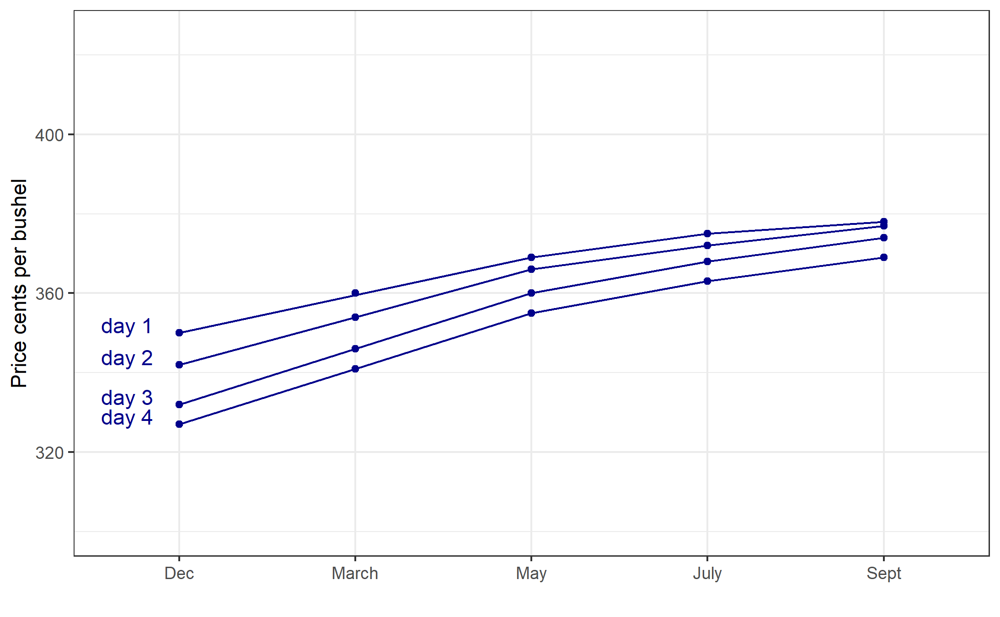
Figure 7. Forward Curve with Prices Decreasing
On day 1 the market is in contango in this example as well. As time progresses from day 1 to day 4, prices are falling. From day 1 to day 3 the forward curve is getting steeper because price declines in Dec are larger than the price declines in March. In turn, the price declines in March are larger than the price declines in May, and do on. This indicates that from day 1 to day 3, the market is not yet at full carry; as prices are declining, the returns to storage keep increasing (reflected by the steeper forward curve). From day 3 to day 4, however, we can see that the market is at full carry because the price decline is constant all the way up the forward curve. Even though prices continue to fall, the market is already offering enough incentive to store to cover storage costs, so the price differences between contracts cannot widen any further.
Some Caveats
The effect of price changes on the shape of the forward curve as described above is typically observed. However, there is nothing requiring the market to react exactly this way, and there can be fundamental changes in the market (perhaps a major demander of the commodity reduces or increases consumption during a specific time of the year) that affect parts of the forward curve more than others. This could cause a larger price change in the middle or back end of the forward curve. Usually though, the front end of the forward curve will be more volatile than the back end of the forward curve as depicted in figures 6 and 7.
9.5 Financial Full Carry
We discussed at the beginning of this chapter that one of the costs of storage to the farmer is the opportunity cost of money resulting from deferring a sale, and how this makes it impossible to predict with certainty any individual farmer’s decision to store. However, there is a concept called financial full carry that simply includes interest costs and the premium charges on shipping certificates that we discussed in Chapter 4.
\[Financial \text{ } Full \text{ } Carry = ndays(\frac{i}{360}*F + P)\]
where \(ndays =\) the number of days between the first delivery day in the nearby contract and the first delivery day in the deferred contract. \(i =\) the three month LIBOR interest rate + 200 basis points,4 \(F =\) futures price, and \(P =\) the current premium charge on shipping certificates. For example, there are 90 days between delivery period of the December contract and the delivery period of the March contract. If the LIBOR rate is .3% and financing costs are 200 basis points above LIBOR, the corn futures price is $3.50 per bushel, and the premium charge on shipping certificates is 0.165 cents per bushel per day, then financial full carry is:
\[Financial \text{ } Full \text{ } Carry = 90*(0.023/360*350 + 0.165 = 16.86 \text{ cents per bushel}) \]
Then financial full carry between the December contract and the March contract would be 16.86 cents. It is called financial full carry because in theory, the spread between the December and March contracts cannot be wider than this amount. If it were wider, say 30 cents, then a storage arbitrage would be possible. You could buy a December futures contract and sell a March futures contract, take delivery of December contract, receive the shipping certificate and hold it until March 1st at a cost to you of 16.86 cents per bushel. Then use the shipping certificate to deliver on your short March futures position. Your futures trades just earned 30 cents, while holding the shipping certificate only cost 16.86 cents, leaving you with a profit of 13.14 cents per bushel.
Of course, the concept of financial full carry is really just a benchmark. Most importantly, any individual’s ability to capitalize on the arbitrage in this example is predicated at the ability to borrow for 200 basis points over LIBOR. It is useful as a metric for how much of a carry market we are in. Percent of full financial carry is a metric that is widely followed (\(\text{Percent of Full Carry } = 100*\frac{Futures \text{ } Calendar \text{ } Spread}{Full \text{ } Financial\text{ } Carry}\)), because it gives similar information as the shape of the forward curve in an easier metric to compare across time. In our example, percent of full carry \(=100*30/16.86 = 177.94\%\) (remember this was an extreme example to illustrate the potential for arbitrage).
9.6 Calendar Spreads
The prior discussion has viewed the forward curve and returns to storage from the perspective of a farmer or other who holds physical stocks of grain. Speculators watch the price spread between futures contracts and trade them to bet on whether or not returns to storage will increase or decrease. These kinds of spreads are called Calendar Spreads and they are done by performing the following type of trade.
Following the same logic about expected scarcity of stocks, returns to storage, and incentives for the market to bring stocks to the market, if the price goes up, the nearby contract and front end of the forward curve react the most strongly, deferred contracts will also go up, but by a lesser amount. Likewise, if the price goes down, the nearby contract will change the most; the deferred contract will also go down, but less so.
So, a speculator places the following trades if they are bullish (bearish):
9.6.1 Bullish - think prices are going up
Buy Nearby: Dec 2017, Sell Deferred: March 2018
Then you are betting that prices in general will go up, but the nearby will go up more than the deferred contracts. Any information event that suggests supplies will become tighter should make prices go up in general, and should reduce the incentive to store. Thus, making this a profitable calendar spread trade.
9.6.2 Bearish - think prices are going down
Sell Nearby: Dec 2017, Buy Deferred: March 2018
The opposite logic is at work here. You are betting that prices will go down in general, but that the nearby will go down more than the deferred contracts. Any information that suggests supplies will become more plentiful should make prices go down in general, and should increase incentives to store. Thus making the bearish calendar spread profitable.
To see today’s forward curves in Corn and Soybeans visit here.
9.7 Price Variation Over Space
Most of our time in this course has focused on what impacts futures prices for commodities. However, a futures price represent the expected future price of the commodity in a very specific location - the locations that are ‘regular’ for delivery. A location that is regular for delivery is a location that is designated by the commodity exchange where stocks of a commodity represented by a futures contract may be delivered in fulfillment of the contract. This is where the spot, or cash, price must come together, or converge, with the futures price.

Figure 11. Delivery Locations for Corn and Soybeans are Mostly Along the Illinois River Between Chicago and Peoria, IL
(Source Google Maps)

Figure 12. Delvery Location at Burns Harbor, IN
(Source Google Maps)
Since the price of the futures contract is represents the expected future price only at these locations (technically whichever is cheapest to deliver) then the degree to which the futures price is indicative of the expected future spot price at locations far from Northern Illinois can vary.
Throughout the rural U.S., grain elevators, ethanol plants, soybean crushers, feed yards and biodeisel manufacturers dot the landscape every few miles. These entities buy essentially all of the grain and oilseed crop that is not used on-farm for livestock feeding. They post bids to buy every day they are open. They offer to buy as a cash sale, or on forward contract for delivery one to three months ahead. In the case of the forward contract, the farmer will go in to the elevator and sign a contract to deliver a specific number of bushels within a specified window of time. Usually, the prices quoted by grain elevators and other prices is relative to the futures contract price, or basis.
In figure 13 the elevators around Champiagn, IL are shown.

Figure 13. Elevators Around Champaign, IL
Depending on how far the location is from the Illinois river, this difference may be large, but still the futures price is the reference point. The basis is often quoted as ‘over’ or ‘under’ the futures price. For example, an elevator might post bids to buy for \(-27\) cents. This means \(27\) cents under the futures price. A bid of \(31\) would be read as \(31\) cents over the futures price.
9.8 Definition of Basis
Basis is always defined as Spot Price minus Futures price.
\[Basis = Spot - Futures\]
Basis reflects the price differential over space relative to the futures price. Basis is influenced by
- Transportation Costs
- Local Supply and Demand Conditions
- Interest and Storage Charges (this reflects that there is also a small time component as well as spatial)
- Other Handling, Shipping and other Costs
Transportation costs are built into basis because large users of grain are not necessarily located in large production region. E.g., cattle feed yards in Western Kansas and Nebraska; Chickens in the South; and Hogs in North Carolina. Grain is shipped by rail and/or truck to locations across the country. Areas of grain surplus generally have a negative basis, the spot price is less than the futures. Areas of grain deficit generally have a positive basis, the spot price is greater than the futures.
Local supply and demand conditions are also important. Occasionally, there will be localized production problems. The biggest recent example comes from the demand side, however. The expansion in ethanol production in the U.S. was felt greatest in Iowa. As literally billions of gallons of capacity in ethanol production came online in Iowa, the corn basis was affected. With additional large consumers of corn located throughout Iowa, there was more localized demand for corn. The ethanol plants and grain elevators had increased localized competition, and local basis bids started to rise between 2005 and 2010.
9.9 Terminology
Farmers and grain handlers alike watch the basis closely, so discussion of changes in the basis is common. When the basis is increasing, in most cases that means becoming ‘less negative,’ we say the basis is stregthening. When the basis is decreasing, or becoming ‘more negative,’ we say the basis is weakening.
10 Balance Sheet Analysis
Highlights
- Balance sheet analysis is the most important tool for fundamentals-based price forecasting.
- This chapter covers the format all balance sheets take, and introduces the USDA WASDE balance sheet.
- This chapter shows what affects each row of the balance sheet.
- This chapter provides a timeline of when the rows of a balance sheet can be updated.
Check Your Understanding
- Do you know which cells in the balance sheet must be estimated by the USDA and which can be calculated from other cells in the table?
Fundamental analysis is an assessment of price based on underlying supply and demand factors. Focusing on changes in the relationship between supply and demand allows one to calibrate an informed opinion of the value of the commodity. The main role of the market is to find the value at which supply equals demand - or in other words, the value that ‘clears the market.’ The estimated ‘fundamental value’ is simply a forecast, or expectation of, the market clearing price. The goal of any forecasting exercise is to compare the forecast (estimated fundamental value) to the current market price and make decisions accordingly.
If your forecast is above the current market price, that is bullish because your forecast implies the market is undervaluing the commodity - an opportunity to buy low and sell high! If your forecast is below the current market price, that is bearish because your forecast implies the market is overvaluing the commodity - an opportunity to sell high and buy low! This, of course, only works if your forecast is correct, that is, the market eventually agrees and moves into line with your forecast.
10.1 Supply and Demand
Conducting fundamental analyses involves taking into account all the factors that determine supply, demand, and ultimately, prices. For grain markets there are basically two supply models to keep in mind: preplanting and post planting. Below we display both.

Figure 1. Supply and Demand Model of a Commodity Before and After Planting
The intuition here is simply that before planting, the final supply for the crop can be affected by farmers changing their intentions about how many acres to plant. Once the crop has been planted, supply is essentially fixed, except for the uncertainty that remains due to realized yields. To summarize, things that affect the supply of a commodity are outlined below.
Supply is Affected by:
- Acreage
- Prices of crops competing for acreage
- Pre-Plant Weather
- Yield
- Post-Plant Weather
- Government Policies
- Acreage
Before planting, farmers plan how much acreage to devote to each commodity, thus determining the baseline expected production level. Before summer weather is revealed, expected production is simply
Acreage X Trend Yield. In the Corn Belt, where planting decisions amount to deciding how to divide acres between corn and soybeans, their relative prices play a large role in the farmer’s decision. If futures prices indicate planting soybeans will be more profitable than planting corn, farmers will plan to devote more acres than usual to soybeans, for example. Weather can be an important determinant of acreage decisions as well. The most ardent planting intentions of a farmer can be derailed by persistent wet weather. An unusually rainy planting season can reduce planted acres from intentions. Before the crop is actually in the ground, the supply of grain is relatively elastic.- Yield
After the crop is planted supply is quite inelastic, but there is still considerable uncertainty related to how much the crop will yield; this is largely determined by weather during the growing season.
- Government Policies
The government has been heavily involved in Agriculture in the United States since the great depression of the 1930’s. There have been programs that guarantee a minimum price, programs that guarantee minimum revenue, and various incarnations of crop insurance programs. Occasionally these favor the production of one type of crop over another. When this happens, farmers predictably respond by planting more of the crop treated more favorably by the program.
Demand is Affected by:
- Consumer Income
- Exchange Rates
- Consumer Income
This one is straight from economics 101. When people have more money, they will spend it on goods. This means increased demand for commodities and their derived products. This includes foreign income, since exports are a big component of demand for commodities in the United States. Rising incomes usually means rising consumption of meat, which increases the demand for commodities like corn, soybeans, and even wheat that are used as animal feed.
- Exchange Rates
Exchange rates also affect demand through their influence on exports. For example, if the U.S. dollar is weak, then consumers in other countries can buy dollars cheaply - giving them more purchasing power for goods denominated in dollars.
10.2 Balance Sheet
Most fundamental analyses rely on maintaining balance sheets of a commodity for a country, region, or the world. The approach is to maintain a careful accounting of how much supply exists and how much of the commodity has been used. Then through various means we will explore later, one arrives at a price that is expected to ration remaining supplies across competing uses.
10.2.1 The Marketing Year and Balance Sheet Forecasting Schedule
Balance sheet analysis is often organized by marketing year. Since production happens once per year, the marketing year is defined to begin in the first month the commodity is harvested and ends with the following year’s harvest. The table below makes note the month on which marketing years begin for several crops.
| Crop | Beginning of Marketing Year - First Month of Harvest |
|---|---|
| Corn | September |
| Soybeans | September |
| Spring Wheat (Chicago) | August |
| Winter Wheat (KC) | July |
Forecasting supply and demand for any given marketing year begins well before harvest - nearly a year in advance, in fact. Table 2 below follows the typical forecasting schedule with the 2017/2018 marketing year. Note that is for the marketing year that begins with harvest in September of 2016.
| Timeline | Forecasting Focus |
|---|---|
| Fall 2016 | The first forecasts of supply and use based on , trend forecasts, recent history, economic relationships |
| Spring 2017 | Update supply forecasts based on USDA acreage surveys. |
| Summer 2017 | Update supply forecasts based on weather and USDA crop and stocks reports |
| Fall 2017 | Update supply forecasts as yield uncertainty is resolved through harvest reports and USDA production reports |
| - Summer 2018 | Continue to update supply forecasts based on USDA production revisions, southern hemisphere production, stocks, and use reports. |
10.2.2 Southern Hemisphere Production
Production of corn, soybeans, and other commodities in the southern hemisphere (most notably in Brazil and Argentina) has grown rapidly over the last ten to fifteen years, and has impacted global commodity markets tremendously. Since southern hemisphere production occurs in the middle of marketing years organized by northern hemisphere harvest, there is an uncertain additional supply that must be forecast and updated to keep an accurate global balance sheet.
10.2.3 Uncertainty
Even careful accounting of supply and demand factors that make up the balance sheet leaves a tremendous amount of uncertainty in the market. Demand can be difficult to forecast, and can sometimes change dramatically. The USDA keeps careful track of stocks, but we only get stocks estimates once a quarter. Between Grain Stocks reports there is always a great deal of speculation as to the pace of consumption and whether we are eating into stocks at a faster or slower pace than expected. Analysts talk about whether the market is on pace to achieve the forecast level of ethanol crush, soybean crush, or exports. Surprises in any of these components can lead to rapid corrections in the commodity markets.
10.2.4 Balance Sheet Format
Here we discuss the common format balance sheets for any commodity have in common. Then we talk about the components of specific balance sheets for corn and soybeans.
| Stocks and Use | |
|---|---|
| Beginning Stocks | |
| + Production | |
| + Imports | |
| = Total Supply | |
| Domestic Consumption | |
| + Exports | |
| + Residual | |
| = Total Consumption (Use) | |
| Ending Stocks = Total Supply - Total Consumption |
Since the USDA makes regular reports on the balance sheet for commodities (the WASDE reports described in Chapter 2), most conducing private analyses with balance sheets use the USDA categories so that the USDA estimates can be taken as a benchmark. The supply side (Stocks) is relatively straightforward. Total stocks for the marketing year will be beginning stocks, the portion of last year’s stocks that were not used up during the previous marketing year, plus this year’s production, plus any imports of the commodity. Summing these three reveals the total amount of the commodity available for use during the marketing year.
- Beginning Stocks: Some production from the previous year usually remains into the next crop season. Carryover stocks function as a buffer against current year yield uncertainty. For example, if carryover stocks are high and current year yield is expected to be below trend, the market price may fall in response but modestly. However, if carryover stocks are low - resulting from several years of below trend production and strong demand - then an expected yield below trend will likely cause a volatile rise in prices.
: Table 4. Recent USDA WASDE Balance Sheet for Corn
## Response [https://www.usda.gov/oce/commodity/wasde/wasde0221.xls]
## Date: 2021-03-23 18:48
## Status: 200
## Content-Type: application/vnd.ms-excel
## Size: 326 kB
## <ON DISK> C:\Users\mindy\AppData\Local\Temp\Rtmp8syVW4\file60011d67e2f.xls| CORN | 2018/19 | 2019/20 Est. | 2020/21 Proj. Prev | 2020/21 Proj. |
|---|---|---|---|---|
| Million Acres | ||||
| Area Planted | 88.90 | 89.70 | 90.8 | 90.8 |
| Area Harvested | 81.30 | 81.30 | 82.5 | 82.5 |
| Bushels | ||||
| Yield per Harvested Acre | 176.40 | 167.50 | 172.0 | 172.0 |
| Million Bushels | ||||
| Beginning Stocks | 2140.00 | 2221.00 | 1919.0 | 1919.0 |
| Production | 14340.00 | 13620.00 | 14182.0 | 14182.0 |
| Imports | 28.00 | 42.00 | 25.0 | 25.0 |
| Supply, Total | 16509.00 | 15883.00 | 16127.0 | 16127.0 |
| Feed and Residual | 5429.00 | 5903.00 | 5650.0 | 5650.0 |
| Food, Seed & Industrial 2/ | 6793.00 | 6282.00 | 6375.0 | 6375.0 |
| Ethanol & by-products 3/ | 5378.00 | 4852.00 | 4950.0 | 4950.0 |
| Domestic, Total | 12222.00 | 12185.00 | 12025.0 | 12025.0 |
| Exports | 2066.00 | 1778.00 | 2550.0 | 2600.0 |
| Use, Total | 14288.00 | 13963.00 | 14575.0 | 14625.0 |
| Ending Stocks | 2221.00 | 1919.00 | 1552.0 | 1502.0 |
| Avg. Farm Price ($/bu) 4/ | 3.61 | 3.56 | 4.2 | 4.3 |
(source: February 2021 USDA WASDE Report)
The balance sheet for corn follows the same generic patter, but we can be a bit more specific with the use categories since we know what the major use categories are for any given commodity. The use components are as follows:
- Feed and Residual: A large portion of the corn crop is used as feed for livestock (cattle, pigs, poultry).
- Food, Seed, and Industrial: Corn is used to make tortilla chips, high fructose corn syrup, edible oil and other food items. A portion of the crop is grown specifically as seed for the next years crop. There are some industrial uses for components of processed corn. Those are grouped in this category as well.
- Ethanol production also demands a significant amount of corn, so much that it gets its own line in the balance sheet. Note, however, that it is technically part of the Food, Seed, and Industrial category.
- The final use category is export. Corn grown in the United States is consumed around the globe, and strength or weakness in the export market is a carefully component of demand.
: Table 5. Recent USDA WASDE Balance Sheet for Soybeans
| SOYBEANS | 2018/19 | 2019/20 Est. | 2020/21 Proj. Prev | 2020/21 Proj. |
|---|---|---|---|---|
| Million Acres | ||||
| Area Planted | 89.20 | 76.10 | 83.10 | 83.10 |
| Area Harvested | 87.60 | 74.90 | 82.30 | 82.30 |
| Bushels | ||||
| Yield per Harvested Acre | 50.60 | 47.40 | 50.20 | 50.20 |
| Million Bushels | ||||
| Beginning Stocks | 438.00 | 909.00 | 525.00 | 525.00 |
| Production | 4428.00 | 3552.00 | 4135.00 | 4135.00 |
| Imports | 14.00 | 15.00 | 35.00 | 35.00 |
| Supply, Total | 4880.00 | 4476.00 | 4695.00 | 4695.00 |
| Crushings | 2092.00 | 2165.00 | 2200.00 | 2200.00 |
| Exports | 1752.00 | 1682.00 | 2230.00 | 2250.00 |
| Seed | 88.00 | 96.00 | 103.00 | 103.00 |
| Residual | 39.00 | 9.00 | 22.00 | 22.00 |
| Use, Total | 3971.00 | 3952.00 | 4555.00 | 4575.00 |
| Ending Stocks | 909.00 | 525.00 | 140.00 | 120.00 |
| Avg. Farm Price ($/bu) 2/ | 8.48 | 8.57 | 11.15 | 11.15 |
| Total |
(source: February 2021 USDA WASDE Report)
For soybeans, stocks are comprised of beginning stocks, production, and imports, just as they were for the general balance sheet and the corn balance sheet. The use side, contains items specific to soybeans:
- Crush: The amount of raw soybeans that are processed into soybean oil and soybean meal. Soybean oil is used predominately as edible oil; it also is used to make bio-diesel in modest quantities.
- Food, Seed, and Industrial: We saw this category in the corn balance sheet. The definition remains the same.
- Exports: The United States exports a large quantity of soybeans to global buyers.
10.3 Coming up with a Price
Balance sheet forecasting is definitely as much art as it is science. It involves keeping track of the rate of use of commodities to see how much a need there will be to ration late in the marketing year while waiting on harvest and new supplies. One should intuitively see that the forecasted ending stocks is a measure of scarcity of the commodity and therefore should be negatively related to price (i.e., tight ending stocks go along with high prices). One needs to pin down the exact nature of this relationship in order to form a meaningful forecast of price from a commodity balance sheet. We will discuss this process in more detail in a later chapter.
10.4 Readings
- Balance Sheet Projections for the 2015-16 Corn Marketing Year
This farmdoc daily article was written in February of 2015. This is well before spring planting of corn and soybeans in the United States. However, farmers during this time are actively planning for planting season - prepping equipment, fertilizing and preparing ground, and buying seed. Good lays out the groundwork for early forecasts of the 2015/2016 marketing year balance sheet. This article is published two days before the February 2015 WASDE report, and Good provides context upon which market expectations for the WASDE report can be based upon.
Good, D. “Balance Sheet Projections for the 2015-16 Corn Marketing Year.” farmdoc daily (5):23, Department of Agricultural and Consumer Economics, University of Illinois at Urbana-Champaign, February 9, 2015.
- Projecting the 2015-16 Corn Balance Sheet and Price Implications
In this reading Good and Irwin break down the USDA’s April 9th WASDE report and offer their own projections that differ slightly from the USDA’s projection that came out a week earlier. Pay close attention to why their price estimate is higher than the USDA’s.
Good, D., and S. Irwin. “Projecting the 2015-16 Corn Balance Sheet and Price Implications.” farmdoc daily (5):70, Department of Agricultural and Consumer Economics, University of Illinois at Urbana-Champaign, April 16, 2015.
10.5 Exercises
Copy and paste the corn and soybeans balance sheets into a spreadsheet.
- In the cell next to = Total Supply, manually add the cells needed to reproduce the ‘=Total Supply’ number.
- in the cell next to = Total Consumption, manually add the cells needed to reproduce the = Total Consumption number.
If you were making a forecast in July 2015 for the 2014/2015 marketing year balance sheet, which columns (if any) should remain fixed? I.e., they are already determined and do not need to be forecast.
If you were making a forecast in July 2015 for the 2015/2016 marketing year balance sheet, which columns (if any) should remain fixed?
11 Price Reaction to USDA Reports
Some of the USDA reports contain very sensitive market information causing market prices to adjust rapidly to new information about supply and demand. Access to the contents of a market sensitive report would result in the ability to perform ‘insider trading’ and obtain nearly risk-less profits. This activity is illegal, and the USDA’s Interagency Commodity Estimates Committees prepares the reports under lock-down conditions where during the process of finalizing estimates of the report’s content, officials are locked in a secure area and not allowed to leave until the report is made known to the public.
This chapter explores some history related to the compilation and release of USDA reports, discusses how release times have evolved over time, indicates some particular report releases that are more likely to cause large and rapid price adjustments, and demonstrates this with a few charts of transactions prices pre- and post-release of particularly interesting recent days.
11.1 History - “The Great Data Leak of 1905”
This abundance of care can be traced to a particular event in history. The details of which are recounted in a historical publication by the NASS.

Figure 1: Safeguarding America’s Agricultural Statistics: A century of Successful and Secure Procedures
Source: NASS: About Nass
Excerpt From Chapter 1
The summary and release procedures for the USDA Bureau of Statistics’ reports in the early 1900s produced separate summary tabulations for each data source available (up to six sources, in some cases)… It is also relevant that the release time for cotton reports in those years was noon, Eastern Time, and that the commodity markets discontinued trading for an hour starting at noon on release days. The original procedures allowed the three people who had determined the final numbers to go about their business, or even leave the building if they wished, once a report’s contents had been set.
In 1904 there were rumors about insider trading. As came to light later, one of the three Bureau of Statistics people, E.S. Holmes, Jr., did have an outside partner, a NewYork cotton trader named Louis Van Riper. Shortly after an estimate was set, Holmes would meet Van Riper and tell him what cotton estimate was going to be published. Van Riper would take whatever market action would be most profitable based on the advance information.
The scheme came to light following the cotton acreage report issued on June 2, 1905. The three members met and adopted the state and national figures to be published. After Holmes had sent his signal, one of the other people who had worked on the report asked for reconsideration. After further review, the figures to be published were revised. At that point, the outside partner had already interpreted the original signal and proceeded to place trades. The scheme came to light when Van Riper charged in a telegram that a “fraudulent” report had been released. In explaining why he thought this was a false report, he unwittingly revealed that he had the information ahead of time. Evidently, Holmes’ outside partner had an overabundance of ego, but not a good balance of common sense in going public with his story. (Allen 2007)
This story is quite similar to the plot line of the 1980’s movie, Trading Places.5 Where the protagonists (Dan Aykroyd and Eddie Murphey) trick to antagonists, the Duke Brothers by replacing the ‘Orange Juice Crop Report’ that they obtained illegally with a forged one that would cause exactly the opposite price effect. They started buying before the report to profit and Dan Aykroyd and Eddie Murphey start selling based on the correct crop report information. The frenzy on the trading floor captures the feeling of what happens during crop reports that move the market, even if there is no longer trading on a physical floor as shown in the movie.
11.2 Changing Report Release Times
Timing of report releases has important implications for the market reaction as well. Figure 2 below provides a brief history of report release times of major market sensitive reports.

Figure 2: Timeline of Report Release Times
Prior to 1994 most market sensitive USDA reports were released at 3pm EST. This made sense from the USDA workflow perspective because it allowed the lock-down to be enacted during normal working hours, minimizing disruption of the analysts’ regular lives. By the early 90’s releasing the report at this time became unpopular with market participants. By releasing the report late in the afternoon in the U.S. futures markets in other parts of the world could trade the USDA numbers overnight before the U.S. market had a chance to react. Therefore price discovery after reports was essentially shifted from Chicago to other major exchanges across the world.
In May of 1994, the USDA shifted the release time to 8:30am EST. This meant the report was released during regular business hours in the U.S. and just one hour before trading begins on the U.S. futures exchange. While clearly preferable to market participants in the U.S. this moved the USDA’s lockup time to overnight hours (Allen 2007).
By 2011, presumably due to the ability to trade electronically with high speed, there was a desire for the futures market to be open and actively trading at the time USDA reports were released. In this case, the futures exchange acted first, expanding trading hours to an earlier market open. Eventually, since futures market participants wanted it, and because came with the added benefit of moving the beginning of the lockup period from late night to early morning, the USDA began releasing most reports at 12pm EST on January 11, 2013.
11.3 Price Reactions
Market prices react strongly to USDA reports when the reports inject significant and unanticipated information into the market. Some reports are more likely than others to produce fireworks in terms of market price.
| Report | Dates | Reason |
|---|---|---|
| Grain Stocks | Quarterly | Information about scarcity or surplus of supplies |
| Prospective Plantings | End of March | Acreage and therefore production estimates |
| Planted Acres | End of June | Acreage and therefore production estimates |
| WASDE | October | Some years the Oct report will contain significant revisions from previous estimate |
| WASDE | January | Final production estimate for the preceding harvest. Sometimes includes and unanticipated revision |
| Crop Progress Report | Weekly | Condition estimates. Only moves market prices if significant deterioration associated with a drought or flood occurs |
- Grain stocks
Estimates only come out quarterly. Since the information about whether we have a scarcity or surplus is a primary driver of price, and since we only get this report four times per year, the stocks estimate can cause significant adjustments in price.
- Prospective Planting and Planted Acres
Reports give a baseline expectation about production for the coming marketing year. Deviations from expectations or recent history will cause rapid adjustments in price.
- WASDE
The reports in October and January are relatively more likely to cause rapid price adjustments than other months because in October the yield estimates tend to become more precise and can involve significant revisions from the previous month’s estimate. Similarly, January report contains finalized estimates of the crop production and in some cases will involve unexpected revisions from previous estimates.
- Crop Progress
These reports generally only move markets when crop conditions are deteriorating rapidly due to drought or excess moisture. During years with more typical weather, this report does not affect markets much week-to-week.
11.3.1 Some Examples of Recent Big Market Reactions
Using the Best Bid Best Offer database from the CME Group’s DataMine we can examine historical intraday transaction prices (like what is available streaming in real-time from Yahoo Finance or other sources). These data are time-stamped to the second and allow the most accurate and fine scale picture of futures market trading tick-by-tick.
Three examples come from the 2010 marketing year.
The June 30 Planted Acres report resulted in the market opening (at 8:30am EST) 15 cents higher than it closed the overnight trade just two hours earlier. Ultimately it closed the day trading session 3.54 cents/bushel - 7.5% or 25 cents higher than the most recent pre-report price. Two put that into perspective, 25 cents that is an increase in value of one futures contract of $1,250, since future contracts are specified for a quantity of 5,000 bushels.
Figure 2: Price of July 2010 corn on June 30, 2010 before and after the release of Planted Acres Report

In the top panel of Figure 2 you can see that the time stamps indicate those are transactions occurring in the overnight electronic market. There is a break in the morning prior to 9:30 CST when trading begins in the daytime session. It is in this period that the Planted Acres report is released. The bottom panel only displays the daytime session, so that you can see the trading action more clearly. Between 9:30am and about 10:15 the market trades in a 10 cent range.
The Oct 8th WASDE report caused the market to open limit up. The exchange sets the maximum fluctuation a futures price can trade in a given day. The value of the limit can change at the discretion of the exchange with some advance notice. The report indicated a sharp drop in forecasted yield for corn. This resulted in the ending stocks number for the 2010/2011 marketing year forecast below 1 billion bushels with a very low stocks to use ratio as well. The market reaction is show below in Figure 3.
Figure 3: Price of December 2010 corn on October 8th, 2010 before and after the release of the WASDE Report

The flat line during the daytime trading session is apparent, resulting from prices being locked at the limit during the entire trading day.
Figure 5: Price of May 2011 corn on March 31st, 2011 before and after the release of the Planted Acres Report

This report indicated that corn acreage was to be higher than previously expected, but corn stocks were lower than expected. The stocks number dominated the price direction strongly and the market traded limit up on this day as well.
11.4 Conclusions
This chapter reviewed the history of report released by the USDA. We noted a data leak in 1905 led the agency to consider security from an early date - a important component of report production that persists to this day. We also learned that the Prospective Plantings, Planted Acreage, October WASDE, January WASDE, and Grain Stocks reports are the most likely to produce rapid price adjustments in the market. Some specific examples were given, and depicted through charts of transaction prices.
12 Forecasting Production
Highlights
- Learn the timeline and tools to estimate acreage and yield.
- Learn how the relative price of corn versus soybeans contributes to acreage decisions, and thus production.
- Learn basic techniques for forecasting yield before and during the growing season.
Check Your Understanding
- Can you use NASS data for soybeans to forecast production in a similar manner shown for corn.
The preceding chapters have served as a background about agricultural markets, and important informational events that drive commodity prices. Going forward, we will focus our energy on the more data and technical questions of actually forecasting elements of the balance sheet - and later, short term price changes using time-series econometric techniques. In the remainder of this chapter, the discussion and figures are all for corn.
Our first task in forecasting a balance sheet will be to get a good estimate of production for the marketing year.

Figure 1: Snippet of Supply Rows from WASDE Report
As we noted before, Production = Acreage X Yield. To begin, we will discuss the fundamentals of estimating acreage.
12.1 Estimating Acreage
Like many other agricultural variables we would like to forecast, our methodology for forecasting acreage depends on the time of year we are making the forecast. Prior to planting season, we can rely on recent trends in acreage from previous years, plus relative profitability of planting competing crops as measured by relative futures prices.
Historical acres planted and harvested can be found from USDA NASS.
Steps to download historical acreage data:
- Go to https://www.nass.usda.gov/Quick_Stats/Lite/index.php
- Click Crops in the menu
- In the query, choose Field Crops
- Choose corn
- Click Acreage, Yield, Production, and Price
- Select the years you want. Hold the Ctrl key to select multiple.
- Click Get Data.

Figure 2: Historical Acreage Data
The following is a graph of historical corn Planted Acres along with the ratio of Average Prices Received by Farmers for corn and soybeans.

Figure 3: Corn Planted Acres and Corn/Soybean Price Ratio
The following is a graph of historical corn Planted Acres and Harvested Acres generated from the data described above from 2000 to 2014. The left axis shows planted and harvested acres while the right axis shows the difference between the two. Since 2000, you can see that corn acreage has been increasing steadily from 80 million acres to just above 90 million acres. Given this, prior to planting season we might expect a simple trend-line to forecast corn acreage fairly well. However, notice that in a couple of instances there were fairly large deviations from the trend-line.
Aside from historical trends, if one considers the decision the average corn farmer makes, he or she considers the relative profitability of planting corn versus planting soybeans. In years where profitability favors corn, more corn-on-corn acres will be planted, thus increasing the total number of acres planted to corn. In years where profitability favors soybeans, less corn-on-corn acres will be planted, thus increasing soybean acres and reducing the total number of acres planted to soybeans. This pattern is demonstrated in 2008 and 2011 when an increase in the corn-to-soybean price ratio corresponded to an increase in planted acres.
Figure 4 shows the December 2017 and November 2017 corn and soybean futures prices ratio from 10/1/2016 to 5/1/2017; this roughly corresponds to the time frame when a farmer must make acreage decisions for the next crop year. The acreage decision begins in the fall of the prior year because fertilizer (which is costly) on corn ground is often applied in the fall. Assuming inputs costs were constant, forecasts of corn and soybean acreage for Spring 2017 should take into account the changing profitability profile of corn versus soybeans during this time. When the corn/soy ratio is ‘high’ corn becomes more profitable relative to soybeans and vice versa.
Figure 4 shows that during the fall of 2016, the corn/soy price ratio was falling, so acreage expectations should have been shifting slightly from corn toward soybeans. However, in late spring 2017, the corn price gained relative to the soybean price, so some corn acres may have been added back at the last minute that were originally planned for soybean acres. If we compare the 2017 prospective plantings report (released on 3/21/2017) with the 2017 acreage report (released on 6/30/2017) we see that this was indeed the case. In the prospective planing report the USDA estimated corn acres to be 90 million, but the acreage report showed plantings were nearly 1 million acres higher at 90.9 million.

12.1.1 Forecasting Harvested Acres
After forecasting Planted Acres one still needs to provide a forecast for Harvested Acres. Figure 5 shows historical trends in Harvested Acres relative to Planted Acres. The difference between these two variables is provided in gray with units along the right axis for convenience.
Harvested acres tends to be a fairly stable number, averaging 7.6 million acres between 2000 and 2014. Although, years when this variable deviates most from trend corresponds to years of exceptionally poor production. In figure 5, see 2012 and 2002 as examples. These years marginal reductions in production are explained by reduced yield and abandoned acres, so forecasting the harvested acres number accurately becomes very important to accurately forecasting production in shortfall years.
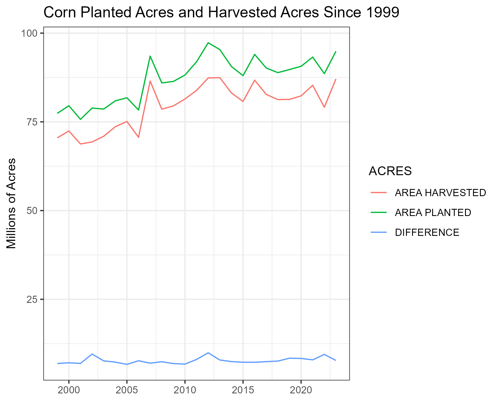
12.2 Forecasting Yield
Just like in forecasting acreage, we have different procedures for forecasting yield prior to planting. Before the summer growing season gets underway trend yield is usually used. The trouble is, where to start?
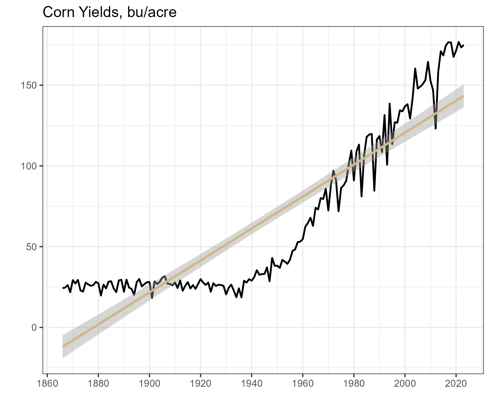
USDA has records on yield that go back to 1866. While one often thinks more information is better when forecasting, the old yield estimates are no longer useful for forecasting current yield. Technological progress caused yields to take of in the 1950’s and they have been climbing ever since. In the forecasting world, this is called structural change or a structural break. If structural change has occurred, the world looks so different now than it did before the structural change that data from before the break just is not useful for forecasting going forward.
It turns out that if you estimate a trend-line beginning with 1950, with 1980, or with pretty much any date in between, you will get an estimate that is roughly similar.
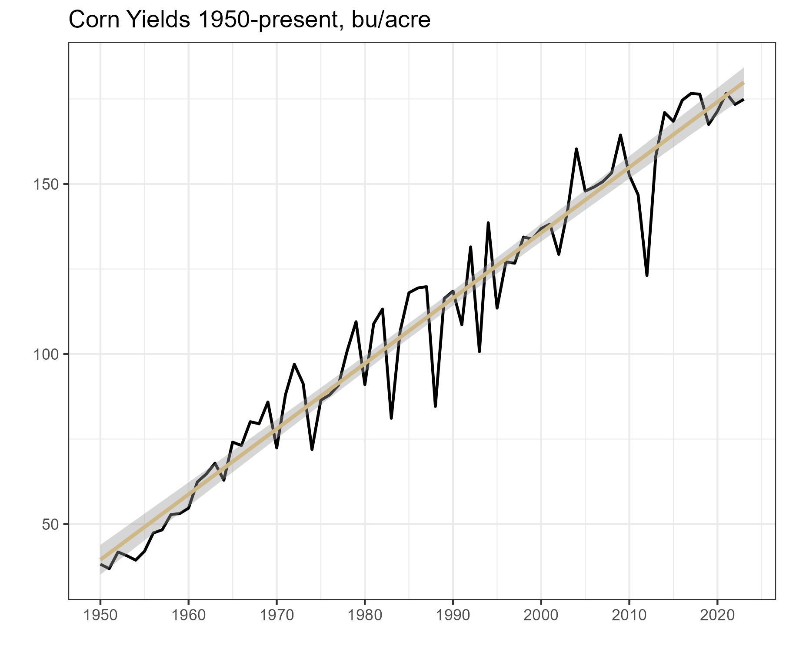
For example, using the trend-line beginning with 1950 to forecast yield we come up with the following:
\[Yield^{t} = 1.935*t - 3733.903\]
While, using the trend-line beginning with 1980 to forecast yield we come up with the following:
\[Yield^{t} = 1.939*t-3742.918\]
In other words, yields have been increasing by an average of just under 2 bushels per acre since the 1950’s.
12.3 Growing Season Yield Forecasts
The USDA undertakes an extensive effort to estimate yield during the growing season. Prior to August, they conduct the Agricultural Yield Survey (AYS) which surveys a large number of farmers and asks them to estimate yield. Beginning in August, the USDA conducts what it calls the Objective Yield Survey. They take samples from a relatively large number of fields and estimates yield in those fields based on various factors such as counts of plants, ears, and pods (for soybeans) (Good and Irwin 2011).
Since commodity futures markets respond to new information in the USDA reports, analysts employed by private advisory firms or proprietary trading shops will try to anticipate the USDA’s yield forecast. If they can do this they can capitalize on superior private information by making a well advised business decision or earning speculative profits.
This is difficult because an independent analyst will not have the same level of resources as the USDA does when it compiles its monthly yield estimates; he or she will have to rely on historical data and an understanding of how weather is affecting crop yields across the geographically dispersed growing region. Figure 8 below plots each year’s deviation from trend yield since 1980. The first plot is in levels (i.e., \(Yield_t - Trend Yield_t\)); whereas the second plot is in percent terms (i.e., \(\ln{Yield_t} - \ln{Trend Yield_t}\). Notice that the shape looks roughly the same, but the 2012 drought looks worse expressed in level deviations than the short crops of 1983, 1988, and 1993. This is because yield is trending higher. In percentage terms we see that the 2012 drought was equally as bad as 1983 and not quite as bad as 1988.
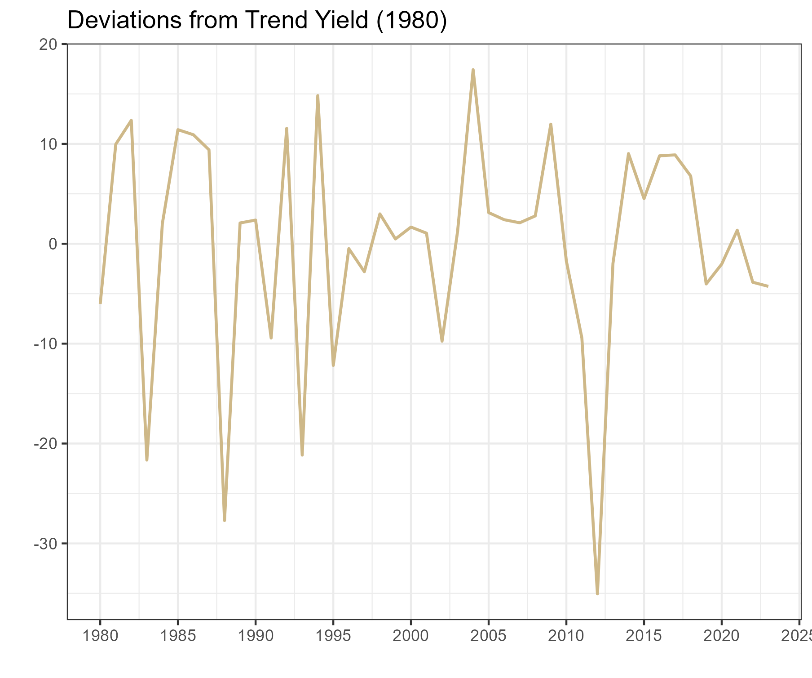
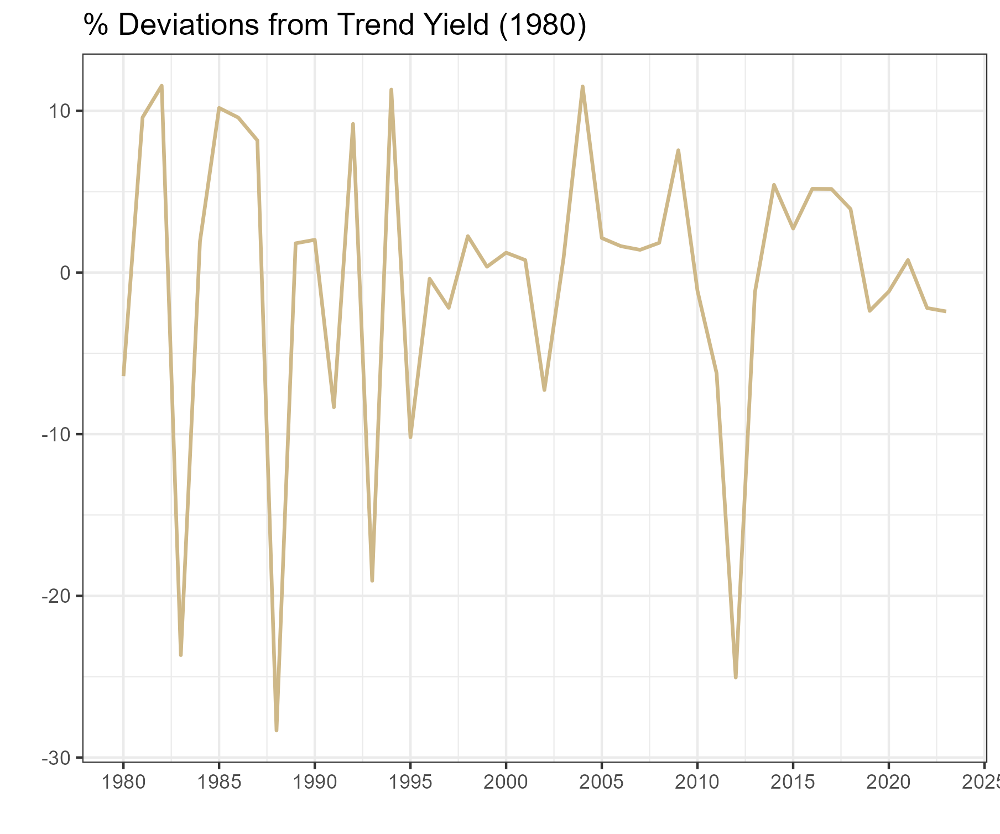
Short of an advanced agronomic model that can take into account planting date, precipitation, growing degree days, or ability to estimate yield from remote sensing technology (Unganai and Kogan 1998), we will have to resort to the similar year approach.
Analysts often estimate deviations from trend yield by finding year similar to the current one in terms of weather. The assumption is that if the weather patterns were similar then the percent deviation from trend yield should be similar as well. Note here that percent deviation is preferable so you do not need to adjust for the increasing trend in yield as you look backward to a similar year.
An alternative approach would be to use the Crop Condition Report and find a year in recent history that had a similar percent of the crop rated Good/Excellent. Figure 9 below shows how Good + Excellent crop condition ratings relate to percent deviations in trend yield. They should be at least positively correlated, and in fact starting in the late 90’s this measure began to correlate strongly with the final yield.
Figure: Good plus Excellent Crop Condition Ratings in Final Week of Reporting versus Percent Deviations in Final Yield from Trend
Figure: Good plus Excellent Crop Condition Ratings in Final Week of Reporting versus Percent Deviations in Final Yield from Trend
12.4 Forecasting Production
Once you have an estimate for acreage and yield, you can multiply them to give you an estimate of production for your balance sheet forecast.
12.5 Conclusion
In this chapter we discussed the basics of forecasting production. First we discussed forecasting acreage, then we moved on to forecasting yield both before and during the growing season. We discovered that estimating yield percent deviations from trend better than the USDA is extremely difficult. Even anticipating whether the yield forecast will go up or down is not an easy task. The similar year method has its limitations when used to find similar years in terms of weather or crop conditions ratings.
12.6 Exercises
Use NASS data for soybeans for forecast production in a similar manner we we did in class for corn.
Read and Discuss: Early Planting and 2015 Corn Yield Prospects: How Much of an Increase?
- Irwin, S., D. Good, and J. Newton. “Early Planting and 2015 Corn Yield Prospects: How Much of an Increase?” farmdoc daily (5):93, Department of Agricultural and Consumer Economics, University of Illinois at Urbana-Champaign, May 20, 2015.
13 Forecasting Use of Corn
In the WASDE balance sheet for corn there are three use categories. Two account for domestic consumption - Food, Seed and Industrial, and Feed and Residual - while exports make up the third category. Ethanol makes up a large portion of the Food, Seed, and Industrial category, so it is given its own line in the balance sheet.
As we have noted before, historical use patterns are the first place to start when trying to forecast use categories for the marketing year. Looking at quarterly gives you a sense of how use is distributed across the marketing year in different categories. The annual histories, however, are probably the most useful.

13.1 Food, Alcohol, and Industrial Use
Let us begin by looking at the Food, Alcohol and Industrial category. These data were queried from the Feed Grains database maintained by the USDA ERS. The categories here are a little more disaggregated than those presented in the USDA WASDE balance sheets, but they are roughly the same. For example, in figure 1 below we show the Food, Alcohol, and Industrial use category. This omits seed from the Food, Seed, and Industrial category in the WASDE balance sheet. The Feed Grains database actually breaks out the seed use as its own column, but corn used for seed is a very small proportion of production and it is largely predictable from year to year.
 Source: Feed Grains database maintained by the USDA ERS.
Source: Feed Grains database maintained by the USDA ERS.
Figure 1 shows a dramatic uptrend in the Food, Alcohol and Industrial use category. This is due to the dramatic increase in the production of ethanol starting around 2005/2006 and plateauing around 2010 when U.S. ethanol consumption roughly hit the ‘blend-wall’ where ethanol makes up 10% of the retail gasoline supply.
 Source: Feed Grains database maintained by the USDA ERS.
Source: Feed Grains database maintained by the USDA ERS.
Figure 2 shows the same data, but the quarterly figures are aggregated to the marketing year total. In both figures 1 and 2 the rationing effects of high prices that occurred as a result of the drought in 2012.
 Source: Feed Grains database maintained by the USDA ERS.
Source: Feed Grains database maintained by the USDA ERS.
From figure 3 it is easier to see what share of the crop the large increase in corn use in the Food, Alcohol, and Industrial use category. In figure 3 this use category is presented as a percentage of that marketing year’s production. In the early 1990’s this use category accounted for over 50% since 2010. The drop in percentage of production in 2015 occurs because of the large crop in 2015, even though the use level is flat (shown in figure 2).
13.2 Exports
Quarterly corn exports are displayed in figure 4. Unlike Food, alcohol and industrial use, exports tend to have a very seasonal or cyclical pattern. Exports are large in the second quarter of the marketing year, December to February, right after we harvest the new crop. This is when stocks are most plentiful and prices are at season lows in years exhibiting an upward sloped forward curve.
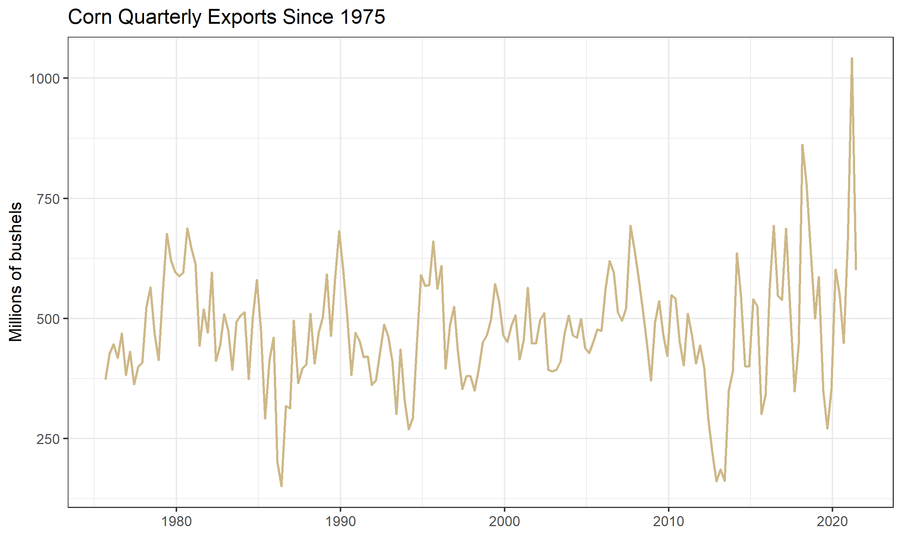
Source: Feed Grains database maintained by the USDA ERS.
Displaying the same data in Figure 5, but aggregating to an annual frequency, we see the marketing seasonality smoothed away.

Source: Feed Grains database maintained by the USDA ERS.
On average, it appears that exports follow a constant trend-line with variation around the mean produced by years of surplus or scarcity. The drought year 2012, for example is clearly visible as an exceedingly low export year.
In figure 6 we display annual corn exports as a percentage of corn production.
 Source: Feed Grains database maintained by the USDA ERS.
Source: Feed Grains database maintained by the USDA ERS.
When exports are viewed as a proportion of production, we see a pronounced downward trend. This is due to the increasing share of production allocated to the Food, seed, and Industrial category visible in figure 3. Recall that this category is comprised mainly of corn as feed-stock for ethanol production.
The year-to-year variation is caused by price fluctuations with low prices encouraging and high prices discouraging consumption. The marketing year 2020 has shown a dramatic uptick in expected exports both in millions of bushels and as a proportion of total use. A dramatic increase in buying from China relative to previou levels has been the biggest contributor.
| COUNTRY | EXPORTS 2016/2017 | RANK | EXPORTS 2015/2016 | RANK | EXPORTS 2014/2015 | RANK | EXPORTS 2013/2014 | RANK |
|---|---|---|---|---|---|---|---|---|
| MEXICO | 13539.7 | 1 | 12558.6 | 1 | 10793.8 | 2 | 10526.3 | 2 |
| JAPAN | 11983.4 | 2 | 10506.6 | 2 | 11858.6 | 1 | 11487.0 | 1 |
| KOR REP | 5588.5 | 3 | 3021.6 | 4 | 3927.2 | 4 | 4844.2 | 3 |
| COLOMB | 4438.9 | 4 | 4629.5 | 3 | 4413.3 | 3 | 3359.4 | 4 |
| PERU | 3166.7 | 5 | 2490.9 | 5 | 2421.0 | 5 | 1414.5 | 8 |
| TAIWAN | 2773.2 | 6 | 2045.2 | 6 | 1755.0 | 6 | 1936.4 | 7 |
| S ARAB | 2240.4 | 7 | 1516.4 | 7 | 1312.7 | 8 | 1021.0 | 9 |
| GUATMAL | 1008.9 | 8 | 897.1 | 10 | 936.7 | 9 | 783.9 | 11 |
| MOROCCO | 905.3 | 9 | 438.4 | 15 | 310.9 | 18 | 201.2 | 22 |
| C RICA | 840.2 | 10 | 520.1 | 13 | 784.1 | 11 | 593.6 | 13 |
| DOM REP | 814.9 | 11 | 252.1 | 22 | 599.3 | 13 | 637.6 | 12 |
| CHINA | 717.9 | 12 | 184.8 | 24 | 473.5 | 15 | 2759.4 | 5 |
Source: USDA FAS
Table 1 shows the top 12 importers of U.S. corn for the 2016/2017 marketing year. Export totals are given in 1,000 metric ton units. Clearly Japan and Mexico are the dominant Importers of U.S. corn, with South Korea being a distant third. The table shows that most countries rank has remained fairly stable across the marketing years shown.
13.3 Feed and Residual
The final use category is the most difficult to forecast because its quantity is derived, not estimated. This means the USDA makes estimates of every other row in the balance sheet. Then, to ensure the numbers add up, they infer the Feed and Residual category by subtracting the other demand categories from supply.
\(Feed\&Residual = Production + Imports + Beginning Stocks - Ending Stocks - FoodSeed\&Industrial - Exports\)
Since each category on the right hand side is itself estimated with some error, the error for the Feed and Residual category is the sum of the errors of the other categories. This means that forecast errors from each of the categories get added together, creating a category with larger forecast error than all the others. For this reason the Feed and Residual category is the most difficult to forecast. It should correlate roughly to livestock feeding units, but does not prove to be that effective in practice.
\(\begin{align} Feed\&Residual = (Production + \epsilon_{prod}) + (Imports + \epsilon_{import}) + (Beginning Stocks + \epsilon_{BStocks}) \\ - (Ending Stocks + \epsilon_{EStocks}) - (FoodSeed\&Industrial + \epsilon_{Food}) - (Exports + \epsilon_{Export}) \end{align}\)
Figure 7 below displays the Feed and Residual category since 1990.

Source: Feed Grains database maintained by the USDA ERS.
Unlike Exports which saw its biggest quarter of use in the second quarter of the marketing year (beginning in December), the biggest quarter of use in the Feed and Residual category is the first (beginning in September). This is because at the end of summer ranchers ‘bring cattle home from grass’ and they begin eating grain and hay instead of green grass on pasture. This is also when calves born in the spring begin to be ‘fattened’ for slaughter.
Figure 8: shows the Feed and Residual category annually and figure 9 shows the category annually as a percent of production.
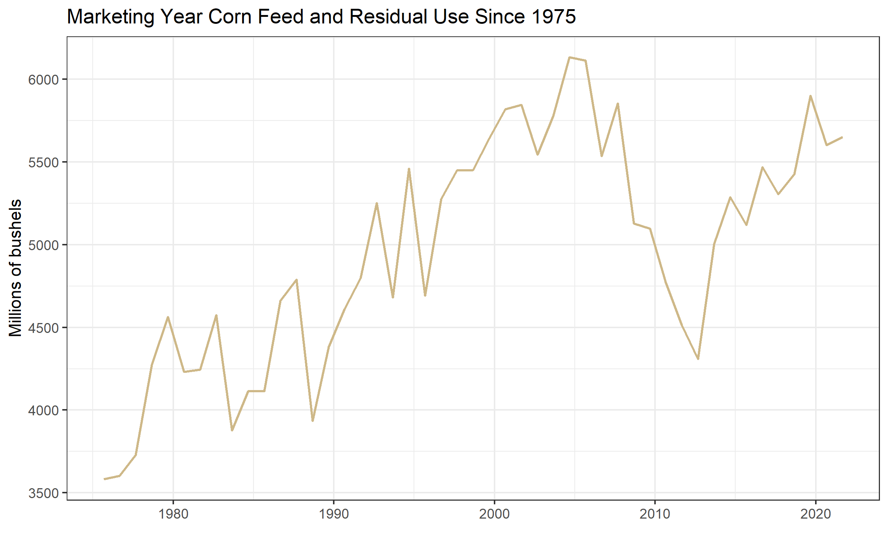
Source: Feed Grains database maintained by the USDA ERS.

Source: Feed Grains database maintained by the USDA ERS.
Figure 8 shows that the category has remained roughly constant over the time-period graphed, but as a percentage of production it has fallen since 2005. Like the export category, this reflects a proportional shift in use toward ethanol production.
13.4 Price Sensitivity of Use Categories
Examining annual figures as a percentage of production reveals some interesting facts about the price sensitivity of the three use categories.
The least price sensitive category seems to be Food, Seed, and Industrial. This should be intuitive because this category is composed primarily of corn for feedstock in ethanol production. Since ethanol consumption is effectively mandated at a certain level by the Renewable Fuels Standard, users (gasoline blenders) must purchase a certain amount of ethanol to blend into the retail gasoline supply. This implies a significant portion of the corn crop that will be used regardless of the price.
The second category is Feed and Residual. Although year-to-year variation can come about due to price responsiveness of the U.S. livestock industry, this variation tends to be overwhelmed by the variation due to the aggregate forecast errors in the other categories.
The most price sensitive category is Exports, which is readily visible in figure 5 and 6. Foreign buyers of corn can substitute to purchase their corn from other parts of the world like (Argentina comes first to mind). Also, consumers of meat (exported corn is primarily used as animal feed in the foreign country) in the less developed world are more price sensitive and presumably reduce consumption when prices are high.
13.5 Forecasting Use
One method for forecasting the use categories during the marketing year, is to keep track of how much corn has been used to date in each category. This pace of use can be compared to the pace of use in previous years. Alternatively, the pace of use can be expressed as a percent of the WASDE forecast use. Ideally this percent of WASDE forecast use would be compared to historical percent of WASDE forecast use. The idea behind such an exercise being the seasonality we saw in the historical graphs above is likely to repeat itself. Information about the pace of use in each category must be obtained from different sources within the USDA.
13.5.1 Food, Seed, and Industrial
We discussed above that ethanol production is the primary user of corn in the Food, Seed, and Industrial Category. This becomes obvious by comparing figure 10 below, which displays ethanol production and consumption over time, with figure 1 above.
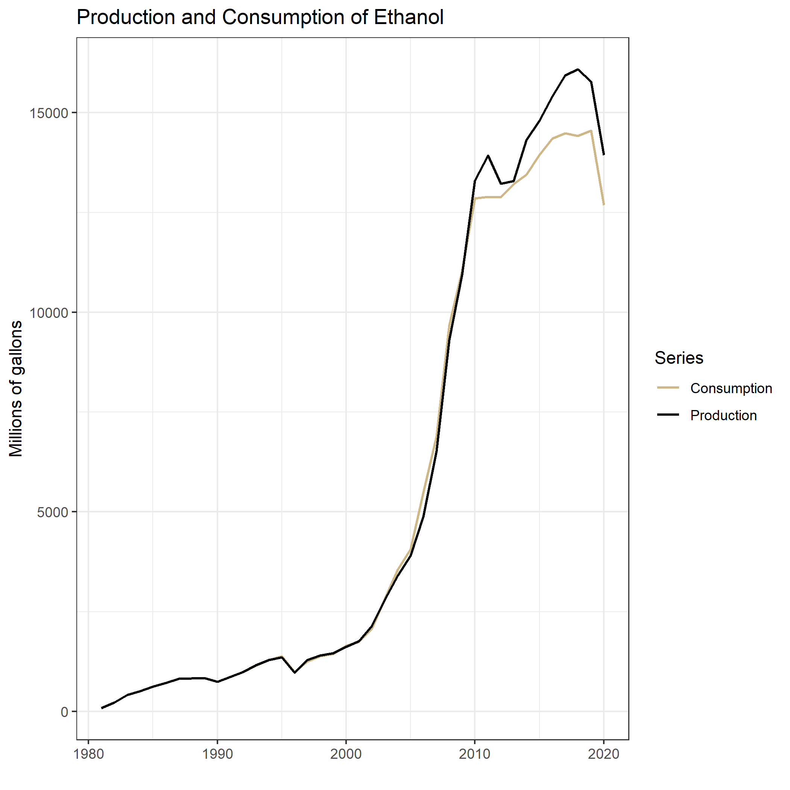
Source: EIA website. Click the link for access to the raw data.
Ethanol production and consumption begin to increase rapidly around 2005, which is when the Energy Policy Act of 2005 and later the Energy Security and Independence Act of 2007 created the Renewable Fuels Standard (RFS). The RFS mandated quantities of ethanol that blenders of gasoline are required to blend into the retail gasoline supply. These annual mandates are revised every year, but they were designed to steadily increase year after year until 2015 when the mandate reached 15 billion gallons per year. This figure came about because gasoline consumption in the United States was forecast to reach 150 billion gallons per year by 2015. So the RFS mandates were designed to reach the point where the entire retail gasoline supply would include 10% ethanol. Incidentally, 300,000,000 barrels indicated in Figure 10 corresponds to 15 billion gallons (300,000,000*50gallons/barrel = 15,000,000,000 gallons). The orange line shows that blenders of gasoline have been blending greater than 15 billion gallons of ethanol since 2010.
Going forward, without significant growth in the consumption of gasoline in the United States, this corn use category is likely to remain flat for the foreseeable future. Even so, ethanol blenders sometimes experience an ethanol-to-gasoline price ratio that is favorable to blending ethanol even above the levels of the RFS mandate. So conducting a pace-of-use analysis for this corn use category makes sense as well. Data on monthly fuel ethanol production can be found at EIA.GOV. Examining the current marketing year’s production of ethanol gives some indication of whether ethanol production is likely to exceed the 15 billion gallon per year mandated level.
13.5.2 Exports
Two USDA agencies are involved in providing estimates of export sales. The USDA Foreign Agricultural Service and the USDA Grain Inspection, Packers, and Stockyards Administration.
13.5.2.1 USDA FAS Export Sales Reporting System
The USDA Foreign Agricultural Service maintains the Export Sales Reporting System, which reports weekly export quantities and daily reports of large export sales. From the FAS website:
The Export Sales Reporting Program has its roots from the unexpected purchase of large amounts of grain by the Soviet Union in 1972, “The Great Russian Grain Robbery.” The huge, unanticipated purchases of U.S. wheat and corn that year depleted U.S. reserve stocks which caused a sizable run-up in U.S. food prices.
Furthermore, there was growing concern that some companies might have an unfair advantage in situations like this because they had access to market-sensitive information that was unavailable to the public. To ensure that all parties involved in the production and export of U.S. grain had access to up-to-date export information, Congress mandated the Export Sales Reporting program in 1973.
Before the program was established, it was difficult for the public to obtain information on exports until the products were actually shipped. The program helps facilitate price stability by guaranteeing that everyone has access to the same information at the same time.
13.5.3 Daily Reports
Under the export sales reporting system, U.S. exporters are required to report all large sales of certain designated commodities by 3 p.m. (Eastern time) on the next business day after the sale is made. The designated commodities for these daily reports are wheat (by class), barley, corn, grain sorghum, oats, soybeans, soybean cake and meal, and soybean oil. Large sales for all reportable commodities except soybean oil are defined as 100,000 metric tons or more of one commodity in one day to a single destination or 200,000 tons or more of one commodity during the weekly reporting period. Large sales for soybean oil are 20,000 tons and 40,000 tons, respectively. > ### Weekly Reports Weekly reports are also required, regardless of the size of the sales transaction, for all of these commodities, as well as wheat products, rye, flaxseed, linseed oil, cotton (by staple length), cottonseed, cottonseed cake and meal, cottonseed oil, rice (by class), and cattle hides and skins (cattle, calf, and kip), and beef. The reporting week for the export sales reporting system is Friday-Thursday. The Secretary of Agriculture has the authority to add other commodities to this list. Source: USDA FAS
13.5.3.1 GIPSA
USDA GIPSA mission is “To facilitate the marketing of livestock, poultry, meat, cereals, oil-seeds, and related agricultural products, and promote fair and competitive trading practices for the overall benefit of consumers and American agriculture.” From the GIPSA website:
History
The Grain Inspection, Packers and Stockyards Administration (GIPSA) was established in 1994 as part of the reorganization of the U.S. Department of Agriculture. The formation of the agency resulted from the joining of two previously independent agencies: the Federal Grain Inspection Service and the Packers and Stockyards Administration. Today, GIPSA is part of USDA’s Marketing and Regulatory Programs, which are working to ensure a productive and competitive global marketplace for U.S. agricultural products.
The Federal Grain Inspection Service (FGIS) was established by Congress in 1976 to manage the national grain inspection system, which initially was established in 1916, and to institute a national grain weighing program. The goal of creating a single Federal grain inspection entity was to ensure development and maintenance of uniform U.S. standards, to develop inspection and weighing procedures for grain in domestic and export trade, and to facilitate grain marketing.
Today’s Packers and Stockyards Program (P&S) is the progeny of the Packers and Stockyards Administration, which was established in 1921 under the Packers and Stockyards Act. The organization was instituted to regulate livestock marketing activities at public stockyards and the operations of meat packers and live poultry dealers. Source: USDA GIPSA
The GIPSA’s main objective is to maintain standard in quality grading and weighing, but as a by-product of their reporting they also produce useful statistics on export shipments. Monthly data on grains inspected and weighed for export by (U.S. region) and destination country is available. Annual reports are also available.
Since the FAS and the GIPSA come about their export totals through different processes, they will occasionally differ in their summary estimates. They have a memorandum of understanding with one another that differences will be reconciled so that the export totals reported by each agency will not differ substantially.
13.5.4 Feed and Residual
While the Residual component tends to dominate the variation in the Feed and Residual category, the USDA does publish statistics related to numbers of cattle, hogs, and poultry. Major changes in livestock numbers produce a detectable impact in the Feed and Residual use category, to it is worthwhile knowing where to find these estimates.
The USDA releases a monthly Cattle on Feed report. Tracking this report gives a sense of trends in beef cattle herd size and production. Similarly, the Hogs and Pigs report is released quarterly and provides inventory estimates. The monthly Poultry Slaughter report contains the number of head and live weight of chickens, turkeys, ducks and other poultry slaughtered under Federal inspection.
13.6 Readings
Reviewing the Pace of Corn and Soybean Exports
Newton, J. “Reviewing the Pace of Corn and Soybean Exports.” farmdoc daily (5):14, Department of Agricultural and Consumer Economics, University of Illinois at Urbana-Champaign, January 26, 2015.
14 Forecasting Use of Soybeans
In the WASDE balance sheet for soybeans there are three use categories. Two account for domestic consumption - Crush, and Feed, Seed, and Residual - while exports make up the third category. The main distinction between cereal grains, like corn, and oilseeds, like soybeans, is that cereal grains are generally ground whole for whatever the end use turns out to be. Most oilseeds, on the other hand, are crushed to extract oil and meal before their ultimate use. Soybean oil is food-grade and can be found on the shelves of any American grocery store. Soybean meal is protein rich and used as an ingredient in livestock feed rations.
In the next sections we will examine historical use patterns of soybeans in the three categories expressed nominally, and as a percent of the concurrent year’s total supply, similar to the organization of chapter 7.
Since this book has taken a closer look at corn production than soybean production, we will ground our discussion of use by first noting the pattern of annual supply of soybeans in recent history.
Figure 1 displays annual soybean production in millions of bushels from 1980-2014. A steadily increasing trend can be observed; supply had roughly doubled since the early 1980s from about 2,300 million bushels to about 4,000 million bushels in 2014.

Figure 1: Annual Soybean Supply, 1980-2014
Source: USDA ERS Oil Crops Yearbook
Since soybeans are not consumed whole as food by humans or feed for animals in the U.S., nearly all the soybean supply is crushed domestically or exported.
14.1 Soybean Crush
Figure 2 displays the annual crush of soybeans from 1980-2014. A pronounced upward trend, similar to the trend in soybean supply is observed.

Figure 2: Annual Soybean Crush, 1980-2014
Source: USDA ERS Oil Crops Yearbook
When examining corn use, we saw that the proportion of supply shifted dramatically from other use categories to Food, Seed, and Industrial use due to the increase in ethanol production since 2005. In figure 3, we show soybean crush as a percent of the concurrent year’s total supply. While the bushels of soybeans devoted to the crush is steadily increasing, figure 3 shows that the crush is increasing roughly proportionally. There does not seem to be a shift into or out of the crush category.

Figure 3: Annual Soybean Crush as a Percent of Supply, 1980-2014
Source: USDA ERS Oil Crops Yearbook
14.2 Exports
Figure 4 displays annual soybean exports. Similar to the crush category, exports are observed to steadily increase over the period from 1980-2014.

Figure 4: Annual Soybean Exports, 1980-2014
Source: USDA ERS Oil Crops Yearbook
Figure 5 shows soybean exports as a percent of total supply from 1980-2014. Similar to the crush category, the percentage of supply has remained constant.

Figure 2: Annual Soybean Exports as a Percent of Supply, 1980-2014
Source: USDA ERS Oil Crops Yearbook
| COUNTRY | EXPORTS 2016/2017 | RANK | EXPORTS 2015/2016 | RANK | EXPORTS 2014/2015 | RANK | EXPORTS 2013/2014 | RANK |
|---|---|---|---|---|---|---|---|---|
| CHINA | 36148.3 | 1 | 29855.0 | 1 | 29640.8 | 1 | 27602.2 | 1 |
| MEXICO | 3665.0 | 2 | 3252.6 | 2 | 3438.8 | 2 | 3194.5 | 2 |
| INDNSIA | 2296.9 | 3 | 2028.6 | 5 | 1875.9 | 5 | 2291.5 | 3 |
| JAPAN | 2137.2 | 4 | 2145.6 | 3 | 2011.4 | 3 | 1826.4 | 4 |
| NETHLDS | 2044.9 | 5 | 2037.7 | 4 | 1879.4 | 4 | 1015.6 | 7 |
| TAIWAN | 1292.7 | 6 | 1232.9 | 7 | 1310.8 | 6 | 1133.6 | 5 |
| GERMANY | 1287.7 | 7 | 1757.5 | 6 | 1005.9 | 7 | 676.1 | 8 |
| BANGLADH | 1050.0 | 8 | 551.0 | 10 | 545.7 | 13 | 160.5 | 21 |
| THAILND | 950.6 | 9 | 424.2 | 15 | 518.2 | 14 | 432.4 | 13 |
| EGYPT | 807.2 | 10 | 295.4 | 19 | 712.4 | 11 | 604.6 | 9 |
| SPAIN | 731.8 | 11 | 964.1 | 8 | 852.4 | 8 | 1099.5 | 6 |
| KOR REP | 653.4 | 12 | 480.3 | 13 | 548.1 | 12 | 599.2 | 10 |
Source: USDA FAS
Clearly China is the dominant importer of U.S. soybeans. They buy 10 times more than 2nd ranked Mexico. Examining the short history in table 1, you can see that increasing exports of soybeans to China accounts for nearly all of the uptrend in figure 4. In the 2016/2017 marketing year China was the destination of over 60% of U.S. soybean exports.
14.3 Feed, Seed, and Residual

Figure 6: Annual Soybean Feed, Seed, and Residual, 1980-2014
Source: USDA ERS Oil Crops Yearbook

Figure 7: Annual Soybean Feed, Seed, and Residual as a Percent of Supply, 1980-2014
Source: USDA ERS Oil Crops Yearbook
14.4 Price Sensitivity of Use Categories
Soybeans are a bit different from corn because there are only two use categories that are important, crush and exports. The soybean use categories historically have been reliably 50% crush and 50% exports as a percent of supply. In recent years, exports have been increasing both nominally and as a percent of supply. So forecasting demand for soybeans has largely become a matter of forecasting soybean exports.
Recently, with the rise of South American soybean (and corn) production, forecasting exports is a matter of balancing the price of U.S soybeans compared with the price of South American soybeans and the raw demand from our trading partners. China has become the major player in this space, as is evident in table 1.
14.5 Forecasting Use of Soybeans
As we mentioned in chapter 7, keeping track of how much soybeans have been used to date in each category is a useful exercise to determine a reasonable forecast for different use categories of soybeans. As was true for corn, information about the pace of use in each category must be obtained from different sources within the USDA.
Soybeans exports can be followed during the marketing year by following the GIPSA and FAS Export Reporting System as was identified for corn exports in Chapter 7. Also, as identified in Chapter 7 is is useful to tracking Cattle on Feed, Hogs and Pigs, and the Poultry Slaughter, specifically because livestock numbers contribute to demand for soybean meal, which in turn contributes to crush demand.
14.6 Exercises
Skills Learned
A common method for accounting strength of demand: pace of use.
How to directly import data that is hosted on a website so that a .csv file has a url for download
How to work with pivot tables in excel to summarize large data-sets with many factor variables
Compare the pace of export sales in the first few weeks of marketing year 2017/2018 to the pace of export sales in the previous three marketing years. Make inferences about whether this marketing year seems to be getting off to a good start in export sales.
a. Choose FGIS Reports in the Federal Grain Inspection Menu
b. Scroll down and choose Export Grain Totals (Yearly) in the Data and Statistics section - Import the reports for 2014-2017 into excel so we can examine the following marketing years:
a. 2014/2015, 2015/2016, 2016/2017, and 2017/2018 (so far) Create a pivot table that has weeks in the rows, marketing year in the columns, and sums the export sales in each week. Filter by Grain.
Copy and paste special this table into a new worksheet as plain text (so that is not a pivot table).
Delete the data in 2014 prior to September so that we start at the beginning of the marketing year.
Collapse all the marketing year into a single set of 53 rows (so we can compare by marketing year.)
Create a new column on the left side and fill it in with a sequence of 1 to 53, for weeks in the marketing year.
Insert two columns between each marketing year; label them Cumulative Sum and Pace of Export.
Calculate the cumulative sums.
Go find the historical export numbers from old WASDE reports for each marketing year. Enter these values in your spreadsheet somewhere, and convert the million bushel numbers into pounds using the fact that bushel of soybeans weighs about 60 lbs.
Calculate the pace of use by dividing the cumulative sums by the export total for each marketing year.
Plot the pace of use with the Week numbers on the x axis for each marketing year.
Infer whether or not the 2017/2018 export sales are off to a strong start.
15 Ending Stocks and Price
Over the course of the last several chapters we have covered each category of supply and use. In tables 1 and 2 below, that literally means we covered how to forecast the numbers in each row of the USDA WASDE balance sheet. Subtracting total use from total supply gives an estimate of marketing year ending stocks. For example, in table 1,
\[Supply, Total - Use, Total = 16,909 - 14,500 = 2,409 (Million bushels) = Ending Stocks;\]
in table 26
\[Supply, Total - Use, Total = 4,426 - 4,061 = 365 (Million bushels) = Ending Stocks\]
| Corn | Marketing Year 2014/2015 | Marketing Year 2015/2016 Est. | Marketing Year 2016/2017 July Projection | Marketing Year 2016/2017 August Projection |
|---|---|---|---|---|
| Million Acres | ||||
| Area Planted | 90.6 | 88 | 94.1 * | 94.1 |
| Area Harvested | 83.1 | 80.7 | 86.6 * | 86.6 |
| Bushels | ||||
| Yield per Harvested Acre | 171 | 168.4 | 168.0 * | 175.1 |
| Million Bushels | ||||
| Beginning Stocks | 1232 | 1731 | 1701 | 1706 |
| Production | 14216 | 13601 | 14540 | 15153 |
| Imports | 32 | 65 | 40 | 50 |
| Supply, Total | 15479 | 15397 | 16281 | 16909 |
| Feed and Residual | 5314 | 5200 | 5500 | 5675 |
| Food, Seed & Industrial | 6567 | 6567 | 6650 | 6650 |
| Ethanol & by-products | 5200 | 5200 | 5275 | 5275 |
| Domestic, Total | 11881 | 11767 | 12150 | 12325 |
| Exports | 1867 | 1925 | 2050 | 2175 |
| Use, Total | 13748 | 13692 | 14200 | 14500 |
| Ending Stocks | 1731 | 1706 | 2081 | 2409 |
| Avg. Farm Price ($/bu) | 3.7 | 3.55 - 3.65 | 3.10 - 3.70 | 2.85 - 3.45 |
and
| Soybeans | Marketing Year 2014/2015 | Marketing Year 2015/2016 Est. | Marketing Year 2016/2017 July Projection | Marketing Year 2016/2017 August Projection |
|---|---|---|---|---|
| Million Acres | ||||
| Area Planted | 83.3 | 82.7 | 83.7* | 83.7 |
| Area Harvested | 82.6 | 81.8 | 83* | 83 |
| Bushels | ||||
| Yield per Harvested Acre | 47.5 | 48 | 48.9* | 50.6 |
| Million Bushels | ||||
| Beginning Stocks | 92 | 191 | 255 | 195 |
| Production | 3927 | 3929 | 4060 | 4201 |
| Imports | 33 | 25 | 30 | 30 |
| Supply, Total | 4052 | 4145 | 4346 | 4426 |
| Crushings | 1873 | 1900 | 1940 | 1950 |
| Exports | 1842 | 1880 | 1950 | 1985 |
| Seed | 96 | 97 | 95 | 95 |
| Residual | 50 | 12 | 31 | 31 |
| Use, Total | 3862 | 3889 | 4016 | 4061 |
| Ending Stocks | 191 | 255 | 330 | 365 |
| Avg. Farm Price ($/bu) | 10.1 | 8.95 | 8.35 - 9.85 | 8.30 - 9.80 |
However, this still leaves a lot to be desired because the most compelling reason to keep a detailed balance sheet and forecast future supply and use is to come up with a reasonable expectation for price. After all our work on forecasting the components of the balance sheet, we have not made much headway in that regard. In this chapter, we cover some approaches for taking a forecast of ending stocks and translating that into a forecast of price.
15.1 Forecasting Price
Arriving at an estimate of ending stocks gives one a sense of the degree of scarcity (or lack-thereof) in the market. It is still difficult to infer the marketing year average price from that, because the prevailing price that should coincide with the forecasted ending stocks is a function of the elasticities of demand for different use categories. These can be difficult to estimate, and we are not guaranteed that elasticity is constant from one year to the next.
Figure 1 below is reproduced from the farmDoc Daily (fdd) article by Good and Irwin, “The Relationship between Stocks-to-Use and Corn Prices Revisited”

Classic ‘Identification Problem’ of Regressing Prices on Quantities
Source: FarmDoc Daily
Since the supply curve shifts from year-to-year and the demand curve shifts from year-to-year due to a myriad of factors, one cannot count on estimating a single supply or demand curve from a series of price and quantity pairs. However, once we have entered a marketing year; i.e., we have harvested the domestic supply in the balance sheet, we can count of total supply being quite inelastic. We can be confident of this because imports are historically a very small part of domestic total supply for corn, and after the domestic harvest, imports would be the only way to shift the supply curve. Further, if one had some confidence that the demand curve was more or less constant through time, a time-series of prices and quantities would approximately trace out the demand curve.
15.2 Examining the Data
This section continues to draw heavily on the Good and Irwin fdd article referenced above. First let us take a look at the average price received for corn over time and the stocks-to-use of corn over time in figure 2. These data can both be obtained from the USDA ERS Feed Grains Database database, although you have to download the stocks and use separately and create your own stocks-use-variable.

Figure 2: Corn Average Price Received and Stocks-to-Use
Perhaps the first thing that one notices in this figure is the pronounced stocks-to-use spikes that occurred in the 1982/1983 and 1985/1986, 1986/1987, 1987/1988 marketing years. Those exceptionally high stocks relative to use was a result of government commodity programs designed to keep prices from falling too far. Specifically, the stocks were help primarily in the Farmer-Owned-Reserve or by the Commodity Credit Corporation (Westcott and Hoffman 1999). Both programs were designed to keep bushels off the market and thus buoying prices. During periods of prolonged excesses, however, it becomes very costly for the government to procure and store large quantities of the commodity and it has a continuing depressing effect on market prices because the market knows the government holds large stockpiles. Farm legislation (‘The Farm Bill’ is re-negotiated every four years by congress) has trended toward more market-oriented approaches to supporting agriculture, and one can observe a marked decline in stocks-to-use over time.
Aside from the the wild swings in the 1980’s, the series still seem to show a negative relationship between stocks-to-use and prices, as one would expect. Figure 3 graphs these two series as a scatter-plot with stocks-to-use on the x-axis.

Figure 3: Corn Prices vs. Stocks-to-Use
A clear negative relationship emerges, but the relationship when stocks are less than 20% of use is less clear. To help clarify, figure 4 highlights years before and after 2006.
Figure 4: Corn Prices vs Stocks-to-Use Pre- and Post-2006
Highlighting the data and pre- or post-20067 clearly shows a wide range of prices over a relatively narrow range of stocks-to-use realizations. Given that 2006 is the beginning of the ramp-up in ethanol production, this should not be surprising. Suddenly there was a large and very inelastic demander of corn in the market. This ensured supply would have to be rationed by price to keep stocks from falling to low levels.
Also in figure 4 trendlines are fitted for the two subsets of the data. Since both scatterplots appear to display a curvature, the price data are regressed on the log of the stocks-to-use data. Also, this specification provided the highest \(R^2\) of the regression specifications available in the defalt Excel options. The regression in the post-2006 period explains 80% of the variaiton in the price data, which suggests it is a reasonable starting point for forecasting price using ending stocks and the balance sheet approach.
15.3 References
Good, D., and S. Irwin. “The Relationship between Stocks-to-Use and Corn Prices Revisited.” farmdoc daily (5):65, Department of Agricultural and Consumer Economics, University of Illinois at Urbana-Champaign, April 9, 2015.
15.4 Exercises
Go to www.agmanager.info, the extension website of Kansas State University’s Agricultural Economics department.
Navigate through the Grain Marketing menu to the Grain Supply and Demand (WASDE) page.
Click on Spreadsheets with WASDE data, or scroll to the bottom of the page.
Download the Corn, Soybeans, and Wheat WASDE tables.
This data is also available from various USDA websites (like https://quickstats.nass.usda.gov/), but the www.agmanager.info site is particularly thorough and well organized for historical WASDE data, so it is a good resource to know about.
Open all three Excel tables for corn, soybeans, and wheat.
Also open a new Excel spreadsheet.
For each of the commodities, corn, sobyeans, and wheat, go to the Annual Sheet, then copy and paste the Year, Stock %, and Average Farm Price columns into your new Excel Spreadsheet. Be sure to label the columns by commodity.
For each commodity, Recreate figure 2 (a time-series chart of prices recieved by farmers and stocks/use %) and figure 3 (an x-y scatterplot of prices recieved by farmers and stocks/use %) from chapter 11.
Fit an appropriate trendline through each of the x-y scatterplots.
Make an educated forecast for average farm price recieved for each commodity.
16 South American Production
Over8 the last twenty years Brazil and Argentina have grown in prominence on the world stage and are currently among the most important growers of soybeans and corn, particularly so for soybeans.
In figure 1 we have plotted the production since 1990 of the world’s top five producers of corn. Argentina, Brazil, China, the European Union, and the United States round out this group. A clear pattern of increases over time is notable particularly for the U.S., China, and Brazil, generating a dramatic upward trend in the production from this top group.
16.1 Production of Corn
Data for figures 1-4 come from the USDA FAS World Production Supply and Demand historical data-sets for grains and oilseeds.

Figure 2 plots the top five countries by exports. Here we see China and the EU dropping out of the top five with Russia and Ukraine taking their place. While U.S. exports have been mostly flat over this time period, exports from Brazil have been expanding rapidly since about 2004.
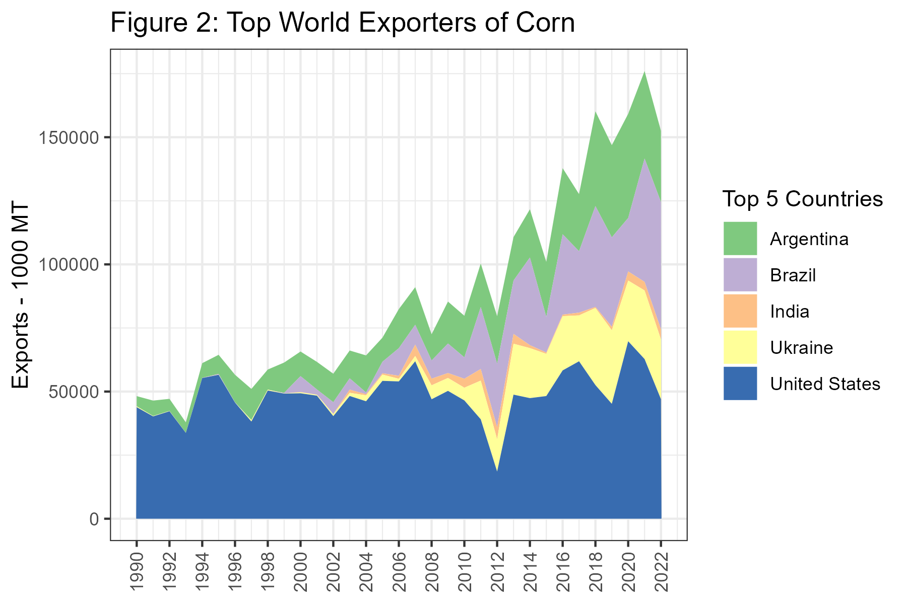
Next, in table 1, we present the top producers of corn in 2017.
Table 1: Top 10 World Producers of Corn, 2020
16.2 Production of Soybeans
Now we turn our attention to the soybean market. In figure 3 we present production since 1990 from the top five countries. Here, the importance of Brazil and Argentina is much more obvious. While production in the U.S. has a visible upward trend, Brazil and Argentina are really increasing at a rapid rate.

In figure 4 we plot the exports from the top five countries. From figure 3 to 4 China and India drop out and are replaced by Canada and Paraguay. The growth in soybean exports from Brazil is quite remarkable in this chart.

Table 2 shows the top ten producers of soybeans in the World. Here we see that Paraguay and Bolivia are present in the top ten as well.
Table 2: Top 10 World Producers of Soybeans, 2020
16.3 South American Production Seasons and Trade Flows
Since South America experiences summer when we in the North America experience winter and vice versa, North American and South American production is nicely complementary in providing corn and soybeans for the export market. We noted in Chapter 9 and 10 that U.S. corn and soybean exports are at their highest levels during the 2nd quarter of the marketing year - right after harvest. During this time, the planting and growing seasons are underway in South America, and the heavy export season from harvesting the previous crop is winding down.
Then, South American farmers are harvesting during our planting and growing seasons (March through June).
The seasonality is a boon for importers because they have the opportunity to buy for seasonally low harvest-time prices twice per year rather than just once per year.
16.3.1 Brazil
Brazil, being quite close to the equator, enjoys the ability to double crop most every year. Typically, farmers plant soybeans as the first crop because if they plant soybeans first they get a second crop of corn. If they plant corn first, there is not enough time to get a second crop of soybeans. However, yields of first crop corn are higher then yields of second crop corn due to when the rainy season comes, so in some places farmers choose to plant one crop of corn and forego double cropping.
Figure 6 show production intensity of soybeans by state, and also provides a calendar of when planting and harvest activity of first crop soybeans are taking place.

Figure 6: Regional Brazillian Soybean Production Seasons
Figure 7 shows the same for second crop corn.
Figure 7: Regional Brazillian 2nd Crop Corn Production Seasons
While figure 8 shows the regional production intensity of first crop corn. Notice the highest production of first crop corn is located in regions that have no second crop in figure 7. This shows that in the east, where managing a second crop is more difficult, farmers are more apt to plant a single crop of corn.

Figure 8: Regional Brazillian 1st Crop Corn Production Seasons
16.3.2 Where to find information on Brazilian Crops
For information about Brazillian production the National Supply Company (Conab) is the main resource. They publish crop reports monthly, just like the USDA’s WASDE report. Typically, the Brazillian report is released a couple of days before the WASDE report, so if there is information from Brazil that will affect world stocks or production, these reports will move prices in the U.S.
16.3.3 Argentina
Argentina is more similar to the U.S. in latitude, so they are only able to plant a single crop. Planting of corn begins in September and harvest runs from March until May.

Figure 9: Regional Argentinian Corn Production Seasons
Planting of soybeans begins in November and harvest runs from April to May.

Figure 10: Regional Argentinian Soybean Production Seasons
16.3.4 Where to find information on Argentinian Crops
The Bolsa de Cereales is the grain exchange in Argentina. They undertake the responsibility of producing crop reports. The reports most closely followed are the Weekly Agricultural Report, which tells the planting or harvest progress, and gives a general update about market conditions. The other report is the Esdtado Y Condition de Cultivos (ECC), which is released once per month. This has more detailed estimates about planting and growing conditions.
With Google Translate to translate web pages reports can be found and understood by English-only speakers.
17 The Soybean Crush
In this Chapter we describe the physical process of converting soybeans into meal and oil, as well as the price relationship that is maintained between these highly related commodities. We saw in the chapter, ‘Forecasting Use of Soybeans in the WASDE Balance Sheet,’ that approximately half of the supply of soybeans in the U.S. is crushed into soybean meal and oil. Nearly all of the remainder of soybean supply is exported where most of it will be crushed abroad.
 Source: United Soybean Board, Flicker
Source: United Soybean Board, Flicker
17.1 Oilseed Processing
Now the most prevalant method for crushing soybeans is a method that uses a solvent to extract the oil from the soybean. Basically, soybeans are pretreated, then flaked to destroy the cell walls so the solvent can get at the oil in the cells. A crude oil is then further prcesssed refined to remove the solvent and other compounds like glycerine, leaving only pure soybean oil. The soybean flakes, minus the oil are then ground in to meal that can be used as a high protein livestock feed.

Soy Flakes
Source: United Soybean Board, Flicker

Soymeal
Source: United Soybean Board, Flicker

Intermediate Soy Oil Products
Source: United Soybean Board, Flicker
Hisorically, soybeans were processed by feeding soybeans into a mechanical press that literally squeezed the oil out. This process is less efficicent and more time consuming - thus more costly. Nearly all commercially crushed soybeans are done with with the solvent extraction method.
Crushing soybeans yields about 11lbs of oil and 44lbs meal per bushel of soybeans, these yields can vary slighly, but most use these values in the price analysis that will follow.
17.2 Soybean Oil Uses
Soybean oil is used primarily as a food-grade product. It is not usually found in grocery stores as 100% soybean oil, but it will be present in oil branded as ‘cooking oil’ - where it is blended with other edible oils like corn oil and canola (also known as rapeseed) oil. Composition of cooking oil can vary from one purchase to the next as producers of cooking oil can blend the edible oil components based on relative prices.
Soybean oil also can be futher processed into partially hydrogenated soybean oil. This is accomplished by literally adding hydrogen to the vegatable oil. The resulting product is widely used in processed food such as baked goods, crackers, frozen foods; it is used in a lot of processed foods generally speaking. It is a perfect ingredient in processed foods because it is solid at room temperature, and essentially never goes bad. If natural vegatable oils were used in processed foods the oil would go rancid in a short period of time.
Use of partially hydrogenated vegatable oils will decrease in coming years. Partially hydrogenated vegatable oils are examples of what is commonly referred to as trans fat in nutritional articles (and on the back of nutrition labels). Trans fat has been shown to increase LDL cholesteral and heart disease (Dietary Reference Intakes for Energy, Carbohydrate, Fiber, Fatty Acids, Cholesterol, Protien, and Amino Acids 2002). The FDA announced a ban on most added trans fats in processed foods; the ban is set to take effect by 2018.

Partially Hydrogenated Soybean Oil
Source: United Soybean Board, Flicker
Soybean oil is also used in the production of biodiesel. This amounts to a small percentage of the total soybean oil produced, however.
17.3 Soybean Meal Uses
Soybean meal is used exclusively for livestock feed as a high protein component. Beef cattle, dairy cattle, hogs, and poultry use soybean meal in feed rations. Soybean meal provides a good source of protein, and combined with cereal grains like corn allow a complete balence of essential amino acids that hogs and poultry must have.

Hogs
“Little pigs” by Dusan Bicanski - http://www.public-domain-image.com/public-domain-images-pictures-free-stock-photos/fauna-animals-public-domain-images-pictures/pigs-public-domain-images-pictures/little-pigs.jpg. Licensed under Public Domain via Wikimedia Commons.
{kind=link}
{kind=link}

Chickens
“Poultry Classes Blog photo - Flickr - USDAgov” by U.S. Department of Agriculture - Poultry Classes Blog photo. Licensed under CC BY 2.0 via Wikimedia Commons.
{kind=link}
17.4 Price Relationships
Since the input (soybeans) and outputs (oil and meal) are all commodities, and the production techology is fairly widely understood and replicable, the oilseed crushing business is a very competitive one. Recall from intermediate microeconomics that in the long run firms in a competitive market with identical technology (identical production functions) should not expected to earn economic profits or losses in the long run. If short-term profits exist, firms enter the market, shifting the supply curve out and reducing the equilibrium price until there is no more incentive to expand. This simple prediction has implications for our expectations about the relative prices of these commodities.
An soybean processer’s profit is roughly,
- \(P_{oil}*q_{oil} + P_{meal}*q_{meal} - P_{soybean}*q_{soybean}\)
where \(q_{oil}\) and \(q_{meal}\) are the quantities of oil and meal produced from \(q_{soybeans}\). Since the quantities in this profit expression are always in fixed proportion to the amount of soybeans processed, we can replace the quantities with \(q_{oil} = 11\) and \(q_{meal} = 44\) to get profit per bushel of soybeans processed.
- \(P_{oil}*11 + P_{meal}*44 - P_{soybean}*1\)
Now we are only focused on the price relationship. One consideration we need to adjust for is the units of the prices. Soybean oil is quoted in \(\$/lb\) so the \(P_{oil}*11\) does not need further adjustment. Soybean meal, however, is quoted in \(\$/ton\), so to put the price on a \(lbs/bushel\) basis we need to divide by 2000lbs, \(P_{meal}*44/2000\) or \(P_{meal}*0.022\).
So, adjusting equation 2. we get the expression for the Crush Spread.
- \(P_{oil}*11 + P_{meal}*0.022 - P_{soybean}\)
and this represents the Gross Processing Margin (GPM) for the soybean crushing plant. This spread is followed by industry participants as a gauge of profitability in the industry and as a signal of whether to expect expansion or contraction in the crush business.

Source: Quandl.com
17.5 The Board Crush
Since soybeans, soybean oil, and soybean meal all have actively traded futures contracts, the oil proccessing GPM calculated with futures prices is widely followed, along with the local crush spread oil processers would earn in their local cash markets. When the Crush Spread is calculated with futures prices instead of spot prices it is sometimes called the ‘Board Crush’ short-hand for the ‘Board of Trade’ Crush. Speculators trade this spread by selling (buying) oil and meal and buying (selling) soybeans. Oil processers use the Board Crush to hedge their positions in the cash markets for oil, meal, and soybeans and to ‘lock in’ processing margins.
Since in the cash market a soybean crusher buys soybeans and sells meal and oil, to hedge they will buy soybeans and sell meal and oil.
Notice that this futures spread will make money crushers are losing money in the cash market (as is the design of the hedge), in that the spread makes money if the cost of the business (buying soybeans) becomes higher - relatively speaking - and the revenaue of the business (selling meal and oil) becomes smaller - relatively speaking.
Now to get the spread right, you need to buy soybeans and sell oil and meal in the correct proportions to mimic the business of crushing soybeans. Recall, 1 bushel of soybeans equals 11 lbs of oil and 44 lbs of meal. There are two versions of the spread that are fairly widely followed, the 1-1-1 spread and the 9-11-10 spread. The 1-1-1 spread is not as accurate in getting the proportions right, but it is easier to remember and implement as a trade. It would be cheaper to implement with brokers who charge commission per contract.
17.5.1 The 1-1-1 Spread
The 1-1-1 spread and it requires placing the following trades:
- Buy 1 contract soybean oil
- Buy 1 contract soybean meal
- Sell 1 contract soybeans
This position makes money when the spread widens, or oil and meal go up while soybeans goes down. This is called buying the spread. These trades will profit if soybean crushers profit goes up. Note this is the opposite of what soybean crushers will use to hedge.
Another version is to sell the spread.
- Sell 1 contract soybean oil
- Sell 1 contract soybean meal
- Buy 1 contract soybeans
This spread makes money when the spread narrows, or oil and meal go down while soybeans goes up. Soybean crushers can sell the spread (Sell oil and meal and buy soybean futures) to hedge their GPM, or speculators can sell the spread to speculate the the soybean crushing industry will become less profitable.
The 1-1-1 spread is a crude approximation of oil processing GPM but one needs to be careful about the quantities of each commodity represented. Futures contracts for soybean oil, soybean meal, and soybeans are for the following quantities:
- Soybean oil ~ 60,000lbs
- Soybean meal ~ 100 short tons or 200,000lbs
- Soybeans ~ 5,000 bushels
So that 1 contract of soybeans (5,000 bu) will produce
- \(5,000*11 = 55,000\) lbs of soybean oil
- \(5,000*44 = 220,000\) lbs of soybean meal
So the 1-1-1 spread does not represent equivalent quantities of soybeans, oil, and meal. It over hedges oil by 5,000 lbs and under hedges meal by 20,000 lbs.
17.5.2 The 9-11-10 Spread
The commercial oil processers use a 9-11-10 spread of 9 contracts of soybean oil, 11 contracts of soybean meal, and 10 contracts of soybeans to hedge their GPM.
Then the quantities match more closely. Ten contracts of soybeans produces
- \(5,000*10*11 = 550,000\) lbs of soybean oil
- \(5,000*10*44 = 2,200,000\) lbs of soybean meal
and the quantities of oil and meal represented by 9 and 11 contracts are as follows:
- \(9*60,000 = 540,000\) lbs of soybean oil
- \(11*200,000 = 2,200,000\) lbs of soybean meal
So the quantities match except for being under hedged by 10,000 lbs in soybean oil.
17.6 Readings
A publication prepared for the United Soybean Board, a marketing association of for American soybean farmers and funded by the soybean checkoff.9
A DTN article that has a nice graphic of historical crush margins.
17.7 References
17.8 Exercises
In this weeks exercises we will put ourselves in the role of risk manager for a commercial soybean crushing facility. Suppose our facility we crush 50,000 bushels of soybeans per month.
The following file contains crush prices on the forward curve for the first of July, Aug, Sep and Oct of 2017. Also provided are the forward bases for each commodity in each date.
Recall the product yeilds:
| Input/Output | Yield |
|---|---|
| Soybeans | 1 bu |
| Oil | 11 lbs |
| Meal | 44 lbs |
And recall a soybean crusher’s gross product margin in $’s is
\(GPM = P_{oil}/100*11 + P_{meal}*44/2000 - P_{soybean}/100\)
When oil and soybean prices are in cents, and meal prices are in $/ton.
- Now suppose that on July 3, 2017 you observe the prices (provided in the excel spreadsheet) on the crush forward curve. Create three new columns in N, O, and P for AugGPM, SepGPM, and OctGPM, respectively. Compute the forward gross processing margin on July 3 for Aug, Sep, and Oct expirations. Note that this is just like the flour mill hedging problem from Chapter 4, but there are three products to hedge.
This is akin to just observing the forward futures prices in the flour mill problem. But in this example we are really concered about the margins in soybean crushing so we have to compute that ourselves.
Suppose we hedged the forward margins we see offered on the forward curve for Aug. What futures trades do we make?
In row 9 create headers for a new table similar to the one we used in Ch 4 for the flour mill hedging example. Except here create the following columns:
Dates, Action in Futures, Action in Cash, Remaining Futures Positions, Net Cost Soybeans (Cash and futures combined) Net Revanue Oil (Cash and futures combined) Net Revanue Meal (Cash and Futures Combined) Hedged Processing Profit Hedged GPM $/bu. There should be two rows with dates 7/3/2017 and 8/1/2017.
Fill in each cell (except in the first row there is only the futures action cell to fill in).
What are the things that cause our Hedged GPM to be different than the AugGPM we observed on the futures forward curve on 7/3/2017?
18 Ethanol
Ethanol production and consumption begin to increase rapidly around 2005, which is when the Energy Policy Act of 2005 and later the Energy Security and Independence Act of 2007 created the Renewable Fuels Standard (RFS). The RFS mandated quantities of ethanol that blenders of gasoline are required to blend into the retail gasoline supply. These annual mandates are revised every year, but they were designed to steadily increase year after year until 2015 when the mandate reached 15 billion gallons per year. This figure came about because gasoline consumption in the United States was forecast to reach 150 billion gallons per year by 2015. So the RFS mandates were designed to reach the point where the entire retail gasoline supply would include 10% ethanol.
The EPA released proposed rules regarding RFS for volume requirements of biofuels for 2014, 2015, 2016, and 2017 on May 31, 2016.
| 2014 | 2015 | 2016 | 2017 | % Reduction in Greenhouse Gas Emissions | |
|---|---|---|---|---|---|
| Cellulosic biofuel (million gallons) | 33 | 123 | 230 | 312 | > 60% |
| Biomass-based diesel (billion gallons) | 1.63 | 1.73 | 1.90 | 2.00 | > 50% |
| Advanced biofuel (billion gallons) | 2.67 | 2.88 | 3.61 | 4.0 | > 50% |
| Total Renewable fuel (billion gallons) | 16.28 | 16.93 | 18.11 | 18.8 | > 20% |
: Table 1: Renewable Fuel Mandated Volumes for 2014, 2015, 2016, and 2017
Note: Units for all volumes are ethanol-equivalent, except for biomass-based diesel volumes which are expressed as physical gallons.|
Advanced biofuel is defined as fuel made from renewable sources that provides greater than 50% reduction in greenhouse gas emissions than the renewable fuel they replace. Cellulosic biofuel and biomass-based diesel are considered advanced biofuels, so the cellulosic and biomass-based diesel requirements comprise 2.13 billion gallons of the 3.61 billion gallon advanced biofuel requirement. This leaves 1.48 billion billion gallons in undifferentiated advanced biofuel in the mandate. This will most likely be fulfilled by importing sugarcane-based ethanol from Brazil, since the greenhouse gas emission reductions for sugarcane-based ethanol is accepted as an advanced biofuel and considered to have greater than 50% reduction in greenhouse gas emissions.
Since ethanol production is a significant user of corn, and has important price impacts, it is useful to calculate the implied corn usage under the RFS mandates. First, with an 18.11 billion gallon total renewable fuel requirement, and a 3.61 advanced biofuel requirement, that leaves \(18.11 - 3.61 = 14.5\) billion gallons of the total renewable fuel requirement than can be met with conventional biofuel, like corn-based ethanol. Assuming an ethanol plant yields 2.8 gallons of ethanol per bushel of corn, that is an implied usage mandate of 5.17 billion bushels corn. This is spot on with the November 2015 WASDE’s estimate of Ethanol usage for the 2015/2016 marketing year of 5.175 billion bushels.
In the sections that follow the basic ethanol production process is presented. We discuss the by-product of ethanol production, distillers dried grains (DDGs), and its importance to the livestock industry. Then we will discuss some important price relationships involving ethanol, including the ethanol-RBOB gasoline price relationship, and the ethanol-corn-natural gas-DDGs price relationship.
18.1 Ethanol Production
Ethanol production10 takes place at biorefineries all across the country, but production is concentrated in the corn belt. Ethanol plants take advantage of the plentiful supplies of corn and the relatively favorable basis in the corn belt. Some plants are located close to major livestock feeding operations. If you click the source link for the map below and zoom in to look more closely at Kansas you will see a few ethanol plants located in the vicinity of the cattle feedlots we explored in an earlier chapter.

Figure 1: Ethanol Plant Locations in the U.S.
Source: Renewable Fuels Association
Corn-based ethanol can be produced via two methods. Dry grind, and wet grind.
18.1.1 Dry Grind Ethanol Production
In dry grind ethanol production, the entire kernel of corn is ground into a meal and mixed with water to create a slurry. Then enzymes are added to convert the starches in the slurry to simple sugar. Ammonia and yeast are added, and the yeast ferments the slurry and converts the slurry into ethanol and carbon dioxide. The ethanol is dehydrated to 200 proof and then a little gasoline is added to make the product undrinkable.
What is left over after the sugars have been converted to ethanol is called stillage. This product is dehydrated and sold as livestock feed called DDGs. The drying process usually is implemented with natural gas fueled furnaces, so natural gas is a significant input expense for dry grind ethanol plants. So dry-grind ethanol production involves two revenue streams, ethanol and Dd Gs. More on the economics of Dd Gs in the section that follows.

Figure 2: An Ethanol Plant
“Ethanol plant.” Licensed under Public Domain via Wikimedia Commons.
{kind=link}
Follow the link to a Google Maps satellite view of Lincolnway Energy LLC, Ames, IA. Note the location. The ethanol plant is located directly next to Key Cooperative, and both have access to a rail-head.
18.1.2 Wet Grind Ethanol Production
Unlike dry grind ethanol production, in the wet grind process whole corn kernels are steeped in a combination of sulfuric acid and water to separate the kernel into its components: pericarp (or skin), the endosperm (which contains the starch), and germ (which contains the oil). Pre-processing the corn in this way allows fermentation to be done on the starchy part alone, and corn oil and corn bran (from the pericarp) can be extracted separately. The wet-grind ethanol production involves three revenue streams, ethanol, corn oil, and corn bran.
Wet grind ethanol production is more costly than dry grind, so the majority of corn-based ethanol production capacity is of the dry grind type.
18.2 Distiller’s Grains
DDGs are a by product of the dry grind ethanol production process that is valuable as a livestock feed. DDGs have about 26% protein, 8% fat, and significant metabolizable energy (kcals), so it can be used to replace both energy (typically corn) and protein (soybean meal or other) requirements in feed rations.
18.2.1 DDG Prices
DDG prices tend to follow the trend of corn prices, although not perfectly because the two are not perfect substitutes. In figure 3, DDG and corn prices are compared using monthly U.S. average price received by farmers for corn (cents per bushel) and the average wholesale bulk price for Central IL ($/ton). We put corn prices in cents per bushel so the units are comparable on one axis.

Figure 3: DDG and Corn Prices, Monthly Aug 2000 - Oct 2015
It is also informative to look at the price ratio of DDG and corn prices. This is displayed in figure 4.

Figure 4: Ratio of DDG and Corn Prices, MonthlyAug 2000 - Oct 2015
The price ratio is fairly variable, but appears to follow a stationary and possibly mean reverting pattern. DDG prices seem to range from 30% to 50% of corn prices.
18.3 Ethanol Prices
Since ethanol is used as a liquid motor fuel, it makes sense that demand follows the same general trend that other energy products like crude oil and gasoline. This intuition is complicated, however, by the fact that ethanol is both a substitute and a compliment for gasoline. Blending ethanol at 10% with retail gasoline displaces, or substitutes for some quantity of gasoline. Also E85, 85% blend of gasoline, clearly substitutes for gasoline, although the size of the E85 market is small relative to the size of the retail gasoline market.
Ethanol is also a compliment with gasoline because it acts as an oxygenate. Oxygenates are added to retail gasoline to reduce carbon monoxide emissions and soot. By blending ethanol into retail gasoline blenders do not have to add other costly oxygenates derived from fossil fuels, such as MTBE (which is outlawed in California and New York among others) or others.
18.4 Ethanol and Gas Prices
That said, it is difficult to anticipate whether Ethanol prices will exhibit a relationship consistent with a substitute or consistent with a complement good. In figure 5, ethanol and RBOB gasoline prices are graphed together for comparison.

Figure 5: Iowa Ethanol Spot and Los Angelous Spot RBOB Gasoline Prices
It appears that ethanol and Los Angelos spot RBOB have a positive relationship consistent with substitute goods, but ethanol prices are usually discounted relative to gasoline prices. Geographical differences in transport costs likely explain part of this, but also, a gallon of ethanol has about 75% of the energy content of a gallon of gasoline. So gasoline with ethanol blended into it will yield fewer miles per gallon. This is particularly true for E85.
18.5 Ethanol Crush Spread
The price relationship between ethanol, its coproduct DDGs and its inputs, corn and natural gas, is also closely followed by the industry. Since we have recently ended a period of rapid expansion in the ethanol industry, ‘blending margins’ or the profitability of a typical ethanol plant were closely monitored to gauge how fast or slow we might expect future expansion. Although expansion has slowed, industry participants still follow the margin closely to determine the health of the industry and whether we can expect any idling of capacity or expansion.
Iowa State University Extension maintains an excellent spreadsheet model of ethanol economics. If you are involved in the commodity of ethanol industry, you will want to state up to date with the contents of the ISU model and what it says about economic conditions for ethanol production.
Iowa State University Ethanol Plant Economic Model
Similar to the soybean crush, cattle crush, and crack spread, there exists futures contracts for ethanol, corn. This means that much of the ethanol production margins can be hedged or speculated on as we saw in the spreads of previous chapters. There are some limitations to this crush spread. The ethanol futures contract does not attract high trading volumes, which increases trading costs through higher Bid-Ask spreads. Also, there is no ddg futures contract, which means to hedge this revanue stream you have to use a cross hedge with with corn futures.
The ethanol producer’s profit is roughly,
- \(P_{eth}*q_{eth} + P_{DDG}*q_{DDG} - P_{corn}*q_{corn}\)
A bushel of corn will yeild 2.8 gallons of ethanol and 17 lbs of ddgs, when processed into ethanol. Also, DDGs prices are quoted in $/tons, so we will need to convert that price to lbs (as we did for soybean meal). To calculate the Ethanol Crush, or the Gross Processing Margin (GPM), in terms of $/bushel of corn processed we need to to convert the prices of ethanol, and DDGs similarly to what we did for the soybean crush.
- \(P_{eth}*2.8 + P_{DDG}*17/2000 - P_{corn}\)
Equation 2 gives the GPM per bushel of corn processed into ethanol. Dividing \(17/2000 = 0.0085\) yields
- \(P_{eth}*2.8 + P_{DDG}*0.0085 - P_{corn}\)
18.6 Hedging the Crush Spread
Like soybean crushers, ethanol producers can use futures contracts to hedge their profitability. Ethanol producers buy corn and sell ethanol and DDGs, so the appropriate hedge trades would be to buy corn futures and sell (one month later) ethanol futures. An ethanol futures contract is for \(29,000\) gallons of ethanol (the amount that will fill one typical train car).
Then two corn futures contracts produces just about one ethanol futures contract worth of ethanol, since
\(10,000\) bu corn \(= 10,000*2.8\) gallons, or \(28,000\) gallons of ethanol.
Therefore a 2-1 ratio of corn to ethanol contracts hedges the purchase of corn and the sale of ethanol, which will reduce the variability in GPM.
In this case, however, the sale of DDGs would remain unhedged. Since one bushel of corn weighs about \(56lbs\) and one bushel of corn yeilds \(17lbs\) of DDGs, by weight, the producer gets back \(17/56 = 0.30\) in DDGs and the price of DDGs tracks the price of corn closely as we observed above. Intuitively, by hedging the purchase of corn and not the sale of DDGs, the ethanol producer would effectively be overhedged on the purchase of corn. With no viable futures contract for DDGs, the producer cannot directly solve this problem. Instead they can use a cross hedge.
18.7 Cross Hedging
When there is no futures contract for exact product or commodity that one needs to hedge, another futures contract whose price is highly correlated with the commodity you need to hedge can be used. In our case, we already observed above that the prices of DDGs and corn futures are highly correlated, so it may be beneficial to use corn futures to hedge the sale of DDGs.
18.7.1 Minimize the Variance of Cash Flow with Optimal Hedge Ratio for DDGs and Corn Futures
To develop the concept of a cash flow variance minimizing optimal hedge ratio, lets step back to the simpler example of a farmer hedging a crop of grain. We saw that the spot prices a farmer recieves is not exactly equal to the futures price for corn. Factors like transportation cost and local supply and demand conditions in the spot market make the basis, or the difference between spot and futures prices, variable. If this variability is too high, it may not be optimal to hedge with a 1-1 cash and futures position, even for the simple case of a farmer’s short hedge.
The farmer’s hedged cash flow
\(CashFlow(t) = S(t) - b[F(t) - F(0)]\)
\(CashFlow(t) = S(0) + S(t) - S(0) - b[F(t) - F(0)]\)
\(CashFlow(t) = S(0) + \Delta S(t) - b\Delta F(t)\)
where \(S(t)\) is the spot price at time \(t\), \(F(t)\) is the futures price at time \(t\), and \(b\) is the number of futures contracts used to hedge one ‘contracts’ worth of grain. Now examine the variance of this cash flow.
\(Var[CashFlow(t)] = Var[S(0) + \Delta S(t) - b\Delta F(t)]\)
\(Var[CashFlow(t)] = Var[\Delta S(t) - b\Delta F(t)]\)
\(Var[CashFlow(t)] = Var[\Delta S(t)] + b^2Var[\Delta F(t)] - 2bCov[\Delta S(t),\Delta F(t)]\)
Now, naturally we want to minimize the variance of cash flow, so we can minimize this with respect to \(b\) (take the derivative with respect to \(b\)), and find the optimal number of futures contracts to use to hedge.
First order condition:
\(0 = 2bVar[\Delta F(t)] - 2Cov[\Delta S(t),\Delta F(t)]\)
Solving for \(b\),
\(b = \frac{Cov[\Delta S(t),\Delta F(t)]}{Var[\Delta F(t)]}\)
This, you may recognise, happens to be the coefficient estimate if we were to use linear regression to regress changes in spot price on changes in futures prices.
\(\Delta S(t) = \beta_0 + b\Delta F(t) + \epsilon(t)\)
This means we can use historical prices to estimate the relationship between spot and futures prices, which yields the optimal hedge ratio for hedging the spot price with futures.
18.8 Exercises
The exercises for this chapter have you compute the optimal hedge ratio for using corn contracts to hedge DDG sales. Skills learned include:
How to compute an optimal hedge ratio given price data.
How to run a regression in Excel.
- Compute the optimal hedge ratio for DDGs and corn futures.
In a similar manner, we can determine the optimal hedge ratio for hedging DDG sales with corn futures by regressing changes in spot DDG prices on changes in corn futures prices. Open the .csv file provided.
Cash Ethanol, DDG, and Corn Prices
Source: ISU’s ethanol plant profitability model
- State the trades you should make to hedge one month’s production of ethanol for a plant that produces 100 millon gallons per year, with constant production throughout the year. Assuming we use the cross hedge determined in 1 to hedge the sale of DDGs.
18.9 Readings
19 Cattle Markets and the Livestock Crush
This chapter covers the basic production cycle and ownership structures in beef cattle markets. We cover cow-calf, backgrounder, and finisher/feedlot operations. We discuss the basic geography of beef cattle production, and various biological constraints that impact market prices.
In the United States, beef cattle production tends to be segmented between cow-calf operations that keep a breeding herd of cows for the purposes of having calves for sale every year; backgrounder operations that buy ‘light’ calves and feed them grain until they are big enough to go to a finisher or feedlot operation where the calves are fed a grain-based diet until they are big enough to slaughter. These three stages of the production process are usually managed by independent firms, so that the cow-calf operator is a different entity than the backgrounder, who is a different entity than the finisher. There are cases of more vertically integrated operations, but this is relatively rare.
19.1 The Cow-Calf Operation
In a typical cow-calf operation, the producer maintains a herd of breeding cows that each have one calf per year for sale at market. The cow-calf producer needs to own or lease land for summer pasture, winter pasture, and hay production. Hay is the dried forage fed to cattle in the winter months when grass is usually dormant. Alternatively the producer could purchase hay on the open market, but it is often more cost effective to ‘put up’ one’s own hay.
19.1.1 Calandar of Production for the Cow-calf Producer
This outline borrows heavily from the Beef Production Calendar published by the Beef Cattle Extension effort of the University of Nebraska Extension system.
Most cow-calf producers operate under a spring calving production system. In this system, calves are born in the months of February, March, and April, and can be weaned and marketed in the fall of the same calendar year.
19.1.1.1 February, March, April
Calves are born during the months of February, March, and April. Males are called bull calves and females are called heifers. Newborn calves weight on average between 50-80lbs. At this time the producer makes decisions about any older cows that need to be culled from the herd and chooses heifer calves to replace culled breeding heifers. During these months the cows and newborn calves are on winter pasture, and usually being fed supplemental forage of hay.
19.1.1.2 May
The cows and calves usually go to summer pasture during the month of May or early June. The exact date depends on when the grass in the summer pasture has grown to a sufficient amount to sustain the herd. Bull calves are castrated before going to summer pasture. Once castrated, male calves are called steers.
19.1.1.3 June, July, August
Bulls are placed with the cow herd to breed. The market for bulls is a totally different pricing model. Since one bull breeds the whole herd of cows, if a producer wants to invest in specific genetic traits, it makes more sense to buy one quality bull, than good genetics for every cow. Some farms specialize in the production of high quality bulls and semen.11
Some producers, particularly ones who run a combination cow-calf/commercial grain operation will place creep feeders out with the herd on summer grass. Creep feeders allow smaller calves access to grain to feed at-will, but mature cows are too big to eat the grain.
During the summer months when the cattle out on summer pasture there is little day-to-day care that the herd needs. Typically, during this time the cow-calf producer is busy baling hay to feed the herd during the winter months. Fields of grass are let grow to maximum volume/nutrition, then is cut, dried, and baled for storage until winter.
19.1.1.4 September
Cattle should be bred, so some producers will ‘preg check’ their cows to determine if any are open (not pregnant). Bulls are pulled from the pastures. Open cows may be culled immediately or kept to attempt to breed in the next cycle.
19.1.1.5 October
In October, the herd will have exhausted the summer forage, so they are brought to winter pastures. Calves are weaned at this time and usually weight 500-600lbs after spending the summer eating grass and mothers milk. Once calves are weaned they can be sold to a backgrounder, or fed for a while on the farm. The operator decides when to sell based on available space to keep the calves on the farm, and the price of grain. If grain prices are cheap enough, the producer can feed the calves and earn more profit, since calves are sold by the pound, the heavier they are, the more total dollars they sell for.
19.1.1.6 November, December, January
Continue rotating winter pasture and feeding hay for forage.
19.2 The Backgrounder/Stocker
A backgrounder is in the business of buying light calves (weighing approximately 500 lbs) and feeding them grain-based rations until they have gained 100lbs or more. As noted above, the cow-calf producer may decide to background his own calves or an entity strictly in the business of backgrounding may buy light calves at auction or directly from a cow-calf producer.
A backgrounder who purchases calves at auction or from a cow-calf producer must consider weight and gender of the calf.
19.2.1 Bull or Heifer Calf?
Bull calves put on weight faster than heifer calves, so bull calves bring more money than heifer calves.
19.2.2 Weight of Calves
Smaller (younger) calves gain weight faster than heavier (older) calves so smaller calves
Examine this USDA Market News report from the Farmers & Ranchers Livestock Commission Co. in Salina, KS.
19.3 The Large Feedlot
Feedlots12 with more than 1,000 head finish more than 80% of fed cattle. So the production of beef starts out with the very distributed cow-calf and backgrounder operations, but the stage of production is highly concentrated at the final stages.
When calves come to the large feedlots for finishing, they are typically 12-18 months old and range from 700-900lbs when they arrive. The will spend three to six months in the feedlot eating a diet of grain (with corn being the largest component) and hay. Calves gain about 2.5 to 4 pounds per day, converting about 6 lbs of feed into 1 lbs of weight gain.
Large feedlots divide the calves into pens of 100 to 125 animals per pen, so limit the spread of disease. If one pen has an outbreak of some kind of infection, they can be isolated and treated.
The dense concentration of animals in one place requires an active waste management system. All large feedlots have large digester ponds, where waste is dumped so that microorganisms in the ponds can break down the toxins before they leach into the local water supply.
19.4 Beef Packing Plants
The large feedlots sell fattened calves to beef packing plants. Many packing plants are located close to large feedlot operations.
19.5 Cattle Auctions
Most calves are sold from the cow-calf operation to a backgrounder or feedlot at auction. In beef cattle intensive areas, there will be a livestock auction houses, also called ‘sale barns’ at least every 30-60 miles. Similar to the coverage grain elevators have in grain intensive areas. Cow-calf producers bring their calves to the auction market the day before the sale and they are kept and cared for in separate pens arranged by ownership. The producer pays the sale barn a commission for selling their calves and fees for the feed, water, and shelter the calves receive from their arrival at the sale barn until the new owner transports them elsewhere.
Both buyers and sellers are often present at the auction. Large feedlots and backgrounders will have agents buying calves in the disperse local markets. Visual inspection in-person in crucial to the buyer because they have an interest to make sure the calves they buy are healthy and not injured. Also, temperament of the calves can be observed, which may be a concern for some operations.
Workers at the sale barn bring the pens of calves through the ring13 and buyers examine the calves on the spot and place bids. The winning bidder pays the auction house and takes the calves to a new location usually the same day.
19.6 The Cattle Crush 8-4-2
The large feedlot operations are run by commercial firms with the resources and expertise to engage in sophisticated hedging strategies. This has led to the success of two cattle futures contracts: feeder cattle 50,000 lbs of ‘light calves,’ live cattle 40,000 lbs of fed cattle (1,050 - 1,500 per animal). These two cattle contracts, along with corn futures tracks the profitability of finishing cattle and can be used for hedging purposes.
The Feeder Cattle contract is financially settled, which means it is not physically settled. Futures settle to the CME Feeder Cattle Index, based on cash sales reported to the USDA Ag Market News service in active cash cattle markets.
The Live Cattle contract is physically settled, so the small number of deliveries make the final trades in the futures contract grounded in real prices. Quality is adjusted using the Live Equivalent Choice-Select Spread. Details of a deliverable unit can be found in the CME Rulebook
19.6.1 Details of the Spread[^cattlespread]
One feeder cattle contract covers about 66 animals (50,000 lbs divided by 750 lbs per animal), and one live cattle futures covers about 32 animals (40,000 lbs divided by 1,250 lbs per animal) so the number of live cattle futures used must double the number of feeder cattle contracts used.
Using the rule of thumb that 6 lbs of feed produces 1 lb of gain and beef cattle feed is about 75% corn, it will take 198,000 lbs of feed (148,000 lbs of corn) to grow 66 animals from 750 lbs to 1,250 lbs. This is about 2,651 bushels of corn. Since once futures contract is 5,000 bushels, an 8-4-2 spread is often used: 8 contracts Live Cattle, 4 contracts Feeder Cattle, and 2 contracts Corn futures. This spread hedges approximately 266 animals placed at 750 lbs, marketed at 1,250 lbs, and fed 10,678 bushels of corn.
Since finishing cattle takes three to six months, timing of contract expiration must be considered carefully. In general one should buy feeder cattle contracts that mature 6 months prior to the maturity of live cattle contracts sold, and corn contracts should be sold in between these two dates. For example Sell 8 June live cattle contracts, buy 4 January feeder cattle contracts, and buy 2 March corn contracts. In general, the timing of the contracts should match the timing of transactions in the cash market as closely as possible.
19.7 External Readings
How Profitable is Backgrounding Cattle?
John Lawrence at Iowa State examines the historical profitability of backgrounding cattle. He considers backgrounding steers versus heifers and lighter calves (450 lbs) versus heavier calves (550 lbs).
19.8 Exercise
Into an Excel spreadsheet, download futures prices for January 2017 Feeder Cattle futures prices (CME/FCF2017), March 2017 Corn futures prices (CME/CH2017), and June 2017 Live Cattle futures prices (CME/LCM2017) from Quandl.com.
Suppose you perform risk management for a large feedlot in Western Kansas. You decide on December 1st, 2016 that you will buy 266 feeder cattle on December 20th, 2016 and feed them out to market weight when you will sell them to a packer on May 20, 2017. You need to hedge exposure to the price risk you face in feeding the steers to market weight. Assume you place the animals at 750 lbs and market them at 1250 lbs.
- State the futures trades you will make to put on a cattle crush spread and hedge this price risk. Note the contracts bought/sold, and the dates on which you buy/sell to open and sell/buy to close your futures positions.
- Calculate the gain or loss in your futures position as of May 20, 2015, include changes in the basis in your calculation.
- Calculate the prices paid/recieved in the cash market.
- What was your profit/loss per cwt (hundred weight)?
- Describe how this change in value ‘hedges’ your price exposure in feeding steers to market weight.
20 Hog Markets
This chapter covers basic hog production, industry structure, and marketing practices, with an emphasis on how these affect hog prices. The hog market has undergone significant changes in industry organization in recent history. The industry used to be very unconcentrated with large numbers of independently owned and operated small and medium sized farms. Recently, the industry has trended toward more and more concentration in ownership, contracting and marketing agreements between owners and operators, and vertical integration in structure. This is in contrast to the beef cattle market, where ownership remains unconcentrated until the final finishing stage of produciton.
To get a sense of modern hog production practices, I recommend watching videos produced by Smithfield Foods subsidiary Muphey Brown, LLC. In the linked Youtube playlist, watch the ‘Wean-to-finish’ video, the ‘Environmental Protection’ video, and the ‘Animal Care’ video.
Smithfield Videos of Production Stages
20.1 Definitions
First, we begin by introucing specialized nomenclature used in the industry.
| Vocabulary | Definition |
|---|---|
| Various Terms | |
| Barrow | Neutered male hog |
| Boar | Unneutered male hog, usually kept for breeding |
| Feeder Pig | Young hog, 6-8 weeks old and 40-50lbs in weight |
| Gilt | Female hog that has not borne a litter |
| Market Hog | Adult hog for slaughter |
| Parity | Number of farrowings or litters that have been borne by a sow |
| Sow | Female hog that has borne at least one litter |
| Weanling | Weaned pig, typically 2-3 weeks of age and 10-15lbs in weight |
| Farrow | Birth of a piglet(s) |
| Production Systems | |
| Farrow-to-finish | Production phase that encompasses the enture life cycle of the slaughter hog from birth (farrowing) to finishing (feeding to market weight) |
| Farrow-to-wean | Produciton phase from birth through weaning at 10-15lbs (2-3 weeks old) |
| Farrow-to-feeder | Produciton phase from birth through pigs that weigh 40-50 lb |
| Wean-to-finish | Produciton phase from just weaned pigs through market weight |
| Feeder-to-finish | Produciton phase from feeder weight pigs to market weight pigs |
20.2 Gestation and Farrowing
The gestation period for a sow is 114 days or 16 weeks. Sows are usually kept in a specialized barn for farrowing where special care can be given to the sow and the new piglets. This has historically meant keeping sows in individual stalls. There has been a movement among animal rights activists to end the practice of using individual stalls and moving toward group housing for sows preparring for farrowing. This movement has prompted several large producers to change production practices and large consumers of pork to seek pork suppliers who do not use individual sow stalls. In the European Union, individual stalls are not allowed after the fourth week of pregnancy (“Council Directive 2008/120/EC” 2008), the practice is banned in Canada, and in the US several states have banned their use. Smithfield Foods, one of the largest U.S. pork producers, has commited to converting all company owned farms to group housing for pregnant sows by 2017, and it is putting pressure on contract growers to convert as well, suggesting production contracts might not be renewed with growers who
The industry began using individual stalls because hogs are aggressive animals that will fight with, and often injure one another. If one animal recieved an injury that results in a bloody wound, the other hogs will become very aggressive and sometimes kill the wounded hog if the the wounded animal is not isolated. The individual stalls solve this problem, but they are quite cramped. Purdue University article about gestation and farrowing crates.
Sows have 8-12 pigets per litter, and the piglets stay with their mothers for 2-3 weeks before they are weaned. Sows generally have approximately 2 litters per year and breeding sows are replaced on average after 3-4 litters.
20.3 Feeding
Commercial hog operations keep feeder pigs in barns or ‘hog houses’ that hold hundreds of animals divided into smaller pens. Hogs are fed a ration of primarily corn and soybean meal. They require feed that contians a high quality protien and digestible amino acids, specifically lysine. Lysine is the amino acid that is most likely to be deficient in a corn-soybean diet, so it is usually supplemented. With the rise of ethanol production, distillers dried grains are utilized for both calories and protien, but not usually at higher than 30% of the ration. Utilizing higher proportions of distillers grains causes the carcass fat to be too soft.
20.4 Waste Management
Since a large number of hogs are housed together in close confinement, special systems to manage the waste are employed. Usually, the floors of the hog houses are slatted so the manure falls through the floor to a temporary chamber below. The waste is continually pumped to waste management lagoons located near (or under) the hog house(s).
20.5 Geography of Hog Production
Hogs historically have been produced in locations close to corn and soybean production. Corn belt states historically have been the dominant producers. Recently, production in the southeast region of the United States has increased rapidly. Figure 1 show the top 8 producing states as of 2013, with figures for 2008-2013 displayed. North Carolina is the only top hog producing state not in the corn belt.

Figure 1: Top 8 Hog Producing States in 2013
Source: Pork and Swine Industry and Trade Summary, USITC (Giamalva 2014)
Figure 2 show hog and pig sales as a percent of agricultural sales.

Figure 2: Hog and Pig Sales as a percent of Agricultural Sales
Source: USDA NASS 2012 Census Highlights (2014)
See some Hog Production Operations in Hardin County, Iowa’s largest hog producing county.
20.6 Industry Structure
The hog industry has experienced considerable consolidation in recent history with the number of farms declining, and number of hogs per operation increasing. Along with this consolidation has been a trend away from cash sales (only 7.5 percent of sales were cash in 2010) toward forward contract pricing and marketing agreements between operators and large vertically integrated firms or owned directly by pork packers themselves (21.6 percent were raised in packer-owned operations in 2010 (“2010 Annual Report: Packers and Stockyards Program” 2011).

Figure 3: Number of U.S. Producers and Share of Inventory, 2008-2012

Figure 4: Number of Operations and Percent of Inventory, 2008-2012
Source: Pork and Swine Industry and Trade Summary, USITC (Giamalva 2014)
Grower operators have trended toward specializing shorter stages of the production process. For example gestation, farrowing, and weaning versus nursery or weanling feeders, versus finishing operations. Growers are typically responsible for financing the facilities and the owner, who is often a large multinational firm will provide the animals, feed, vetrenary and other expenses.
20.7 Price Determination
Although the number of cash sales has declined, forward contract prices and marketing agreements between contract growers and operators are often based on a formula with cash sales as a baseline. The majority of hogs are sold based on carcass quality characteristics, and not solely based on weight.
20.8 Lean Hogs Futures
Lean Hogs Futures Contracts on the CME
20.8.1 Why only one Contract Instead of Two like Feeder and Live Cattle?
Industry consolidation has left few firms needing to hedge risk. Futures contracts are usually successful when there are a large number of firms who have a hedging need. Only then does the futures market attract speculators who provide liquidity to the market and active trading.
Also, vertical integration of the industry means that if firms can hedge the risk of their market weight hogs, that translates all along the supply chain. Unlike cattle markets where feedlots both need to buy feeder cattle and sell fattened cattle. Hog producer can hedge market hogs with the lean hogs contract and input costs with corn and soybean meal futures contracts. No second livestock contract is needed.
20.8.2 Demise of the Frozen Pork Belly Futures Contracts
Until recently (2011), there existed a futures contract in frozen pork bellies.
Concentration in the hog industry reduced the need for the pork belly contract in part. Also, an increased trend toward year-round consumption of bacon and production of pork reduced the need to store frozen pork bellies.
20.9 Exercises
In the exercises for this chapter we will use some of the time-series econometric techniques discussed in Appendix 18 and 19. Appendix 18 discusses the log-normal price model and how first differences of logged prices are typically used when conducting a time series econometric analysis with non-statioanary price data (price data often, but not always, is non-stationary). Then Appendix 19 discusses the AR(p) regression model. This model will be successful if past returns have any significant predictive power for future returns.
Spoiler: They usually have very little predictive power. If returns were easy to predict based on several previous returns, we could all be rich. But alas, it is not easy to get rich forecasting prices.
Open up the excel file linked here containing nearby lean hogs prices from the January 2010 to November 14, 2017.
Create colum of percent returns in column C using the formula \(\ln{p_{t+1}} - \ln{p_{t}}\).
Create three lags of percent returns in columns D, E, and F. Notice that when we do the econometric estimation, we will have to start in row 6 where we have data for the return and all three lags. In econometric speak, we have lost four degrees of freedom by generating the returns, and the three lags of returns.
Click Data, then Data Analysis, then Regression, then OK.
Select column C for the Input Y Range, and columns D through F for the Input X Range from row 6 to 1976. Select Output Range somewhere near the bottom of your data. Click OK. This regression is an AR(3) since we are using three lags of percent returns to forecast price returns.
Notice that the lagged returns are not statistically significant. We will go ahead with the forecasting exercise anyway, to illustrate how it is done.
Extend the Dates through 11/21/2017. We are going to make a 7 day ahead forecast using our AR(3) model of price returns.
Extend the lags down one row into row 1977.
Next we will use the regression coeficients and the last days returns (which we just brought down to row 1977) to generate a forecast for 11/15/1977 returns based on the AR(3) model.
In C1977 put in the following formula
= Intercept + XVariable1*Return.L1 + XVariable2*Return.L2 + XVariable3*Return.L3.Then extend the formula in C through F down through row 1983. Now we have our forecasts in column C.
In columns G and H, create lower and upper 95% Confidence intervals around the forecasts.
In column G the formula for lower bound of 95% confidence interval is
= forecast + T.INV(0.025, df)*StandardErrorRegression. Which finds the 2.5 percentile of a t distribution with standard error equal to the standard error of the regression centered around the forecast value. This is the lower bound of the 95% confidence interval.In column H the formula for upper bound of the 95% confidence interbal is
= forecast - T.INV(0.025, df)*StandardErrorRegression. Which finds the 97.5 percentile ofa t distribuiton with standard error equal to the standard error of the regression centered around the forecast value. This is the upper bound of the 95% confidence interval.Plot the Actual Returns, the Forecast Returns, the Upper 95% CI, and the Lower 95% CI as separate series.
Notice how the forecast values are very close to the unconditional mean (which is nearly 0), while the confidence interval is very wide. You could not make any money trading with this forecasting model.
21 Crude Oil and the Crack Spread
Crude oil is an extremely important commodity. Much of the world’s economic activity is dependent on the energy products derived from this commodity. Crude oil was formed long ago when biological material fell to the bottom of ancient oceans. Over time the material was exposed to heat and pressure and transformed the material into crude oil. Crude oil is composed of a mix of different hydrocarbons, molecules that contain both hydrogen and carbon atoms. When these molecules are broken down and then recombined in different configurations, different materials like gasoline, diesel fuel, heating oil, jet fuel, and kerosene can be made. Obviously, crude oil and its derivative products are valued for the energy stored in the hydrocarbon molecules.
Introduction to Crude Oil by The Atlantic
21.1 Light versus Heavy/Sweet versus Sour
Not all crude oil is created equal. The components that make up the material can vary greatly affecting what kinds of products crude oil can be refined into. For example, if the crude oil is composed of large hydrocarbon molecules, it is referred to as heavy crude oil. Crude oil that has mainly smaller molecules is called light crude oil. Light crude oil can be more easily turned into higher valued gasoline and distillates while heavy crude oil produces more lubricating oil and coke.
Light crude oil flows more freely, while heavy crude oil is more viscous. Specifically, the American Petroleum Institute gravity (API gravity) is a measure of how heavy crude oil is compared to water. If API gravity is greater than 10 the crude oil will float on water. If it is less than 10 the crude oil will sink. Crude oil is considered light if it has an API gravity higher than 31.1 degrees.
Crude oil is also classified as sweet or sour. This refers to the sulfur content of the crude oil. Sweet crude oil contains less than 0.5% sulfur. It is easier to refine because sulfur does not need to be removed. Sulfur content of diesel is regulated and diesel fuel in the US and Europe have limited the quantity of sulfur allowed, so sweet crude oil is valued more highly than sour crude oil.
Sulfur is also highly corrosive, increasing the cost of maintaining refineries, and exposure to hydrogen sulfide is dangerous, so it must be removed from sour crude oil before transporting.
21.1.1 Light, Sweet: WTI and Brent Crude Oil
Because of its desirable qualities, light sweet crude oil is the most valuable classifications of crude oil in the world. When you hear people talk about crude oil prices, they almost always are referring to the price of light sweet crude oil, because of its importance in producing the majority of the worlds liquid transportation fuel and a significant portion of heating fuel.
- WTI Crude Oil Price
The West Texas Intermediate crude oil price is a benchmark price for light sweet crude oil produced in North America. The NYMEX futures contract for Light Sweet Crude Oil is the WTI price delivered at Cushing, OK.
The EIA states that crude oil is produced in 31 U.S. states and in U.S. coastal waters. In 2014, about 65% of U.S. crude oil production came from five states:
- Texas (37%)
- North Dakota (13%)
- California (6%)
- Alaska (6%)
- Oklahoma (4%)

Top Five Oil Producing States
Source: US Energy Information Administration
- Brent Crude Oil
The Brent Crude Oil price is the benchmark for light sweet crude oil extracted from the North Sea. Since it is slightly more sour than WTI crude, it often trades at a discount to WTI crude, but the spread can be affected by local supply and demand factors.
.png)
Brent Crude Oil Map
Source: US Energy Information Administration Public domain, via Wikimedia Commons
Globally, the top five oil producing countries are: Russia, the United States, Saudi Arabia, China, and Canada.

Top Five Oil Producing Countries
21.2 Refining Crude Oil
The exact proportions of refined products that can be produced from a barrel of oil can be varied by changing to refining process if one product is preferred over another. However, higher valued products are more costly to produce, and the proportions can only be varied to an extent. Refiners could never produce 100% gasoline from a barrel of oil, for example.
The characteristics of the oil described above (light/heavy and sweet/sour) impact the proportion of products possible. The figure below shows the rough yield of various refined products from a 42 gallon barrel of oil.

Products Made from a Barrel of Crude Oil
Source: US Energy Information Administration
21.2.1 Gasoline
Gasoline is the refined product that most people are familiar with because it is the dominant liquid fuel for the automobiles driven by the average American consumer.
21.2.2 Distillates: Diesel, Heating Oil, Jet Fuel, Kerosene
Distillates are lesser known among the general public. However, Diesel, which is most familiar to consumers, is chemically very similar to heating oil, jet fuel, and kerosene.
Heating oil is used to heat homes in the Northeast U.S., whereas in other parts of the country natural gas, propane, and electricity are more prominent fuels for home heating.
21.3 Price Trends
The following figure shows WTI and Brent monthly spot prices from May 1987 to September 2016.

WTI and Brent Prices May 1987 to Oct. 2015
Prices experienced a dramatic uptrend then downtrend in 2008-2009 that was experienced across many commodities. Most recently, crude oil prices have been in a severe downturn. The recent downtrend has been characterized by a historically unprecedented divergence between WTI and Brent crude oil prices.

Brent - WTI Price Spread
Recall that WTI is a North American benchmark for light sweet crude oil, while Brent is a European benchmark for light sweet crude oil. In the next section we will discuss how rapidly increasing production in the U.S. Bakkan formation of North Dakota has contributed to weak price levels and historically weak WTI price compared to the Brent price.
21.4 Fundamental Factors
A number of supply and demand statistics are maintained by the Energy Information Administration. Information on prices, crude reserves and production, refining and processing, imports, and movements, and stocks can be found at the EIA website.
21.4.1 Production of Crude, Gasoline, and Distillates
The figure below shows U.S. field production of Crude oil in thousand barrels per day. Production was in a downward trend since the mid 1980’s, but since about 2008 production has rapidly increased. This is due to extensive drilling in the Bakkan formation after hydrolic fracturing techniques were developed to enable cost effective extraction.

U.S. Field Production of Crude Oil, Thousands of barrels per month
The figures below show the number of wells in 2008 and 2013 and demonstrates the rapid development of the crude oil extraction industry in the region.

Bakkan Formation Wells 2008
Source: “Bakken Wells 2008” by US Geological Survey - Licensed under Public Domain via Commons
{kind=link}

Bakkan Formation Wells 2013
Source: “Bakken Wells 2013” by US Geological Survey, 2013 - Licensed under Public Domain via Commons
{kind=link}
21.4.2 Inventories of Crude, Gasoline, and Distillates
The figure below shows weekly U.S. ending stocks of Crude oil in thousands of barrels. You can see a dramatic spike in stocks starting at the beginning of 2015. This supply glut culminated in the weak prices over the summer. An export ban on U.S. crude oil makes the effect even stronger.

U.S. Ending Stocks of Crude Oil (Thousand Barrels)
21.4.3 Geopolitical Events
Occasionally political unrest will occur in prominent crude oil producing regions causing a temporary supply disruption or fear of supply disruption that can cause short term spikes in crude oil prices.
21.5 The Crack Spread
The Crack Spread is a spread trade in crude oil, gasoline, and ultra low sulfur diesel futures contracts that roughly mimics the refiners margin. Like the soybean crush and cattle crush, it can be used to hedge or speculate on these margins. The spread trade consists of a 3-2-1 ratio. Three contracts of crude oil, two contracts of RBOB gasoline, and one contract of Ultra low sulfur diesel.

In the figure above we plot the historical 3:2:1 crack spread using the nearby WTI, RBOB, and Ultra low sulfer deisel futures contracts from the NYMEX. To compute the 3:2:1 crack spread in $ per barrel use the following formula:
Equation 1: \(Crack \text{ } Spread = (2*P_{RBOB}*42 + 1*P_{ULSD}*42 - 3*P_{CrudeOil})/3\)
where \(P_{RBOB}\), \(P_{ULSD}\), and \(P_{CrudeOil}\) are the futures prices for RBOB gasoline ($/gallon), ultra low sulfer deisel ($/gallon), and crude oil ($/barrel). The 42’s in the equation translate the price quotes, which are in $/gallon, to $/barrel. The 2, 1, and 3 reflect the fact that if you refine 3 barrels of crude oil you will get back roughly 2 barrels of gasoline and 1 barrel of ULSD.
21.6 Exercises
The exercises for this chapter have us forecast the crude oil crack spread using time series econometric techniques on NYMEX futures prices for WTI crude oil, RBOB gasoline, and ultra low sulfer deisel (ULSD). We will utilize the following regression model:
Equation 2:
\[\begin{align} Crack Spread_t &= Crack Spread_{t-1} + Crack Spread_{t-2} \\ & + \Delta Crude_{t-1} + \Delta RBOB_{t-1} + \Delta ULSD_{t-1} + \epsilon_t \end{align}\]
where \(Crack Spread_t\) is defined as in equation 1, and the remaining variables are first differences of logged prices (\(\Delta Crude_{t-1} = ln(Crude_{t-1}) - ln(Crude_{t-2})\)). Recall from chapter 17 that in order for the statistical properties of the variables we are using to be appropriate for the linear regression we need all the variables to be stationary. That explains why we used the first differences of logged prices of the component prices in the crack spread, since futures prices are often found to be non-stationary and first differences of logged prices are usually stationary.
Additionally, the \(Crack Spread_t\) variable is likely to be stationary, even thought it is a linear combination of prices that are not stationary. The reason for that is because the linear combination reflects the profit margin in a real business model. It simply cannot be that profits in such a competitive business as oil refining could wander higher without bound, as in a non-stationary random walk price model.
In statistics, this kind of thing is called cointegration. It simply says that sometimes the linear combination of non-statioanary variables turns out to be stationary, and that basically, they kind of move together. For us, it means that the regression specified in equation 2 is a stationary variable regressed on a bunch of other stationary variables, which makes it more or less fine to do OLS (We really should confirm this fact with an ADF test, but we will skip that).
Download the Excel file containing the data for this exercise.
Create the \(CrackSpread_t\), \(CrackSpread_{t-1}\), and \(CrackSpread_{t-2}\) variables following equation 1.
Create the \(\Delta Crude_{t-1}\), \(\Delta RBOB_{t-1}\), and \(\Delta ULSD_{t-1}\) variables.
Regress \(CrackSpread_t\) on \(CrackSpread_{t-1}\), \(CrackSpread_{t-2}\), \(\Delta Crude_{t-1}\), \(\Delta RBOB_{t-1}\), and \(\Delta ULSD_{t-1}\).
Calculate the 1-step ahead forecast of the Crack Spread from this model.
Calculate the 95% confidence interval around this forecast.
Plot the historical crack spread, your 1-step ahead forecasts, and the 95% confidence interval on a chart in Excel.
22 Forecasting Production - Advanced
Highlights
- Learn how to use crop progress and condition reports to create growing season forecasts of yield.
Check Your Understanding
- Can you repeat the exercise for soybeans to forecast yield in a similar manner shown for corn?
In chapter 8 we learned about the growing season timeline, how important the summer months are for forecasting production and yield of corn and soybeans, and how to follow USDA estimates to stay informed. Now that we have used regression models in a few previous contexts we can revisit the topic of forecasting yield during the growing season using the crop progress and condition reports.
As we noted in chapter 8, there is a strong positive relationship between the condition ratings and realized yield. Since the crop progress and condition report is released once a week every Monday afternoon during the planting, growing, and harvest season, we can use a simple linear regression to translate this report into yield forecasts that we can update every week during the growing season.
Here is what the crop progress and condition report looks like.

Figure 1. Crop Progress and Condition Report. 7/16/2018
To create this report the USDA surveys farmers and other agribusiness professionals all over the major growing areas of the covered crops. Respondents are asked to rate the crop into one of five categories: Very Poor, Poor, Fair, Good, and Excellent.
As one would hope, the percent of the crop rated good or excellent is positively correlated with yield outcomes.

Figure 2. Percent Deviations from Trend Yield against Percent of Crop Rated Good or Excellent
Moreover, it may be informative to use the other categories from the condition reports to predict yields.
Work through the steps in the exercises to see how well we can predict yields with the crop progress report survey.
22.1 Exercises
The exercises for this chapter walk us through using the weekly crop progress and condition reports to create a forecast for yields that can be updated once per week during the growing season.
Highlights include:
- One way to deal with the fact that yields are trending over time in our forecast.
- Forecasting a variable that is not price (prices are the hardest things in the world to forecast!)
- We need to hold out one of the condition categories in our regression. (Why?)
First, download this excel file.
In the first sheet you will see the crop condition ratings at the end of each year from 1986 to 2018, and the realized yields for each of those years. In the second sheet, you will see for every week in every year the crop condition ratings. We will use these at the end to simulate what it would be like to use this forecast in real-time during the years of 1994 (a 19% above trend yield year) and 2012 (a 25% above trend yield year).
- Calculate the trend line of yields from 1986 to 2018.
- Calculate each year’s percent deviation from the trend.
- Plot the Yield per HA against ‘G+E.’
- What problems will arise if we try to use the Yield as the independent variable we want to forecast and use these condition categories to predict it? (Hint: There are two big ones.)
- Plot the ‘Percent Deviation from Trend Yield’ against ‘G+E.’
- Does the Percent Deviation from Trend Yield variable suffer from the same problem identified in (4)?
- Now, lets fit a regression model with the crop condition categories on the right hand side and percent deviations from trend yield on the left hand side.
Note: We need to leave out one of the condition categories. Why? (Let’s leave out the Very Poor category.)
- Use this regression model in the second sheet to generate a yield forecast for every week that a crop progress and condition report is generated.
Note: \(\hat{Yield}=(1+\%Deviation\_From\_Trend/100)*Trend\_Yield\)
Create a scatterplot with the yield forecast on the y-axis and the week number variable on the x-axis.
Now use the filter function to only show the year 1994. What happens to your forecasts as you move through the growing season?
Next, select only 2012 and discuss what happens to your forecasts as you move through the growing season?
23 Appendix: Forecasting with TS Models
This chapter marks a break in forecasting philosophy from the approach we have used in previous chapters. In previous chapters we were forecasting from a viewpoint that was very structural and focused on market fundamentals. We built tools and information sources to monitor supply and demand conditions in commodity markets in fairly great detail. We utilized publicly available information and research published by various branches of the USDA.
In this chapter, we will take a reduced-form econometric approach. The focus will be the utilization of basic time-series econometric models to examine and forecast commodity prices. In this chapter time-series-specific concepts are introduced: constructing a series of ‘nearby’ futures prices, periodicity of data realizations and forecast horizon, trends in data series, inflation and deflating data, seasonality, stationarity, and random walks.
23.1 ‘Nearby’ Futures Prices
There is considerable interest in the analysis of local or ‘spot’ prices, but the vast majority of forecasting exercises in commodity markets are focused on forecasting futures prices. Futures markets are much more ‘liquid’ than local spot markets. A market’s liquidity simply refers to the level of trading activity and ease or difficulty with which it is to find a trading partner. Since futures markets are liquid14 and futures contracts are standardized, futures markets attract a diverse set of hedgers, speculators, and liquidity providers.15 Therefore, we will focus on forecasting futures prices, although the techniques covered could be applied to spot prices as well.
23.1.1 Trading Volume as Contract Maturity Approaches
Futures contracts do not experience uniform trading volume over the lifetime of the contract. For example, corn futures are listed as available to trade two years before the maturity date, but the contract does not usually attract significant trading volume until it is has one year or less time to contract maturity. Figure 1 shows the December 2014 corn futures contract prices and volume from 10/3/2011 to the last day the contract traded, 12/12/2014.

Figure 1: December 2014 Corn Futures Prices
Figure 1 shows that trading activity begins to ramp up in the months leading up to this contract’s expiration. Until the contract is being actively traded, the quality of the information contained in these prices is suspect, since significant periods of time will pass with very few active transactions taking place. For this reason, a series of futures prices for one contract should not be used to conduct a forecasting analysis if the data used covers dates where the contract was not actively traded.
What is typically done is a series of ‘nearby’ contract prices is constructed by concatenating together the prices of futures contracts nearest to expire. This way, the data always represent contracts that are the most actively traded. For example, consider table 1. Here we see a short snippet of a nearby contract series (in Volume, Open, High, Low, Close format) for corn futures prices from 11/26/2014 to 12/3/2014. The last column of the table records which expiry futures contract the price and volume information represents. Prior to December 1st, the nearby contract is the December 2014 contract, as indicated in the last column. On December 1st, the nearby ‘rolls over’ to the next-to-expire contract, the March 2015 contract.
| Date | Volume | Open | High | Low | Close | Contract |
|---|---|---|---|---|---|---|
| 11/26/2014 | 162748 | 374 | 378.75 | 373.75 | 378 | CZ14 |
| 11/28/2014 | 28899 | 377 | 380.25 | 370.25 | 377 | CZ14 |
| 12/1/2014 | 149495 | 386 | 391.5 | 383 | 389.5 | CH15 |
| 12/2/2014 | 154056 | 389 | 391 | 380.75 | 380.5 | CH15 |
| 12/3/2014 | 93153 | 381.5 | 382.5 | 377.25 | 380.5 | CH15 |
Rolling futures contracts in this way produces a series that always represents actively traded contracts, so the information content should be high.
23.1.2 When to Roll to the Next-to-Expire?
One technical detail is when exactly should you roll to the next to expire contract? Notice in table 1, the series does not roll to the next to expire contract on the last day the CZ14 contract is traded. Corn futures mature on the 14th day of the month of expiration, or the first business day prior to the 14th if the 14th falls on a weekend or holiday.
Generally, contracts are rolled to the next to expire contract on the first day of the expiration month. As you can see in figure 1, once the ‘delivery’ or expiration month has been entered volume of trading in the contract quickly falls. This is partly because the corn futures contract is physically settled. If you hold a long position until expiration of the futures contract, you are obligated to buy 5,000 bushels of corn at the futures contract’s settle price. And, in fact, the process of preparing for delivery begins the first day of the delivery month. Since most traders do not want to take delivery of 5,000 bushels of corn, they exit their positions in the nearby and roll the position to the next-to-expire if they still want to be long.
For the purposes of generating a series of nearby prices that are meaningful, using contract prices that are within the delivery month may represent transactions in a thin market, so it is best to roll the series at the end of the previous month. Figure 2 below shows the series of nearby futures prices, rolled at the end of the month prior to the expiration month.

Figure 2: Nearby Corn Futures Prices
Notice in particular that the scale for volume is the same in figures 1 and 2, and in figure 2 volume is strong throughout the series.
23.2 Time-Series Forecasting
Given a time-series of prices that one would like to forecast, the analyst seeks to find a function, \(f(.)\), that can take information known at date \(t\) and predict the value of the price at date \(t+1\). Various kinds of information is known at time \(t\) and could be used in a forecasting function, but the most commonly used are time \(t\) and earlier prices, time \(t\) and earlier prices of substitute or complement commodities, variables directly relevant to the price of interest (like pace of production or consumption), interest rates, or other variables thought to be relevant. Of course, the analyst knows that even in the best case scenario, they will be producing forecasts with an error as shown in the equation below.
- \(p_{t+1} = f(p_t, p_{t-1}, ..., z_t) + \epsilon_t\)
In the equation, \(z_t\) represents any variables the analyst believes might have forecasting power other than lags of the commodity’s own price. The \(\epsilon_t\) term represents the forecast error term. In practice, the function \(f\) will be determined by estimating a regression model of \(t+1\) prices on lagged prices and other important variables contained in \(z_t\).
Using a regression approach requires that the future look somewhat like the past, in econometric terms, the error term must be stationary. This means \(\epsilon_t\) must be represented well by a single probability distribution, for example normal with a constant mean and variance. The bulk of time-series analysis consists of verifying that your data is stationary so that this assumption holds, or performing transformations on your data so that the stationarity assumption holds for the transformed data. This concept may seem abstract now, but the coming chapters and exercises will reinforce this point over and over again.
23.3 Properties of Time-Series Data
Some properties of commodity prices occur frequently: trends, seasonality, and stationarity.
23.3.1 Trends
A lot of time series data will exhibit clear trends. The Food, Alcohol, and Industrial Use category from the corn balance sheet comes to mind.

Figure 3: Food, Alcohol, and Industrial Use
This series is clearly not stationary, a clear upward trend guarantees that the conditional mean of a subsample from early in the time-series is lower than the conditional mean of a subsample from later in the series. The trend can be easily removed, or ‘detrended’ and therefore forecast fairly easily well with a simple linear trend, log trend, or exponential trend model.
23.3.2 Inflation
In any long series of prices, inflation can be a concern. Inflation is the phenomenon that explains why $20 today will not buy as much as $20 thirty years ago. Inflation is a special kind of trend that is dealt with by ‘deflating’ the price series by an inflation index. Figure 4 from the Dallas Federal Reserve Bank shows three price indices growing over time.

Figure 4: Inflation
Source: Dallas Federal Reserve Bank
If your analysis involves any kind of comparison of prices or price changes across long spans of time, a price deflator should be used to put values at different dates into comparable real terms. The Consumer Price Index and the Producer Price Index can be downloaded from the Bureau of Labor Statistics.
- \(Real Value = \frac{Nominal Value}{Price Index}\)
23.3.3 Seasonality
Some variables have a natural pattern through time. Often data pertaining to production or consumption will exhibit predictable seasonal patterns. We saw this with quarterly exports of corn for example.

Figure 5: Quarterly Exports of Corn as a Percent of Production
The seasonal pattern ensures that the conditional mean and variance of this variable is not constant through time. Seasonality is fairly easy to address in a regression model, and we will see some popular methods for removing the predictable seasonal component so that the resultant series is stationary.
23.4 Stationarity
Price series often seem to follow a random walk. That is, the price at \(t+1\) appears to be a random deviation from the price at time \(t\). More formally,
- \(p_{t+1} = p_{t} + \epsilon_t\)
Using Excel’s random number generator I drew 1,000 draws from a Standard Normal distribution and simulated a series of prices with the equation above and assuming a \(p_0\) of $20.00. The random draws and the simulated price path are shown in figure 6 and 7.

Figure 6: Draws from a Standard Normal Distribution (n=1,000)

Figure 7: Simulated Random Walk of Prices (\(p_0 = \$20.00\))
If this is a reasonable model for how prices evolve, it will be a problem to estimate a regression model where we regress current prices on past prices. The random walk equation clearly shows that the distribution of \(\epsilon_t\) depends on the current price, which is not constant over time. The simulated price series in figure 6 is definitely not stationary.
However, it is clear that the first difference of prices from the random walk equation above is stationary. The error term is just draws from the standard normal distribution in this case (Shown in figure 7).
- \(p_{t+1} - p_{t} = \epsilon_t\)
Figure 7 motivates the most common ‘fix’ when price data appear to be non-stationary. Taking the first difference of prices often will yield a series that is stationary.
The only problem with the random walk model in terms of understanding stationarity of prices is that there is nothing preventing the random walk model from producing negative prices. Since negative prices are, generally, impossible, the standard random walk model does not work very well for prices. A simple modification will solve this problem, however.
23.4.1 The Log-normal Price Model.
If we modify the random walk model as follows, we guarantee a model that will produce non-negative prices.
- \(\ln{p_{t+1}} = \ln{p_{t}} + \epsilon_t\)
This is true because, if we wanted to recover the price level from this model we need to exponentiate both sides.
- \(e^{(\ln{p_{t+1}})} = e^{(\ln{p_{t}} + \epsilon_t)}\)
\(p_{t+1} = e^{(\ln{p_{t}} + \epsilon_t)}\)
Since the exponential function cannot take on a negative value, this model cannot produce negative prices.
The figure 8 and 9 show 1,000 random draws from a normal distribution \(\epsilon_t ~ N(0, .02)\), and the simulated price distribution that results from the log-normal price model and those random draws.

Figure 8: Random Draws from a Normal(0, 0.02), (n = 1,000)

Figure 9: Simulated Log-Norma Prices, \(P_0 = \$20.00\)
As was the case with the random walk model, the first difference of the log of prices is stationary. This means that if we specify a regression forecasting model and we believe the prices we wish to forecast are log-normally distributed then we will use log differences of our prices. In the coming chapters we will discuss how to formally test whether prices are stationary in levels or differences.
The log-normal price model can be expressed in difference form as
- \(\ln{p_{t+1}} - \ln{p_{t}} = \epsilon_t\)
It turns out that the log-difference of price is approximately equal to the percent change in price, especially for small changes. Percent changes of \(p_{t+1}\) versus \(p_t\) are also the returns one would get from holding a long position in the asset or commodity from time \(t\) to time \(t+1\), and the log-normal price model says that returns are normally distributed. If this is true, forecasting is an impossible job; price returns are an unpredictable random draw from a normal distribution.
In figure 10 the log-differences of the nearby corn futures price series (shown in figure 2) are plotted. Just visually, it seems a difficult task to anticipate what the next day’s return will be in the context of trying to decide whether to buy or sell, for example.

Figure 10: Percent Change in Nearby Corn Futures Prices 9/2/2014-8/31/2015
23.5 Time Series Econometrics Technical Details
It turns out that if data are non-stationary and you try to run a typical OLS regression with the data in levels, the regression will be what is call Super Consistent. Practically, this means no matter what you put on the left hand side and right hand side of the regression, everything will appear statistically significant with a regular t-test. The relationships however, may just be spurious and not meaningful.
In time series econometrics the first thing you have to do is understand whether or not your data are stationary or not. Data that are non-stationary are said to have a unit root. Data is typically tested for stationarity versus unit root with an Augmented Dickey Fuller test (or one of several other unit root tests).
For a deeper discussion of how to implement these tests, please see Primer for Time Series Econometrics in R chapter 4.
If your time series data are non-stationary (have a unit root), then typically taking the first difference of logged prices (as shown in equation 7) will result in a stationary time series. This means transforming your data to percent returns (thats the same thing as first difference of logged prices) usually produces a stationary time series on which you can safely run typical regressions.
In sum, the beginning of any time series data analysis consists of the following workflow.

Figure 11: Single Price Series Time Series Workflow
23.6 Efficient Market Hypothesis
The Efficient Market Hypothesis (EMH) states that all the information available regarding an asset is incorporated into its price (Fama 1970). If the EMH were true, forecasting would be a hopeless endeavor because one could never use current and past information to predict future prices - as in the Log-normal price model. There is a large debate about the whether or not this hypothesis is true, or how and when it deviates from being true.
While a large literature in finance argues that it is not strictly true, markets are ‘close to efficient’ most of the time. I say this because making a forecast that one can actually profitably trade with is difficult. We will explore several forecasting models in the subsequent chapters, and we will find it difficult to find a forecasting model were our 95% confidence interval around our forecast of percent return does not contain 0.0%. If one cannot produce a forecasting model that does that, your model is not giving a clear ‘buy’ or ‘sell’ signal.
The Efficient Market Hypothesis is related to the concept of stationarity because the Efficient Market Hypothesis states that futures returns are not predictable. Anything information useful for forecasting would have been discovered by someone, and arbitraged away. In other words, if you have information that makes you sure the price of an asset or commodity will go up, then you will buy it until the price goes up so that there is no discrepency between what the price ‘should be’ and what the price is. Because there is a strong financial incentive to arbitrage away any of these kind of discrepancies, even if markets are temporarily inefficient, traders will correct the inefficiency by pushing the price up or down.
23.7 Exercises
- Download the corn futures contracts CZ2014, CH2015, CK2015, CN2015, and CU2015. Replicate the series of nearby contracts depicted in figure 2 by concatenating prices of the appropriate dates for each contract. As a Check, replicate figure 2.
“Deflating Nominal Values to Real Values” Federal Reserve Bank of Dallas. http://www.dallasfed.org/research/basics/nominal.cfm
24 Appendix: Single Market Models: ARIMA
In this chapter we introduce the first category of time-series econometric forecasting models we will learn: Auto-regressive Integrated Moving Average (ARIMA) models. This class of models is only capable of forecasting one market at a time, and we will see in later chapters how to econometrically consider (forecast) more than one market at a time when there is reason to believe two or markets are related.
The ARIMA class of models can be broken down into subcategories that are useful for building intuition.
24.1 Integrated or Not?
We spent considerable effort in Chapters 10 and 11 on the importance of stationarity in estimating time-series forecasting models. If a series is stationary it is said to be ‘Integrated of Order Zero,’ or I(0), or not integrated; if a series is non-stationary, but the first (log) difference of the series is stationary then the series is said to be ‘Integrated of Order One,’ or I(1); if a series is non-stationary, but the second (log) difference of the series is stationary then the series is said to be ‘Integrated of Order Two,’ or I(2); and so forth. The number of times required to difference the data before it becomes stationary determines the order of integration. As discussed in Chapter 11, it is a relatively safe assumption that our price data will be integrated of order one, and thus first (log) differences of the data should be used.
With all that said, the ‘I’ in ARIMA stands for integrated, and simply signifies the functional forms that follow can be implemented with price levels (no differencing) if the data are stationary and in differences if the data are non-stationary. We will always use first differenced data for the examples in this class.
24.2 \(AR(p)\), Models
In Chapter 10 we introduced the Efficient Market Hypothesis (EMH) that states all information about an asset should be reflected in its current price, and therefore is unpredictable. In Chapter 11, we argued that if the EMH is true than prices should follow a log-normal price model fairly well. Indeed, it is true that a log-normal price model is difficult to beat, or that coming up with an informative forecast is difficult, but there are some common properties of data that can inform a forecasting model.
The first is that recent (changes in) prices can effect the next period’s price realization. Simply put, prices often exhibit auto-correlation in returns. If so, adding lags of price changes in our forecasting model can help to improve forecasts.
In figure 1 percent returns of the March 2016 corn futures contract are plotted.

Figure 1: Corn March 2016 Contract 1-Day Price Returns
To investigate if a price series exhibits auto-correlation, we need to generate time lags in the price series. Figure 2 shows a screenshot in Excel of how to generate time lags of returns. Basically, you just point the cell to the value in the previous period. Note that the value in D7 simply takes the value in C6.

Figure 2: Generating Time Lags in Excel
Now, to get a rough idea if there is auto-correlation in corn returns, we calculate the correlation of columns C, D, and E. This function can be performed in the ‘Data Analysis’ choice of the ‘Data’ menu tab in Excel. The output is displayed in Figure 3.

Figure 3: \(AR(P)\) Correlations
Given the low values of correlations between the contemporaneous price and the one-lag and two-lagged prices, I am not hopeful for the prospects of a good forecast from the \(AR(p)\) model, but we will go ahead and estimate it nonetheless for illustrative purposes.
24.2.1 The \(AR(p)\) Model
The \(AR(p)\) model is formally defined by equation 1.
- \(R_{t+1} = \beta_0 + \beta_1R_{t} + \beta_2R_{t-1}+ ... + \beta_{p}R_{t-(p-1)} + \epsilon_t\)
where \(R_i\) represents the percentage return on period \(i\). The \(p\) in \(AR(p)\) is the number of lagged returns included in the model. In figure 4, we show regression output in Excel from estimating an \(AR(2)\) price model on corn price returns in the March 2016 contract from 1/2/2015 - 10/20/2015.

Figure 4: Regression output for \(AR(2)\) model of Corn Price Returns in the March 2016 Contract, 1/2/2015 - 10/20/2015
All of the p-values for our regressors are large, certainly much bigger than 0.05. We fail to reject the null hypothesis that one and two lags of corn price returns are unrelated to the next price return realization. Therefore, the \(AR(2)\) model does not seem to provide much forecasting power.
24.3 \(MA(q)\), Models
The Moving Average Model incorporates lagged random shocks into the forecast model. Commonly denoted by \(MA(q)\), the \(q\) stands for the number of lags of shocks to be included. Formally,
- \(R_{t+1} = \theta_0 + \epsilon_t + \theta_1\epsilon_{t-1} + ... + \theta_q\epsilon_{t-q}\)
Compare this modeling approach with the \(AR(p)\) approach. In the \(AR(p)\) model, lagged shocks incorporated only indirectly through thier effect on lagged returns. In the \(MA(q)\) model, lagged shocks affect current returns directly. Estimating the \(MA(q)\) model is not as simple a metter as estimating the \(AR(p)\) model. We were able to directly estimate the \(AR(p)\) model with ordinary least squares in Excel.
In equation 2, we see that it is impossible to implement with ordinary least squares becasue we need to know the values of the \(\theta_i\) in order to calculate the residuals, \(\epsilon_i\). Instead, we will take an iteritive approach to estimating this model.
24.3.1 Guesing the \(\theta_i\) and Minimising the Sum of Squared Residuals
We discussed in Chapter 11, that linear regression finds estimated coeficients by minimizing the Sum of Squared Residuals. One approach to estimating the $MA(q) model in Excel is to guess the values of the \(\theta_i\) coeficients. That will let us calculate residuals by hand.
- \(\epsilon_{t} = R_{t+1} - (\theta_0 + \theta_1\epsilon_{t-1} + ... + \theta_q\epsilon_{t-q})\)
After that, we can calculate the sum of squared residuals that results from our guess.
- \(\sum_{t=1}^{T} \epsilon_t^2\)
Then we can use the ‘Solver’ function in Excel’s Analysis toolpack to minimize the sum of squared residuals by choosing the \(\theta_i\).

Figure 5: Screenshot of the Solver Function to Minimize Sum of Squared Residuals
Doing just those steps will give you accurate estimates of the \(\theta_i\) coefficents, but no information of the standard errors of the coefficients so hypothesis testing up this point is not possible. After using the Excel solver functionality to find the \(\theta_i\) that minimizes the sum of squared residuals, you will have accurate calculations of the residuals. You can now regress returns on the calculated residuals to perform hypothesis testing. Your regression coefficients should match the \(\theta_i\) you calculated with the Excel ‘Solver.’

Figure 6: Shows the Regression Output of Estimating the \(MA(q)\) Model in Excel
We see that the regression coefficients match very well for \(\theta_0\), \(\theta_1\), and \(\theta_3\), while \(\theta_2\) seems to be off from the calculations we received from the ‘Solver’ function in Excel.
The \(MA(2)\) model does not seem to explain the March 2016 corn returns very well. We are explaining just under 1% of the variation in the data, as shown by the \(R^2\), and none of the coefficients are close to statistical significance since the p-values are all well above 0.05.
Fitting an \(MA(q)\) model in Excel
- Guess \(\theta_i\) values
- Calculate residuals, \(\epsilon_t\)
- Calculate Sum of Squared Residuals
- Use ‘Solver’ to minimize the sum of squared residuals by choosing \(\theta_i\)
- Regress returns on residuals 6 Conduct hypothesis testing
Keep in mind, this process in uneccessarily complicated. If you get seriously involved in generating forecasts, you will invest the time to learn a common statistical package; however, hopefully this process helps to build some intuition about how these models are estimated by the more powerful statistical software packages.
24.4 Lag Length
You may be wondering at this point if it would be useful to try including more lags in the regression equation; perhaps we will find longer lag lengths that seem to matter in forecasting corn price returns. Usually, if lags have predictive power, the strongest effects are in the nearest lags. So adding lags to the \(AR(.)\) model is unlikely to help.
Still, as a practical matter, lag length must be selected before estimating an \(AR(p)\) model. If we were using a more advanced statistical package, we could use Information Criterion16 to select the optimal lag length, but like unit root tests, it is not convenient to implement in Excel so we will not cover Information Criterion.
The intuition of selecting a lag length by Information Criterion is simple enough, though. Basically, a model with a large number of lags is estimated. The longest lags are then sequentially removed one by one, until explanatory power is detrimentally affected by removing a lag. That determines lag length.
As a rough substitute, one could estimate an \(AR(p)\) model for large \(p\). Then sequentially remove the longest lag until the likelihood decreases; or until the F-statistic is dramatically reduced by eliminating lagged variables. In practice, we will be lucky to find any statistically significant coefficients on the lags, and the nearest lags will be most likely to be significant, so a small number of lags will usually be sufficient.
24.5 Dealing with Seasonality
24.6 Caculating Forecast Values
Figure 5 shows a screenshot of Excel where the model output from figure 4 is used to produce the \(AR(2)\) model forecasts shown in column F.

Figure 5: Calculating Forecast Values
Forecasts are found by using the estimated model and recent realizations of returns to produce a one-step-ahead forecast as follows
- \(\hat{R_{t+1}} = E[\beta_0 + \beta_1R_{t} + \beta_2R_{t-1}+ ... + \beta_{p}R_{t-(p-1)} + \epsilon_t]\)
Since the only random part of the equation is \(\epsilon_t\) and it is iid with mean equal to zero, the one step ahead forecast is found by,
- \(\hat{R_{t+1}} = \beta_0 + \beta_1R_{t} + \beta_2R_{t-1}+ ... + \beta_{p}R_{t-(p-1)}\)
Although we know our forecast model will have an error component, the mean of the error is zero so our forecast simply comes from plugging lags back into our estimated model. Notice the hat on the \(\hat{R_{t+1}}\) that signifies the equation produces a forecast and not an actual realization.
What if we want to gererate a forecast two steps ahead and so forth? Since we do not yet observe \(R_{t+1}\) we use our forecast \(\hat{R_{t+1}}\).
- \(\hat{R_{t+2}} = \beta_0 + \beta_1\hat{R_{t+1}} + \beta_2R_{t}+ ... + \beta_{p}R_{t-(p)}\)
As we produce increasingly distant h-step ahead forecasts, we will run out of realizations and begin plugging in forecasts for the lagged values. Figure 6 Plots the 1-4-step ahead forecasts shown in column F of figure 5, along with the return realizations.

Figure 6: 1-4-Step Ahead Forecasts Generated from an \(AR(2) Model\)
The \(AR(2)\) model more or less forecasts a percent return of zero. This result should be fairly intiutive because we did not find stron autocorrelation in the return series; additionally, the return series itself is roughly mean zero, so the forecast is relying mostly on the unconditional mean (the mean of \(\epsilon\)) because we did not find statistically siginificant autocorrelation coefficients.
Stockholder here means an entity who is storing grain (or oilseed). In other-words, they are holding stocks of the grain.↩︎
Ed Usset with the University of Minnesota Extension has a nice series of articles in Corn and Soybean Digest about carrying charges, here, here, and here.↩︎
The CME Group uses simple interest to calculate the financial full carry in other contexts, so we adopt it here for our definition of financial full carry.↩︎
Anyone interested in a career in trading should watch this movie and then watch it again. You still hear references to the movie.↩︎
Recall that WASDE balance sheets do not always add perfectly due to rounding.↩︎
The year 2006 here is assumed to be a transtion year and dropped from the figure. In 2006, stock-to-use was 11.63% and average price was $3.04. Examining this data-point on Figure 4 suggests 2006 does not fit either regime well.↩︎
Many thanks to Felipe Grimaldi Avileis, my teaching assistant for ACE 427 in 2017, for getting me up to speed on the basics of production in South America, and for showing me where to access supply and demand reports for Brazil and Argentina.↩︎
Funds raised by every soybean farmer contributing 0.5% of the market price of every bushel of soybeans sold are directed by the United Soybean Board. This group engages in research and market development and expansion activities.↩︎
The information about ethanol production predominately comes from the corn ethanol Wikipedia page.↩︎
For example, Judd Ranch in Pomona, KS, and Prairie View Farms in Gridley, IL.↩︎
Most of the information in this section is taken from the Feedlot Finishing Cattle Fact Sheet published by the Beef Checkoff program.↩︎
The ring is the small pen into which the cattle are brought in front of the audience of buyers.↩︎
The successful futures contracts, anyhow, are liquid and actively traded. Exchanges periodically introduce new futures contracts that have a hard time gaining the interest of traders. Without an initial push of great interest a new futures contract will often fail; that is, fail to attract trading activity.↩︎
Liquidity providers are traders whose business model is to place standing orders to buy (at a low price) and sell (at a high price) in the market at all times. They in turn earn a small profit equal to the spread between the two prices. This spread is called the Bid-Ask spread. If volume is high, these trading profits can be significant.↩︎